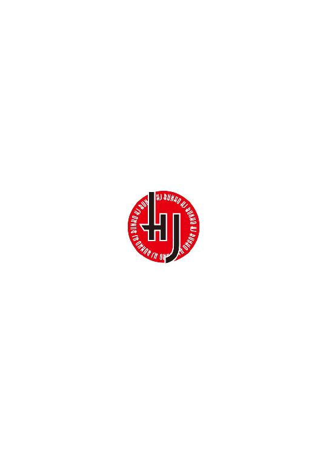
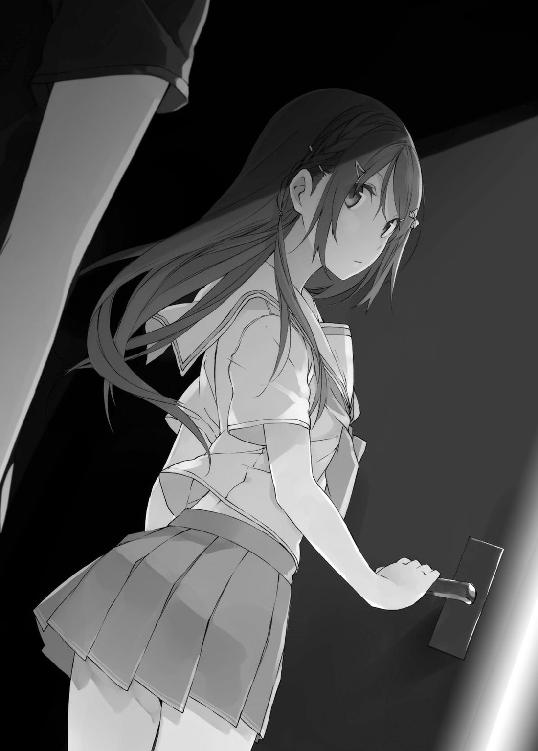
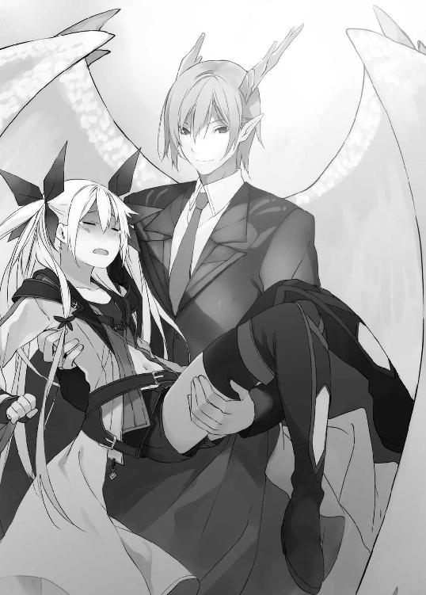

| VRMMOをカネの力で無双する (HJ文庫) | |
| 鰤／牙 | |
| (2014) | |


０ プロローグ
空気が弾け、光が割れ、音が裂ける。炎が砕け、雷が舞い、ぶつかり合う二つの斬撃に対して、その間に存在する全てのオブジェクトは、存在することを許されない。あまりにも現実離れした、超常的な光景。そう、これは決してリアルなどではない。
だが、この状況下にあって愉悦さえ浮かべる二人のアバターを目の当たりにしたとしても、人々は納得できるのだろうか。しょせんこの光景は、電気信号が巻き起こす錯覚でしかない。その事実に対して、容易に首肯してしまうことを、人々は自分の心に許せるのだろうか。
アスガルド大陸を代表する、最強のプレイヤー二人の激突。それを誰もが固唾を呑んで見守っていた。
人間と竜人族。
戦士と魔法剣士。
あるいは......、
二人の違いを、より決定的に指し示す言葉なら、まだある。だが、それをここで軽々しく記すべきではないだろう。
ドラゴネットの男が持つ剣を、少年が弾き飛ばした。だが、その場にいる誰もが、勝負が決まったとは思わない。男はメニューウィンドウを呼び出し、手馴れた仕草でコンフィグを選択する。すぐさま男の手に、先ほどのものとまったく同じ剣が召喚された。やや装飾華美だが、極めて高い攻撃数値を持つ大振りの長剣である。一本一二〇〇円という、コラボレーションアイテムにしてはやや法外な値段は、多くのプレイヤーの反感を買うに至っていた。
「ブルジョワなんだよなぁ......」
「ナンセンス。確かに僕は、君よりちょっとお金があるけど。でもそれが、何か問題あるかい」
人間の少年が漏らしたぼやきに対して、ドラゴネットはそのような問いかけをした。少年は肩をすくめて答える。
「いや、ないな」
「だよね」
男はメニューウィンドウを開いたまま、コンフィグを選択した。このページにはゲーム内課金の項目がある。何の躊躇もせずにクレジットカードのアイコンを選択すると、中から適当なサービスと数量をタッチ。そのまま暗証番号を入力し、
どさどさどさどさ。
アイテムインベントリに収容しきれなくなった無数の消費アイテムが、ドラゴネットの周囲に降り注いだ。このゲーム、ＮＰＣの販売するポーションの、一日あたりの流通量が決められている。だからこそ錬金調合のできる生産職にも日が当たるわけなのだが、このドラゴネットの男は、『基本アイテムパック』なる追加料金サービスを無数に選択することで、一人のアバターが一年かかっても消費しきれない量のポーションを一瞬で召喚したのだ。
「おいおっさん、そんなポーション使わねーだろ。無駄遣いすんなって」
「ナンセンス。無駄かどうかは僕が決める。このポーションの山だって無駄じゃないよ。僕が、君に勝つためにはね」
二つの影は、すでに他者を寄せ付けない空気を纏い、一触即発の緊張感を滲ませつつある。次に起こる何度目かの激突の果てには、とうとう決着はついてしまうのかどうか。
ここにいる全ての観衆にも、それを予測することはままならない。
竜人族と人間。
魔法剣士と戦士。
あるいは、二人の違いをより決定的に指し示す言葉なら、もうひとつある。すなわち、
課金勢と、廃人勢だ。
１ 御曹司、はじめる
ホテル・グランドヒルズにおいて、石蕗隼人の誕生パーティーが開かれたのは、七月の頭ほどの話であった。
今年で九十九歳になるこの老人は、石蕗財閥が解体された戦後に至っても関連企業の橋渡しとして奔走し、今なお各界に強い影響力を持つ。今は孫の明朗に財産を譲り、隠居生活を送っているが、派手好きな性格は治らず、一年に一回はこうしたパーティーを開く。
さて、日本の名士がかき集められるこの会場において、ひときわ注目を集める男がいた。
耳をすませば聞こえることだろう。この地上一二〇階の地においては、下界の雑多な喧騒など届かない。奏でられる弦楽器の旋律。上品だが冷酷な情熱を秘めた、やや早足の曲調。せわしなく弦を押さえる指先の動きとは裏腹に、男の顔は涼やかだった。整えられたプラチナブロンドは、毛先すらも微動だにしない。すれ違えば、はっと振り向かずにはいられないであろう、目の覚めるような美男子である。ハイ・ソサエティな令嬢たちが彼に送る熱視線なども、ごく当然のものと言えた。
やがて演奏が終われば、来賓の大半を占めていた聴衆が、惜しげもない賞賛の拍手を送った。
男は特別気をよくするわけでもなく、さも当然と言わんばかりの一礼の後、彼のために空けられていた席へと戻って行く。
「さすが、ツワブキコンツェルンの御曹司は多芸でいらっしゃる」
「目の覚めるような演奏でしたよ。お見事ですな」
自分よりふた回り以上、親と子ほどに離れた男たちからの美辞。
「一朗さん。今の曲、エルンストの〝魔王〟でしょう？」
「ヴァイオリン・ソロの中でも難曲と聞いておりますのに。あっさりと演奏なさってしまうのね」
見目麗しくきらびやかな、それでいて決して下品ではない美女たちからの麗句。
そのいずれもが、石蕗一朗にとっては聞き慣れたフレーズでしかない。ヴァイオリンをケースにしまいながら、適当に相槌を打つ。このヴァイオリンも、何かの余興になれば良いと思い持ってきた程度のものであって、そもそも触れること自体二、三年ぶりだ。自身の天才性を自覚する一朗としては、それらの賛辞を当たり前のものと受け取りつつも、こんなものしょせんは手慰みだとも思う。
ナンセンスだな。
何が、というものを思い浮かべるでもなく、漠然とそんな言葉が浮かんだ。演奏の腕前を褒められたところで、精神の高揚などありはしない。結局は退屈なのだ。石蕗一朗は冷めている。
彼の曽祖父である石蕗隼人は、少し離れた席で政治家の先生方と談笑している。ときおりこちらに視線を送ってくるところを見るに、自分を話の肴にしているのだろう。
一朗は退屈な心地を持て余しながら、ふと、テーブルの隣でガチガチに固まった少女を見やった。白いドレスは煌びやかだが、着られている感が否めない。衆目に愛くるしいとは言っても、周囲の美女たちとは比べるべくもない。そんな少女だ。
「借りてきたネコみたいになってるよ、明日葉」
一朗は、少女に対してそう声をかけた。
少女は何か言いたげに一朗を見、そして顔を伏せてから、もう一度一朗を見てこう答える。
「だって、だって。あたし、こういうところ、初めてなんだもん」
石蕗明日葉の応答とは、それであった。
「だいたい、うちなんかイチ兄ぃのとこと違ってフツーのサラリーマンのおうちだし。なんでこんなところに呼ばれたんだろ。大お爺ちゃんが何考えてんのか、全然わかんない」
「特に意味はないんじゃないの。ひい爺さんは、明日葉のことが好きだし、それ以外の理由なんて」
一朗は、一歩一歩淀みのない動きで会場内を移動するウェイターを呼び止め、オレンジジュースをグラスに一杯持ってくるよう伝えた。ウェイターは優雅に、しかし嫌味ない笑顔で一礼すると、すたすたとその場を歩き去っていく。
「イチ兄ぃの自分勝手なとこって、ぜったい大お爺ちゃん譲りだと思う」
「はっはっは、ナンセンス。僕はあんなに頑固じゃないと思うんだけど」
「そう思ってるのイチ兄ぃだけだよ」
明日葉が唇を尖らせる頃に、先ほどのウェイターがオレンジジュースをトレーに載せてやってきた。一朗に促されるまま、彼は明日葉の前にグラスを置く。シャンパングラスを思わせる細長い上品な容器に、柑橘系特有の甘酸っぱさを漂わせた液体が、これまた上品に注がれていた。
少女は、ため息と共にグラスを取って液体を見やる。そのまま口に運ぶ様子はなかった。
「これも一杯一二〇〇円とかいうレベルのアレなんでしょ？」
「知らないけど、そんなもんなんじゃないの」
「絶対ありえない。こんなの飲むくらいだったら、その分返金してもらってコスパ最強のさらしぼオレンジを飲むもん」
明日葉は愚痴じみたものしかこぼしていなかったが、緊張は徐々に解けているようである。
ま、客観的に見れば、今日のパーティーの来賓について、曽祖父・石蕗隼人のチョイスにはいささか疑問もあろう。大規模な血縁関係者の中で、呼ばれたのは曾孫にあたる一朗と明日葉のみである。一部の来賓は、一朗の実父にしてツワブキコンツェルンの総裁でもある石蕗明朗の参加を期待していたようだが、彼は来ず、結果として父とコネクションを結びたがっていた多くの上流階層のおべんちゃらを、一朗は一身に受けなければならなくなっていた。いやはやナンセンス。
結局のところ、曽祖父は優秀な曾孫（一朗だ）と可愛い曾孫（明日葉だ）を外部に自慢する以外の意図は、大してないのだろうと思われる。一朗はこう見えて曽祖父のことが好きだったから列席しているのだが、楽しんでいるかと言えば、そうでもない。
「ねぇ、イチ兄ぃ、最近イチ兄ぃってどんなことしてるの？」
最終的には一二〇〇円分のオレンジジュースを一息に飲み干した明日葉が、そんな話題を切り出した。
「それは仕事で？ それともプライベートの話？」
たずねると、明日葉は呆れた顔をする。
「明朗おじさんの仕事はあんまり手伝ってないんでしょ？」
「全然手伝ってないよ。まぁ、僕のやっていることは変わらないかな。最近はよく山梨の方に行くよ」
「どーせまた、変な虫探してたんでしょ？」
「変な虫かどうかは主観の問題かな。僕は綺麗な虫だと思うんだけど」
また、という言葉が示す通り、一朗は虫の観察を趣味としている。山梨に出かけたのも、現在は希少種とされている国蝶オオムラサキを探すためである。この独特の斑紋を持つ昆虫の魅力を語り出せば一晩では済まないが、そこを自重する精神も一朗にはある。
「そんなんじゃイチ兄ぃ、お嫁さんできないよ？」
明日葉がぼそっと言葉を漏らすと、周囲の美女がガタガタッと反応する。上流階級に生きる女性であれば、ツワブキコンツェルンの御曹司・石蕗一朗に見初められ、セレブ・オブ・セレブの階段を駆け上りたいと夢見るシンデレラは数多存在する。だが一朗はこう答えた。
「僕という個体で人類は完成しているから、種を増やすことに興味はないんだ」
これには百年の恋もドン引きで、大抵のお嬢様方は夢から醒める。
ただ、親戚づきあいの長い明日葉には、この程度のキモい発言には慣れっこであるのか、平然と言葉を続けた。
「イチ兄ぃさぁ、オンラインゲームとかやらない？」
「やらない」
「.........」
「.........」
躊躇も逡巡もない。即答である。
「話終わっちゃったじゃん！」
「ナンセンス。僕の性格くらい、明日葉だってわかってるんじゃない」
「い、いじわる......」
「人によってはそう見えるかもしれない」
明日葉は溜め息をつき、言い直すことにした。
「えぇとね？ えっとね？ あたし、最近、ＶＲＭＭＯ、やってるんだ」
「へぇ」
ＶＲＭＭＯと来たか。一朗は、明日葉の口から出るには意外な単語に、姿勢を正した。
ＶＲというのは、要するにバーチャル・リアリティ。仮想現実技術のことだ。十年くらい前に、ＭＩＴを卒業したナントカという天才少女が提唱したのが、量子波動と脳を共振させることで、意識を仮想空間に没入させる体感型ＶＲ技術、いわゆるドライブ技術であり、現在は仮想現実と言えばもっぱらこれを指す。
で、ＭＭＯというのはマッシブリー・マルチプレイヤー・オンラインである。そのあとにＲＰＧとつくのが一般的で、難しい説明を抜きにすれば、世間一般に流通するオンラインゲーム。いわゆる〝ネトゲ〟と俗称されるものの大半は、ＭＭＯＲＰＧに該当する。
ＶＲＭＭＯというからには、そのＶＲ技術を駆使したＭＭＯである。明日葉は確か、まだ中学生だったはずだ。仮想空間でのコミュニケーションや、多彩なやり込み要素を前提としたオンラインゲームに、過剰にのめり込むことは感心できない。
と、言うのは、まぁ世間一般の常識、考え方であって、石蕗一朗は基本的にそういったものには縛られない男である。なので、彼女の口から出た言葉に特に渋い顔は見せず、ただ活発でアウトドア派の明日葉がそうしたゲームをプレイしていることに対する微かな驚きは、素直に表に出した。
「珍しいね」
「う、うん。実はその、ちょっとね......」
彼女の歯切れの悪さを見るに、おそらく背景には何かしらの事情がある。一朗に『やらない？』と尋ねたのは、おそらくは誘いだったのであろうし、これが明日葉のＳＯＳであることは、彼にもだいたい察しがついた。
「で、えーと。イチ兄ぃにも、一緒にやってほしいなー、なんて......」
「ふむ」
一朗は顎に手をやって考え込んだ。親戚筋の中でも比較的可愛がっている明日葉の要請である。無下に断るのも可哀想だが、一朗はそれだけでは動かない。自分の中にしっかりとした価値基準を定め、それに従って行動する。一朗は原則として、自分がやりたいと思ったものしかやらない。
どうしたものかなぁ、と思う。ここ最近、退屈を持て余していたのは事実であるのだ。単なるＭＭＯというのならともかくとして、最新技術の塊であるＶＲが頭につくのなら、興味がないことも、ない。
「それって面白い？」
「ん、んー......」
そこですぐに頷けない明日葉の正直さは、嫌いではない。
「なんか、変な感じ。ゲームっていうか、ゴッコ遊びやってるみたい。自分の身体を動かすからかなぁ」
「なるほど」
「でもねでもね、イチ兄ぃは気に入るんじゃないかなぁ。グラフィックとかは凄い綺麗だし」
「明日葉がそう言うなら、やってみようか」
一朗がそう言うと、少女はぱっと顔を明るくした。
「ほんと!?」
「ほんと」
実のところ、最近の退屈さえ紛れてくれれば良いのだ。投資金額など大したものではないだろうし、自分が気に入ればそれで良い。もしゲーム自体が心の琴線に触れなかったとしても、明日葉のＳＯＳ次第では、それに付き合ってやっても良い。
そういえば、と一朗は思い出した。彼の家の住み込み使用人も、最近ＶＲＭＭＯにハマっていると言っていたな。タイトルはなんだったろうか。
「でね、そのゲーム、ナローファンタジー・オンラインって言うんだけど」
そう、確かそれだ。と言っても、市場に流通しているＶＲＭＭＯのタイトルなど実質ふたつくらいで、経済界にて仮想現実技術の動静を見守る人間達にとっては『売れている方』『売れていない方』で認識されている。
確かそちらのタイトルは、売れている方だったはずだ。
「桜子さんもこのゲームやってるって言ってた」
「あー、あの人かぁ。確かに好きそう......」
一朗の家の住み込み使用人とは、明日葉も数えるほどしか会っていないはずだが、彼女の記憶には割と鮮烈に刻まれているらしい。言うほどエキセントリックな性格をしているとは思えないものの、それでも、明日葉くらいの少女にとっては刺激の強い女性であったかもしれない。
ひとまず、一朗がゲームに手を出す旨を告げたことで、明日葉はホッとしたような笑顔を見せた。はしゃいでいる、などといった様子ではないところを見るに、やはり一朗と一緒にゲームをやってみたかったというわけでは、ないらしい。明日葉ほどの年ごろの少女が、そうまでしてＶＲＭＭＯに没入する理由とは何か。考えることはできるが、確証が得られない以上は本人の口から語られるのを待つしかない。
「ところでイチ兄ぃってそもそもゲームやるの？」
「大学時代の友人が、それなりにゲーム好きでね。彼に貸してもらった〝ポピュラス〟は面白かったな」
「なにそれ」
とは言っても、一朗が大学に通っていたのはもう十年以上前の話だ。コンピューターゲームにも長らく触れていない。天才児ともてはやされたあの頃を懐かしむわけではないが、今になって思い返すと、もう少し年相応の楽しみ方はあったなと思う。
ゲームをやらないとは言っても、プログラムによって厳粛に定められた制約下で自分なりのプレイスタイルを見つけていく行為は嫌いではない。きっと良い刺激になるだろう、くらいの期待はしている。
「良かったー。実はね、イチ兄ぃにこのお願いがしたいから、パーティーにも来たんだ」
「メールか電話でも良かったのに」
「お願い、っていうのは、顔を突き合わせてやらなきゃ伝わらないでしょ？」
歳の割に明日葉はこういうところで律儀だ。
ともあれ、白いドレスを着た少女は嬉しそうな笑みを浮かべていた。結構、と一朗も頷く。彼女がゲーム内でどういう遊び方をしているのか、いろいろ聞くことができたので、パーティーの残り時間はあまり退屈をしないで済んだ。
「ところで、まだジュース飲む？」
「こんなジュース飲み続けたら、経済感覚狂っちゃいそうだから、要らない」
ツワブキコンツェルンの御曹司、石蕗一朗。彼の名を知らぬ者など、世界の上流階級においても存在しない。親の仕事を手伝わず、暇さえあれば珍しい虫を探して喜んでいる一朗ではあるが、その実彼は脛かじりな道楽息子では決してない。彼の住まいも、生活費も、メイドの給料も、すべて彼自身の稼いだポケットマネーで賄われる。一朗が両親から小遣いを貰ったのなど、十歳の一月が最後だ。
何しろ孤高のロイヤル天才児・石蕗一朗である。九歳でハーバード大学を卒業したとき残した論文が、経済界に与えた影響について、今さら紙面を割くまでもないだろう。全世界の経営者を震撼させた新理論は、今なお威光を伴っていたるところに轟いている。
幼少期をウィーンで過ごしたこともある一朗は、ヴァイオリンとピアノの演奏もプロ級であり、上流階級の人間だけを集めた音楽イベントが開催される際は、必ず彼の姿がある。一朗が戯れに描いた絵画は、現代美術の最先端として多額で取引される。趣味の一環で世界を飛び回り、見つけた新種の昆虫は二十を下らない。
そうしたあれこれを、一朗は片手間にやってしまうのだ。
時間にゆとりが取れれば、大学の客員教授として講壇に立つこともある。経済学に精通する身として、有償で資産運用の相談に乗ることもある。アイドルデビューしてお茶の間を騒がせたのは二年とちょっとだけだったが、その時手にしたまとまったお金は、うまいこと回して何倍にも膨れ上がっている。不況不況と世の中が喚こうと、カネはあるところにはあるのだ。
自分自身で稼いだカネである。どのような使い道をしようと、人から文句を言われる筋合いはない。
さてさて、世田谷区三軒茶屋に、一般人ではなかなか手の出せないような高級賃貸マンションがある。ツワブキパピヨン三軒茶屋。大家は石蕗一朗、設計は石蕗一朗。その最上階すべてが彼の住まいである。家賃収入など端金だが、維持管理費用や使用人の給料などに使ってまだまだお釣りがくるレベルだ。
朝食の後、一朗はリビングルームでアルモニアの高級ソファに腰掛けて、優雅なブレイクタイムを過ごす。一般人が思わず『でかけりゃいいってもんじゃないだろ』とつっこみたくなるような液晶テレビでニュースを視聴し、そのまま手元には新聞やらタブレット端末やら、その時々の気分に応じた読み物が置かれる。
この時、一朗は電話を片手に、さる総合商社の社長と談笑をかわしていた。
「相変わらず底意地の悪い真似をしてるみたいじゃないか」
そう言いながら、テーブルに新聞を広げる一朗の表情は愉快げだ。
「父も言っていたよ。あなたとは正面からやり合いたくないと。僕はそういったところは嫌いではないんだけど」
この青年の軽口からは、通話相手が経済界の重鎮・角紅商事のトップであることなど微塵も察せられない。一朗がよく相談にのる相手であり、株式市場におけるその立ち回りを、密かに認めている男でもあった。四十近い歳の開きはあるが、互いの互いに対する認識は『友人』に近い。もちろん、金銭の行き来が生じる以上、本質を突き詰めればもっとビジネスライクではある。
「へぇ、娘さんが。帰国したんだ。確か長いことパリに行っていたよね。新しいファッションブランドを立ち上げるとかで。目処が立ったんだ。良いことじゃないか。以前、デザインを見せてもらったけど、......ん？ いやぁ、さすがにそれはナンセンスだなぁ」
一朗が電話を続けていると、ダイニングよりトレーにポットとカップを載せ、一人の使用人が歩いてきた。一朗はそれに気づき片眉を上げると、電話の話を切り上げにかかる。
「とにかく僕にその気がないことは彼女に伝えてあるし、気変わりすることも多分ないと思うよ。うん。そうだね。それが良いと思う。ん、ありがとう。それじゃあ、また」
軽い別れの挨拶と共に電話を切る。使用人は恭しく一礼し、カップにポットの中身を注いだ。
「一朗さま、コーヒーが入りました」
「ん、ありがとう」
一朗は取り立てて微笑むでもなく、そのように応じた。
さて、石蕗邸にて住み込みで働く唯一の使用人であるが、その衣装が古式ゆかしいヴィクトリアン・メイドであるというのだから恐れ入る。なおこの仕事着は趣味である。本人の。
扇桜子は、石蕗一朗が道楽で雇った住み込み使用人である。それなりに美人でそれなりにスタイルがよくそれなりに教養のある人物を採用したつもりだが、これがなかなか優秀で、単なる使用人のほかに、秘書代わり兼運転手として重宝している。
なお、趣味でメイド服を着るだけあって、まぁ、割とそういう人間だ。彼女の部屋には、漫画とゲーム、アニメ、特撮のＤＶＤが山と積まれ、フィギュアやプラモデルまでもが一種の調度品のように並べられている。一朗は一度『地震が起きたらどうするの？』とたずねたことがあるが、彼女は神妙な顔で『死にますね』と答えた。『好きなものに囲まれて死ぬなら幸せなんじゃないでしょうか』とも言っていたので、本人にも覚悟はあると見える。
「角紅の社長さんですか？」
「うん。この間の資産運用相談についてのお礼をもらったのと、あとはちょっとした世間話」
彼女も元は一般家庭の生まれである。さすがに付き合いも長くなると、主人の交友関係も把握できてくるのだが、昔は出す名前出す名前が片端からビッグネームなことに驚いて、なかなか話が進まなかった記憶もある。
「桜子さんって、ゲーム好きだったよね」
一朗はコーヒーに口をつけた後、テーブル上のタブレット端末を手にとってそうたずねた。桜子は一瞬きょとんとしたが、すぐにパッと笑顔を作る。
「はい、好きですよ。ゲームだけじゃなくて、漫画とかアニメとかもですけれど」
桜子の使う砕けた敬語は、一朗の周りではあまりなじみがない。ありていに言えば物珍しかった。彼女を採用した理由のひとつだ。
「で、桜子さんが最近やってるっていう、ナローファンタジー・オンラインの話なんだけど、」
端末をいじって、ウェブブラウザを開く。件のゲームについての情報収集は、昨晩からちまちまと続けていた。評価は二分されていたり、妙な方向からバイアスがかけられた意見が多かったり、客観性にかけてどうも参考にならない。
明日葉との約束の話である。確か、桜子はヘビーユーザーだったはずだ。話題を振ると、彼女は元気よく答えてくれた。
「ナロファン！ もうドハマりですよ！ 先週、一朗さまが五日くらい山梨に行って帰ってこなかったときは、もうずっと潜ってました！」
「あぁ、帰ってきたとき部屋がいつもより汚かったのはそういう......」
「給料分のお仕事はしてますよ。棚の上の埃くらいは大目に見てください」
ぷいと唇を尖らせて、桜子はコーヒーカップを一朗に手渡す。
「僕も少しやってみようかなって思うんだけど」
「えっ、本当ですか！」
また笑顔であった。表情の忙しい女性である。
「知人でやってる人、いないんですよねー。クエストこなすときは野良ギルドばっか組んで......それはそれで楽しいんですけど、一朗さまが始めるっていうなら色々教えてあげられますね！ どんな種族とクラスにするんですか？ 取得するスキルは決めました？」
その声はいつになく弾んで聞こえた。まぁ、もともと性根の明るい女性ではあるが。
「何言ってるのかまったくわからないけど、まぁ適当に選ぶよ」
「そーですかー。まぁ操作方法に癖あるし、ちょっとバーチャル酔いもしやすいですけど、一朗さまならすぐ慣れますよ」
「あぁ、僕天才だからね」
「天才ですからねー」
桜子はウキウキした様子を隠しきれていない。一朗と同じゲームができるのが、そんなに楽しみなのだろうか。彼女との付き合いは、もう五年にもなるが、互いにその趣味に深く関わったことは今まであまりなかった。それを考えると、当然かもしれないな、と、一朗は思った。
「でも一朗さまからそんな話をするなんて珍しいですね。いつもは虫を眺めてニヤニヤしてるだけなのに」
「ナンセンス。漫画やアニメを見ているときの君の顔も大概に台無しだよ。実は、明日葉から誘われてね」
「明日葉ちゃん、ハトコの？ 確か中学生でしたよね」
ここで瞬時に正解が出てくるあたり、彼女の記憶力の良さをうかがわせる。
「うん。今年で十四だったかな。桜子さんとはひとまわり以上、」
「おっと、」
桜子は一朗の言葉を片手で押しとどめた。
「人には触れちゃならん痛みがあるのですよ、一朗さま。そこに触れたらもう命のやり取りしか残らんのです」
「ん、わかった」
どうせ何かの小説か漫画の引用であろうが、触れて欲しくないというのならば、無理には触れまい。
桜子は、『ちょっと待っててくださいね』と言って、ポットを置いたままその場を立った。台所の片付けが残っていたのかな、と思ったが、しばらくして彼女が持ってきたものを見て、そうでないとわかる。桜子の手の中にあるのは、ゲームソフトのパッケージと、何やら大掛かりな、ヘッドギア状の装置だった。
「これですよ、一朗さま！ これがナロファンとミライヴです！」
波がかった栗色のポニーテールを揺らし、桜子は言った。一朗はミライヴと呼ばれた装置を受け取って、検めてみる。思っていたよりも重い。
ミライヴギアは、コンピューターゲーム関連の大手企業ポニー・エンタテイメント社が開発した、最新のゲームハードである。ドライブ技術の開発者である少女を研究部門に迎え入れて、昨年に完成した。桜子が手に持っており、また明日葉もプレイしているというＭＭＯＲＰＧの方は、その少女が独立した後に作り上げたゲームだと聞いている。
「ゲームをプレイするには、このハードが必要なわけだ」
「もちろんインターネット回線に繋げないといけないですけどね。でも、この家の量子回線は大容量ですし、通信環境は快適でサックサクですよ」
「それは良かった」
一朗が、大家としてマンション全体に引いている量子回線は、通信会社との特別契約によって実現したもので、通信可能なデータ量は、一般家庭で使用するものを大きく上回る。オンラインゲームの快適なプレイにあたって、こうした環境の整備が必要だということは一朗も知っていたが、改めて手間をかけずに済むのは大変よろしい。
「一朗さま、今日にでもミライヴ買いにいかれますか!?」
「うーん」
一朗は、ミライヴギアを桜子に返し、再びタブレット端末に視線を落とした。
「それ、ミライヴギア・Ｘだよね。市販のやつだ。ＩＰＵは八テラフロップスか。大した性能だなぁ」
「高いんですけどねぇー。他のゲームハードに比べて......。今、コンシュマーゲームは携帯機一強ですし、実はそんなに売れ行きがよくなかったり」
タブレット端末には、ポニー社の製品紹介のページが開かれている。それも、個人向けではなく、企業向けのページであった。
「せっかくだから、性能の良い方を買いたいなぁ」
「お、後期型ですか。容量もちょっと増えてますし、重量も軽くなってますよ。初期ロットは不具合も多いらしいですけど」
「いや、このミライヴギア・コクーンって奴」
一朗がそう言うと、桜子は目を丸くした。
彼が指し示すタブレット端末の画面には、小型車を思わせる曲線的なフォルムの装置が、それっぽいキャッチフレーズと共に映っている。メタリックシルバーを基調としたカラーに、黒いプラスチックの透過板が目を引く。近未来的なシルエットなのは、桜子の持ってきたミライヴギア・Ｘと同じだが、性能がまるきり違う。ＩＰＵの浮動小数点演算は二〇〇テラフロップス。一昔前のスパコン並であった。こんなものが流通するのだから末恐ろしい世の中である。
桜子は、彼の発言を確かめるように、おずおずと切り出す。
「あの、業務用ハードの奴ですよね......？」
「そう、それ」
「ゲームセンターとかネットカフェとかでＶＲゲームを遊ぶための」
「うん、それ」
「ステキなお値段で、大きなゲームセンターとかでも少数しか導入していないという」
「それ、それ」
「かっ、買うんですか......!?」
「だって大した値段でもないし。せっかくだから良い環境でゲームしたいじゃない」
今までの流れをまるきり無視した、石蕗一朗のひとことであった。
主人の奇行には散々慣れっこであるはずの桜子だが、これには目を白黒させる。丸くなった目が更に白黒するのだから、傍から見て面白いと言ったらなかった。
「いっ、一朗さま！ 私、庶民の出なんですから！ 目の前でそんな乱暴なおカネの使い方しないでください！ おかしくなっちゃいますよぅ！」
その両目に涙を溜めているあたり、桜子の訴えは深刻であったと言えようか。だが一朗は、こともあろうにこう続けた。
「桜子さんの分も買おうと思うんだけど」
「はいっ！ ぜひお願いします！」
桜子陥落である。物欲というのは、割と恐ろしいものだ。
石蕗明日葉、名古屋の中学校に通う十四歳である。
将来の夢は、まだない。
九州薩摩の旧家にして戦前の大財閥である石蕗の血を引き、親戚筋には各界の著名人を多く持つ明日葉ではあるが、本人の家庭はいたって凡庸だ。父はその辺に勤めるただのサラリーマンで、母はちょっと英語が上手いだけの、インテリじみたただの主婦である。明日葉にとって誇れる自身のスペックというのも、小学校の時に交通安全の標語コンクールで銀賞を取ったことと、あとはまぁ、弱小中学のソフト部でエースピッチャーをやっていることくらいであった。
曽祖父・石蕗隼人の誕生パーティー。その会場で、又従兄の一朗をＶＲＭＭＯＲＰＧナローファンタジー・オンラインに誘ったのが、もう一週間前だ。翌日、さっそくゲーム機とソフトを購入した旨のメールが届き、明日葉は飛び上がった。彼女はすぐにでもログインして一朗に会いに行きたかったのだが、現実の分厚い壁がそれを許してくれなかった。
期末テストである。
両親からオンラインゲーム禁止令を通達された明日葉は、涙を流しながら一朗に謝罪のメールを送り、この一週間は復習の鬼と化し勉学に励んだ。一朗からは、テストの最終日にゲーム内で会おうというメールが返されて、明日葉はそれを心のエネルギーとして鉛筆を握る指先に力を込めた。力を込めすぎて五本ほどの鉛筆がダメになった。エースピッチャーの握力は伊達ではない。
本日、強敵である英語と数学を打ち倒し、明日葉は我が家へと凱旋した。母はにこやかな笑顔と共に、彼女のミライヴギアを取り出し、やり過ぎないようにという忠告の後にそれを返してくれた。
「聞いたわよ、明日葉。一朗さんも一緒にやるんですってね」
母は含みのある笑顔でそう言った。
「明日葉、最近、お正月にお爺さんの家に行っても、一朗さんと結婚するーって話、しなくなったわねー」
「その話やめてよぉ！」
どうせ突っ込まれると思っていたが、案の定だったので、明日葉は噛み付く勢いで叫ぶ。
「あたしだって、いつまでも子供じゃないし！ もう中学生だよ！」
「そうなの？ 一朗さんと一緒にゲームしたかったんでしょ？」
「したかったけど！ あー、もう、いいもん！ 夕飯には降りてくるから！」
頬をぷうっと膨らませ、明日葉はキッチンをあとにする。のしのし階段を駆け上がる姿は、既に復習鬼ではなかったが、別の角が頭から生えている。
お母さんは何もわかっていないのだ。そう、石蕗明日葉。もう子供ではない。なにせ十四歳である。
確かに、昔は事あるごとにイチ兄ぃにひっつき、自分はイチ兄ぃと結婚するのだと主張しては周囲の失笑を買っていた。それは認めよう。だがしょせん、過去の話だ。あれは年齢がヒトケタだったから許されたのであって、十歳の誕生日を境にそんな幼稚な考えはきっぱりと捨てた。ミレンなどミジンも残しちゃいない。
確かにイチ兄ぃ、石蕗一朗はイケメンで頭がいいし、自分に対してすごく優しい。お金も持ってるからモテる。運動ができる。手先が器用だ。絵が上手い。楽器の演奏も歌も上手いし、センスが良い。買い物に付き合ってくれた頃は似合う服をたくさん見繕ってくれた。素敵な男の人なのだ。親戚と言ってもロクシントーだから、ホーリツ的にも結婚に問題はない。でも、自分はイチ兄ぃにとって妹のようなもので、恋愛対象にはなり得ないのだ。初恋は実らない方が美しいって、お婆ちゃんも言ってたし。
だいたい、今回の件。そう、一朗をゲームに誘った件だって、ただ単に一朗と一緒にゲームがしたかったからという、幼稚極まりない理由だけではない。下心がなかったとは言わない。言わないけど、えっと、そう。もっと真面目で、シンエンなメイダイがあるのだ。お母さんは、そこんところを、わかっていない。
この内省、大半は明日葉が自分の心に芽生えた気恥ずかしさをかき消すための気炎であったのだが、明日葉自身、そこんところを、わかっていない。
「ふぅっ......！」
明日葉は、ミライヴギアを持ったまま自室に入り、やや乱暴に扉を閉めた。
半年前、両親にねだってまで買ってもらったこのミライヴギア。もちろん半分は自らのお年玉だが。これを購入したのは、ゲームに対する興味が発端ではない。そう、人探しなのだ。明日葉には、このゲームの中で、探し出さねばならない人間がいた。
ただ、思っていたよりもゲームの世界というのは広くって、おまけにレベルとか能力値とか、制約がキツくて自由に動き回れない。手っ取り早いのはパーティを組むことだと、親切なお姉さんが教えてくれたりもしたが、部活もあってなかなか時間のとれない明日葉とギルドやパーティを組んでくれるプレイヤーはいなかった。ゲーム機も高いから、迂闊に友達を誘うこともできない。
そこで、一朗である。
一朗ならば、時間とカネが有り余っている。明日葉に時間を合わせてプレイしてくれるだろうし、頭もいいから、きっと力になってくれる。というのが、明日葉の考えであった。
もちろん一朗だって最初は初心者だ。ゲームのプレイ歴では、明日葉に一日の長がある。実はここは、明日葉にとって極めて重要なポイントだった。なにせ、相手はあの完璧超人である。こちらから何かを教えるチャンスなど、そうそうにしてあるものではない。地道なレベル上げも功を奏して、明日葉のアバターも、いまやレベル三十台後半の大台に乗った。まずは最初、一朗と一緒に平原フィールドを駆け回って、レベル上げの手伝いをするのだ。
「ふっふっふっ」
ミライヴギアの電源を立ち上げ、ＬＡＮケーブルでインターネット回線に接続する。明日葉の口元が怪しい弧を描いた。
「イチ兄ぃ、あたしだっていつまでも子供じゃないんだから」
頼れるところを見せてびっくりさせてやるのだ。
強いて言うなれば、そう。一朗のところで働いているというメイドの、扇桜子という人がちょっと気がかりだった。彼女もそれなりにゲームをやっているというし。でも、あんなに広い一朗の家を毎日掃除したり、ご飯を三食作ったりしてるのだから、そんなに時間はとれないはずだ。きっと、明日葉と同じくらいだろう。
あの桜子という女性も怪しい人間だ。一朗とひとつ屋根の下である。正直、明日葉は一朗にさっさと身を固めてもらいたいと思っているのだが、それでも明日葉のメガネにかなわない女性には、きっちり釘を刺しておかねばならない。ハトコとしての務めである。
「ようし......」
明日葉は両手でミライヴギアを抱え込み、ベッドの上に正座して目を閉じた。精神集中である。
気合を入れるときはいつもこうする。ソフト部の試合の時もそうだ。
今日、ゲーム内でやることは山積みだ。イチ兄ぃに会う。彼を誘った本当の理由を話す。レベル上げを手伝う。そんでもって、桜子がついてきていたら、彼女がイチ兄ぃに変な手出しをしていないかどうか、きっちり確認して釘を指す。
全部やらなくっちゃあいけないのが、辛いところだが。
明日葉はフルフェイス型のミライヴギア・Ｘをかぶり、ベッドの上に寝転んだ。これがどんなメカニズムで動いているのか、彼女もよく知らない。ただ、頭の中に不思議な波が入り込んでくる感覚があって、明日葉の意識は、やがて現実世界から完全に遮断された。
本来は業務用遊技機であるミライヴギア・コクーンには、クレジットカード用のカードスロットが存在する。わざわざカード情報を入力せずとも、直接使用することができるのだ。メーカーからの心憎い配慮と言えよう。あまりにも露骨な要素であるためユーザーからの受けは悪く、コクーンを設置しているインターネットカフェやゲームセンターでも、カードスロットをテープやＰＯＰなどで隠してしまっているところも多い。
ナンセンスだ。
金が使えるなら使えばいいじゃん！ というのが石蕗一朗の思想であるからして、カードスロットに黒塗りのクレジットカードを挿入するのにも、何の躊躇もありはしなかった。現在はフューチャーポイントと言って、コンビニで購入できるいわゆるウェブマネーもあるのだが、そんなものを買ってくるくらいなら最初からクレジットカードを使う。
アルモニアの高級ベッドで寝起きする一朗には少々物足りなかったが、コクーンのリクライニングシートのすわり心地もなかなかのものである。全身をシートに預けると、ヘルメット状の機械、すなわち市販のミライヴギアＸと同型の装置が降りてきて、一朗の顔をすっぽりと覆った。
これだけは相変わらず窮屈だ。最新のバーチャル・リアリティ機材といっても、こういったところはちょっと残念である。
が、それもつかの間。一朗の意識と感覚神経は徐々に現実世界から遮断され、ミライヴギアの作り出した架空の宇宙へと招待される。暗闇と光が交錯し、支配するサイバー空間に、アイコンがひとつだけ浮かび上がった。ナローファンタジー・オンラインのプレミアムパックだ。
ナロファンには通常版と限定版があって、限定版でのみ使用できる種族があるなど、あからさまな課金優遇の傾向が見られる。これはユーザーからおおいに叩かれたり、心無き転売屋によって多くが更なる高値で売り飛ばされたりといった悲劇が起きたというが、一朗はそういった顛末にはあまり興味がなく、『まぁ選択肢が増えるなら買っておこうかな』程度の軽い気持ちで、秋葉原の片隅より超高額の値札と共に埃をかぶっていた限定パックを買い寄せたという事情があった。この辺の話は長くなるので、またいつかにしよう。
さて、ゲームを選択してくださいという文字。おそらく、日本の各地で稼動しているコクーンであれば、この仮想宇宙に、インストールされた複数のゲームアイコンが浮かんでいるのだろう。身体の感覚すら確かではないこの空間で、一朗が『触れよう』と思った瞬間、ゲームアイコンがまばゆい光を放ち始める。
光が視界（と言って良いのかどうか）を覆い尽くしたあと、一朗の意識の中にポニー・エンタテイメント社の、そしてミライヴギアのロゴが浮かび上がり、最後にシスル・コーポレーションの名前が浮かぶ。せっかくの仮想現実だというのに、こういうところは今までのゲームハードと変わらないらしい。
この電脳空間と、現実世界との具体的な境界がさっぱりわからない。毎度毎度気がつけば、意識は既に電脳空間に飲まれていた。脳を騙すという意味において、確かにこのミライヴギアは相当高性能な代物と言えた。
再び意識が光に包まれて、やがてそれが晴れる。それまでのサイバー空間とは異なり、空気や地面などが確かな実感を伴った場所へと転送される。正確には、転送したとの錯覚を、脳が起こす。大地、空、その他多数のオブジェクト。昨晩ログアウトした地点と、寸分違わぬ座標。一朗は、自分の手を握ったり開いたりを繰り返して、その感触を確かめた。ほんの数分前に、自分がいたはずの現実世界と、まったく変わらない実感。
いや、こればっかりは、一週間経っても感想が変わらない。大したものだ、と。
そう、石蕗一朗が、ナローファンタジー・オンラインを始めてから、既に一週間近くが経過していた。仮想大陸アスガルドにおける彼は、ツワブキコンツェルンの御曹司石蕗一朗ではない。竜人族の魔法剣士ツワブキ・イチローである。
まさかの本名プレイだ。
忠実なる使用人である扇桜子は『本名プレイって地雷プレイヤーだと思われますよ？』と、心優しい警告をしてくれたのだが、一朗は『ナンセンス』と切り捨てた。地雷というのは、踏んづければ爆発して手足の一本を奪っていくような、パーティプレイでのマナーや技量の欠如したプレイヤーの蔑称である。実際のところ、彼はおおいに地雷であった。
名前だけではない。
現実世界の自分こそが完璧な生命体であるという、いささか気持ち悪い信条を掲げる一朗は、アバターにグラフィックからボイスに至るまで、忠実に自分を再現した。ドラゴネットという種族の関係上、角や尻尾などは消せないのだが、プレミアムパック限定、すなわち課金種族たるドラゴネットは、一朗のあり方そのものを如実に示していたと言って相違なかった。
では、そんな彼に、逐一丁寧な忠告をしていた、扇桜子はどうか。
「お待ちしておりました、イチロー様」
年嵩を感じさせる重みのある、しかし、よく通る透明感のある声が響いた、今は亡き名優を彷彿とさせる声色である。
声を発したのは、全身に重厚なフルプレートアーマーをまとった壮年の男性である。短くかりあげた銀髪と、額から左頬までを縦断する大きな傷跡が特徴的だった。一朗に近づき歩み寄るたび、ガチャガチャという音がする。
「ログインは同時にしたと思うんだけど、桜子さん」
「おぉっと、」
一朗の言葉を、男は片手で制す。
「リアルの名前を出すのはマナー違反ですよ。今の私は、激シブの前衛騎士キルシュヴァッサー卿。ツワブキ家に代々お仕えする従者の家系でしてな」
「うん、君があくまでもそういう設定にこだわるって言うなら、いいんだけど」
「時折思い出したように本名で呼ぶのはわりとマジでやめてください。もう一週間も経つじゃないですか」
「素が出てるよ。キルシュヴァッサー卿」
そう、まったくもって驚きであるが、これが桜子である。まぁゲームであるのだから、アバターは当然自分とかけ離れた外見にも設定できるのだが、まさか性別まで偽ってくるとは。しかし桜子によれば、アバターを客観的に鑑賞する手段の希薄なＶＲＭＭＯでは数が減っているものの、従来のオンラインゲームでは性別の変更など日常茶飯事であったという。空恐ろしい話ではないか。
「私としては、現実世界と寸分違わぬイチロー様の方が理解できませんが。どんだけご自分が好きでいらっしゃるんですかなぁ」
慇懃な従者は口調までもが変わっている。
「別に自分が好きというわけじゃないんだけど。自分を偽る必要性が感じられないだけで」
「変身願望とかないんですかな」
「ない」
言いながら、一朗は人差し指で空中を二回叩く。彼の目の前に、半透明のウィンドウが展開された。
「お、手馴れたもんですな」
「一週間も経つとね」
これが、メニューウィンドウである。ナローファンタジー・オンラインは、その再現性の高さよりしばしば仮想空間であることを失念しがちだが、その中において数少ない『ゲームだ』と認識できる要素がこれである。
メニュー画面では、装備の変更やアイテムのオブジェクト化、フレンドの登録、そして課金などが行える。ついでに言うと、ミライヴギア同士によって構成される電脳上コミュニティ〝ミライ・ネットワーク〟にアクセスして、インターネット上のサイトを閲覧したり、専用のアプリケーションソフトをダウンロードしたりもできる。イチローのウィンドウには、既に有料無料を問わず様々なアプリが並んでいた。ビジネスに有用なソフトウェアも結構あって、意外とバカにできない。
「さて、時間もあまりないね」
メニューの下の方でこじんまりと動く時計を見て、一朗は言った。
「そう言えば、ハトコの明日葉ちゃんと会うのが今日でしたかな。アバターネームは既に？」
このゲーム、アバターネームの重複も可能であるので、結局名前というのも手がかりのひとつに過ぎないのだが、それでもまったく知らなければお話にならない。当然、イチローも事前に明日葉のキャラクターネームを聞き出しておいた。
「うん。〝フェリシア〟って言うらしいけど、」
「フェリシア！ ま、まさか、明日葉ちゃんも格ゲーマーである可能性が......」
「何を言ってるのかわからないんだけど、ルリヒナギクのことだと思うよ。ツワブキと同じで、キク科の」
二人が現在いるのは、ヴォルガンド火山帯と呼ばれるフィールドだ。キルシュヴァッサー曰く、レベル上げやスキルポイント上げに絶好のポイントがあって、二人はそこでの地道なレベル上げに勤しんでいた。ここから、明日葉改めフェリシアとの待ち合わせ場所である〝始まりの街〟には、それなりの距離がある。
「あー、やっぱり移動には馬が欲しいですなぁ。私、騎士ですから。騎乗スキルに補正がありますし」
山道を下りながら、キルシュヴァッサーはしみじみと語った。
「僕も、もう少し敏捷系のステータスが高かったら《竜翼》を習得できるなぁ」
「の、割には何やら嬉しそうに語られてますが」
「だって、現実世界では何かが足りなかったことなんてなかったし。お金も、才能も」
実際、イチローは嬉しそうな顔をしながら、火山帯の空を眺める。
「この間までは筋力系ステータスを伸ばしていらっしゃいましたな」
「うん。それは《オブジェクト破壊》が取れたからもういいかなって」
「ああ、ドラゴネット専用の。あまり戦闘には役立たなそうなスキルですなぁ。私は、そういうの好きですが」
「ゲームには厳格なステータスがあるから、思い通りにならないことがあるのが、良いよね」
「左様ですか。贅沢な楽しみ方ですな」
キルシュヴァッサーがぼそりとつぶやく。
当然、キルシュヴァッサーとしてはそれなりのイヤミを込めて呟いた台詞ではあるが、イチローにはポイズントードの顔面に《ウォータースピア》をブチ撒けたほどのダメージも見られない。大層なツラの皮であった。
そろそろ、ナローファンタジー・オンラインの概要について、大雑把な解説をしておこう。
世界で二番目に発売されたＶＲＭＭＯであり、売上とアクティブユーザー数では、先に発売されたタイトルを大きく上回っている。発売元はシスル・コーポレーション。仮想現実ドライブ技術の開発者であり、ミライヴギアの開発にも直接携わった少女が、直々に立ち上げた企業である。それを考えれば、ミライヴギアのスペックを十全に活かした広大な世界観演出にも納得がいくし、それに惹かれた多数のゲーマーが居ついてしまうのも、また当然と言えただろう。狭いという名前の由来も、これから同社が展開していくＶＲ世界の広がりに比べれば、この広大なゲーム内世界もまだまだ狭小であるという意気込みによるらしい。由来に関しては、このゲームの出発点が大学の狭い研究室だった、ということも、ときおり挙げられる。どちらにしても、これからより広い世界へ飛び出していくからこその、ナローファンタジー・オンラインだ。
ナロファンにおいて、プレイヤー達は冒険者となる。新たに発見された大陸アスガルドに足を踏み入れ、開拓し、その中に眠る謎に気づいていく、というグランドストーリーの骨子がある。プレイヤー達の情報は冒険者協会によって管理されているという設定で、運営はしばしばこの協会の姿を取ってプレイヤー達に呼びかけを行う。
プレイヤーがキャラクタービルド時に選択するのは、ステータスに直接関係ないものを除けば、種族とクラスだ。
種族は人間、エルフ、ドワーフ、獣人の四種類があり、そこにプレミアムパック限定種族のハイエルフ、ドラゴネット、マシンナーが並ぶ。
クラスは戦士や魔術師といったオーソドックスなものから、錬金術師、格闘家といった特定の分野に特化したものまで様々だ。最初に選べるクラスはひとつだけだが、サブクラス枠というものがふたつまで選択できて、最大三つのクラスの組み合わせが可能である。
例えば、キルシュヴァッサー。
彼は、種族は人間、クラスは騎士、戦士、聖職者の三種類を選択している。防衛戦と騎乗戦闘に長けた騎士をメインクラスとし、フィジカル系のステータスをまんべんなく補える戦士と、自他の治癒や補助に優れた聖職者をサブクラスに選択することで、最前線で敵の攻撃を受け止めるタンク役としてのビルドを行っている。同レベル帯のアタッカーに比べると攻撃能力は落ちるが、その分タフだ。
「卿は、そういうプレイングが好きなの？」
「タンク役ということですかな？ 別にタンクが特別好きってわけではないのですが......あー、でも、メインアタッカーよりはサポートやるほうが好きかもしれないですな」
キルシュヴァッサーは顎に手をやりながら答える。
「例えば、味方のひとりが窮地に陥っていて......そう、それがボスにあと一撃浴びせれば倒せるというくらいの、高火力アタッカーだとしましょう。ですが、彼の体力も危うい。そうした時、こう、前に出てですな。そのアタッカーが一〇人分くらい軽く吹き飛ぶような攻撃を受け止めて......『フ、まるで涼風だな......』なぁんて言えたら、私はもう死んでも構いませんかな」
「よくわからないなぁ」
「わかっていただこうとも思いませんが......。おぉっと、見えてきましたよ」
二人は既に火山帯から平原へとフィールドを移っていた。脅威度の高いモンスターのポップアップもなく、比較的安全と言われるヴィスピアーニャ平原の端に、そこそこ大きな規模の港町がある。
あれが〝始まりの街〟。多くの初心者で賑わう街だ。かくいうイチローも、一週間前はあそこからスタートした。
「そう言えば、フェリシア......殿の種族とクラスは聞いておりましたかな」
「今、敬称どうするか悩んだんだね」
「聞いておりましたかな」
「種族は人間族だって。クラスは魔獣使いだったかな」
イチローがそう言うと、キルシュヴァッサーは何やら難しい顔を作る。
「なるほどぉ。またこう、ニッチなクラスを選びましたなぁ」
「不人気職なんだ」
「イチロー様の魔法剣士ほどではありませんよ。でもまぁ、似たりよったりですな。得てしてこうしたゲームでは、特化メイクが強いというのはお教えした通りですが......」
「あー、ナンセンス。その講釈はまた今度ね」
キルシュヴァッサー＝扇桜子は、ゲーマーである。しかも頭にヘビーがつく。強いアバターを育成するためのセオリーは頭の中に叩き込まれている。そこから生まれる玄人なりの老婆心というのが、ときおり垣間見えた。
が、まぁイチローにとっては忠実なる従者の小言と大差がない。忠言である以上、耳は傾けるが、同じ内容を二度三度と聞かされてはさすがに辟易だ。
さて、二人はいよいよ門をくぐり、〝始まりの街〟に足を踏み入れた。
「一週間ぶりだ」
「ですな。あの時と比べると、イチロー様も見違える程ご立派になられました。特に装備が」
イチローの全身を覆うのは、これがまたファンタジー世界においては異彩を放つ衣装であった。青を基調としたジャケットとスラックスの上下には、蝶の翅を思わせる光沢が目立つ。ご丁寧にもその下にはシャツを着込んでおり、ランカスティオ霊森海の霊木を素材としているためか、内側にこもる魔力が霧状に漏れ出すエフェクトがある。ベルトも腕時計も革靴も、ゲーム内で最高の入手難度を誇るアイテムを素材とし、まるで有名ブランド店であつらえてきたかのように、彼の佇まいとマッチしていた。とうてい、ゲーム開始から一週間でたどり着く境地とは思えない。胸元に輝く蝶のブローチだけが、妙に不格好ではあったが、イチローはそれも気に入っている様子だった。
見違える程立派になったといえば、そうだろう。歩けば振り向かずにはいられない、という言葉は、目の覚めるような美男美女に対する形容詞だが、この場合あまりにもファンタジー離れしたその装備が、なおさらに衆目を引く要因となっていた。
「うん、アイリスもいい仕事をしてくれたよね」
イチローは装備の話題を振られると上機嫌になる。
「彼女はログインしてこないんですかな」
「期末試験で忙しいみたいだ。フェリシアにも会わせたかったんだけどね」
しばらくして、待ち合わせ場所である噴水広場までたどり着いた。新規プレイヤーや、おそらく彼らを誘ったであろう中堅層のプレイヤー達で、広場はそれなりにごった返していた。これはフェリシアを探すのも骨か、と思った矢先、キャラクター検索をかけるまでもなく、すぐに彼女は見つかった。
「いっち兄ぃーっ！」
広場の片隅で、元気よく手を振り回す少女がいる。意識のフォーカスを合わせると、その頭上には〝フェリシア〟という名前が確認できた。
フェリシアは、事前に連絡をもらっていた通り、小柄な人間の少女だった。それでも現実の明日葉に比べると、少しばかり背が高い。顔の作りは似ても似つかないのだが、ピョンピョンはねる姿など明日葉そのもので、まったくもって違和感はなかった。
「やぁ、フェリシア」
イチローは片手をあげて挨拶する。
「相変わらず元気な子ですなぁ」
キルシュヴァッサーものんきに言った。
「ゲームの中で会うのは、初めてだぁ！ イチ兄ぃは、イチ兄ぃでいいよね？ 名前、同じだし！」
こちらに駆け寄ってきてから間髪いれずにまくし立てる。舞い上がったテンションを隠しきれていない様子だ。
「構わないよ。僕はフェリシアと呼ぼう」
「うん！ あ、そーだイチ兄ぃ、フレンド登録！ フレンド登録しようよ！」
フェリシアはそう言って、宙を二回ノックしメニューウィンドウを呼び出す。こちらが答えるよりも手早い操作をこなして見せ、直後イチローの目の前には『フェリシアさんからフレンド申請が届きました。』というメッセージが表示される。
断る理由もないし、なにより誘ってくれたのはフェリシアである。イチローが『はい』をタッチすると、軽快な電子音が鳴って、ウィンドウが切り替わった。
『フェリシアさんをフレンド登録しました。フレンド：三人 残り：九九六人』
「やったー。イチ兄ぃ、これからよろしくー！」
「ん、よろしく」
勝手にイチローの手を取ってぶんぶんと振り回す。隣のキルシュヴァッサーに目線を送ると、彼も苦笑していた。
「あー、おほん」
軽い咳払いの後に、キルシュヴァッサーはフェリシアに微笑みかける。
「よろしければ、私も登録させていただいて、よろしいですかな」
「えっ、あ、はい......」
いきなり見知らぬアバターに話しかけられて、フェリシアはびっくりした顔を見せた。
「あ、えっと。イチ兄ぃのお友達ですか？」
「桜子さんだよ」
「えっ」
イチローがそう答える。フェリシアは聞き返し、キルシュヴァッサーは眉根を寄せた。
「イチロー様、ネタばらしが早すぎやしませんかな」
「隠しだてしておくつもりだったというのなら、卿もだいぶ趣味が悪いね」
「え、え、ど、どういうこと？ さくらこさんって、あの、イチ兄ぃの家の？」
フェリシアはあからさまに困惑していた。まぁ、さもありなん。
フェリシアもとい石蕗明日葉は、一朗の家に遊びに来たことが二度、三度ほどある。その度に、扇桜子とも顔を合わせていた。桜子はウェービングな栗色の髪をひと房にまとめ、全身をヴィクトリアン・メイドの装束で包み込んだバリッバリの美人使用人である。なおスタイルもそれなりに良い。
だが、いま石蕗明日葉もといフェリシアの目の前に立っているのは、そんな扇桜子とは似ても似つかない、いぶし銀であった。全身を甲冑で覆い、カイトシールドとナイトソードを背中に帯びている。顔の傷が歴戦の勇姿を物語っていた。なおスタイルは抜群に良い。
初見でその二人を同一視するのは、困難を極めるだろうな、とはイチローも思った。が、キルシュヴァッサーはよく通る渋みのある声でこう言った。
「はい、私が扇桜子ですよー」
「男じゃん！」
フェリシアのツッコミは的確である。
「アバターは男ですが。いいではないですか。現実と違う自分を楽しむのも、このゲームの醍醐味ですよ」
「そっ、それは......ううっ」
おそらく現実世界の自分よりも、美少女なアバターを設定した自覚はあるのだろう。その言葉にはフェリシアも反論できない。
「も、もうっ......！ もうっ！ もぉうっ！」
代わりに、牛のような鳴き声を上げた。
「やぁ、ゲームの中だと、フェリシアも現実世界より二割増しで愉快だ」
「好きで愉快なわけじゃないもん！ もうっ！ なんか、こう......なんかーっ！」
どうせ、桜子に会ったら何か言いたいことでもあったのだろう。そしてフェリシアは、その桜子のアバターを、それなりに美人でスタイルのいい女性アバターだと勝手に想像していたに違いない。それが超いぶし銀の騎士キルシュヴァッサーになってしまったので、言いたいことをぶつける先がなくなってしまった。結果、くすぶっている。そんなところだろうか。

だが、フェリシアはしばらくしてようやく、自分の中で折り合いをつけたらしい。鼻息も荒く、肩で呼吸をしている。現実世界の身体の方にまで影響が出ていなければいいが。興奮のしすぎはあまりよくないような気がする。
「まっ、まぁいいや！ イチ兄ぃ、ゲームはじめてから一週間だっけ！」
「うん。フェリシアの言うとおり、グラフィックも綺麗だし、なかなか新鮮だ。ありていに言えば、楽しんでいるよ」
「ふっふーん」
そこでフェリシアは、何故か胸を張った。張った胸は平坦だ。そこは偽らなかったらしい。
「イチ兄ぃ、レベルいくつになったー？」
「九十二」
「イチ兄ぃのバカッ！」
「ナンセンス。僕がバカなら、地球人類すべてが相対的にバカということになってしまう。あまり自分を悪く言うものじゃない」
いま、ツワブキ・イチローは史上稀に見るほど理不尽な怒られ方をしたのであるが、そこに対してまた、理不尽な切り返しをするのがこのイチローという男であった。
「ところで、どうしてフェリシアは僕をバカだと思ったのだろう」
「え、えっと......」
「ははぁ......」
口ごもるフェリシアをにんまりと見つめ、キルシュヴァッサーがしたり顔を作る。
「アレですな。フェリシア殿は、イチロー様のレベル上げをお手伝いしたいと、そう思っていたんでしょう」
「うっ......」
図星であるらしかった。キルシュヴァッサー、鋭い指摘である。
それも、さもありなん、かな。とイチローは思わないでない。石蕗明日葉は数年前から、以前ほど一朗にべったりしなくなったし（したそうな仕草は時折見せていた）、中学に上がってからは自分が大人であると事あるごとに主張していた。東山動物園で大人料金のチケットを買ってやらないと、烈火の如く怒るんだよ、と、従弟叔父からさんざんと聞かされていた。そんな明日葉である。きっと、レベル上げの先導をして、頼りになる自分をアピールしたかったのだろう。
それを思うと、ちょっと可哀想なことをした。かもしれない。
「だいたい、イチ兄ぃなんでそんなにレベル高いの！ あたしなんか、三ヶ月くらいやってまだ四十だもん！」
メニューからフレンド情報を見ると、三十八とあった。
「そこを、お聞きになりますか......」
キルシュヴァッサーは、非常に暗い顔を作る。
「え、な、なに？ イチ兄ぃ、なんか、まずいことやったの？」
「ナンセンス。正攻法だよ。ルールを逸脱するのは、誰にでもできるからね。そういうのは好きじゃない」
イチローとしてはむしろ、正攻法で効率よくレベルを上げているだけなのに、後ろ指をさされるような状況に陥っているのが、納得いかないのである。
そんなイチローの心情を無視する形で、キルシュヴァッサーは重々しく告げた。
「よろしい、お話ししましょう。イチロー様が、どのようなおぞましい手段を用いて、一週間でレベル九十二などという馬鹿げた数値に至ったのかを......」
「卿、実は楽しんでいるんじゃないかい」
「おわかりになりますか。あ、ちなみに私はサービス開始当初から、仕事の合間にログインし続けて、いまレベル六十八ですな。もうすぐ一年になりますから、三ヶ月で四十というのはそこそこハイペースですよ」
しっかりフェリシアの頑張りをフォローするあたりが、キルシュヴァッサーもオトナの女性と言えた。彼は男性だが。
「え、えっと。キルシュヴァッサーさん」
「キルシュで構いませんよ」
「キルシュさん、それでその、イチ兄ぃはどうやってレベル上げを......」
「おカネの力ですよ」
キルシュヴァッサーは、遠くを見つめて呟いた。
ナローファンタジー・オンラインは、課金コースの豊富なゲームである。ただでさえ月額九八〇円という基本料金が、フェリシアをはじめとする学生プレイヤーの財布を苦しめているのだが、それはさておき。
基本料金のほかは、ＮＰＣショップの品揃えが増えたり、購入価格が値引きされたりする『エクストラコース』、獲得資金や獲得経験値などがわずかに上昇する（一・一倍）『ロイヤルコース』などがあり、複数のコースを併用できる。嬉しいところでは、最初の一ヶ月のみ適用され、資金と経験値の獲得に更なる補正がかかる『スターターコース』などが存在する。
コースの他に選択できる追加オプションというのも、要するに体の良い課金サービスのことだ。ポーションなどの消費アイテムを、リアルマネーでまとめて購入する『基本アイテムパック』、二十四時間限定で獲得資金・経験値に異様なブーストがかかる『ブースターパック』などがある。多少種類が豊富すぎる気がしないでもないが、時間の取れない社会人が、ヘビーユーザーに追いつくためにはありがたい有償コンテンツであるといったところか。
イチローはめんどくさいので全部購入した。
結果として、イチローはブーストボーナスの鬼と化したのである。それだけではない。課金コンテンツの片端から片端までを余すところなく購入し、すべての装備アイテムを試した。役に立たないとわかったものは遠慮なく売った。課金アイテム売却による、いわゆる〝錬金術〟ができないよう売値は安く設定されていたが、イチローは躊躇しなかった。
ここでヘビーゲーマーであるキルシュヴァッサーが隣にいたことも、イチローには幸いした。キルシュヴァッサーは、初期レベルでは攻略の厳しいモンスターが出現する地域へイチローを連れていき、高効率のパワーレベリングを行った。レベルは上がった。愉快な程に上がった。高度経済成長期の日本だって、ここまで上り調子ではなかっただろう。
上がったのはレベルだけではない、入手する資金やスキルポイントなども倍々で入ってくるのだから、実数値以上の実力がついていく。特にスキルポイントは重要だった。このゲーム、パッシブスキルがステータスに及ぼす影響というのが、なかなかに大きい。イチローは惜しげもなくスキルポイントを投入して強力なスキルのレベルを上げていき、不遇職と言われる魔法剣士において一線級とも言える実力を獲得した。
そして一週間。
気がつけば、イチローのレベルはキルシュヴァッサーをはるかに凌駕していたわけである。
「開いた口がふさがらないよっ！」
「ふさがらなければ喋れないと思うんだけど」
フェリシアの魂の叫びに対して、イチローはひねくれた答え方をした。
「いやぁ、恐ろしい光景でした......」
キルシュヴァッサーはしみじみと語る。
「おカネ使ってレベル上げるとか、なんか、ずるい！」
「ナンセンス。僕の使ったお金は僕が稼いだもの。つまり僕の才能の延長線上にあるものだ。それを使うことで、ゲーム内での才能を購入することはずるいことじゃない」
正気の沙汰でないようなことを本気で語るのが、ツワブキ・イチローの恐ろしいところである。
まぁ、プレミアムパックをはじめとして、これだけの課金優遇コースを用意している運営にも何やら問題がある気がしてならないが、シスル・コーポレーションは中小企業である。くわえて、膨大なサーバー維持費や、大容量量子回線の通信費、開発費、継続して行われるメンテナンスなどを考えれば、仕方のないことである。
「う、うう......オトナってずるいよぉ。キルシュさぁん......」
「まぁ私もそのオトナなんですが......。泣かないでください、フェリシア殿。あなたもいずれずるくなりますから」
キルシュヴァッサーの言葉はなんの慰めにもなっていない。
「で、フェリシア」
そろそろ本題に取り掛かるべきだと思ったのだろうか。イチローは話題を切り替えた。
「僕をゲームに誘った本当の理由を、話しにきたんだろう」
「あ、うん......。気づいてたんだ。さすがだね......」
フェリシアは涙を拭ってそう言う。
さて、そうは言ったものの、フェリシアが言葉を切り出すまでには数秒の時間を要した。言葉を考えているのか、少しだけ躊躇いがあったのか、それはわからない。
「実はね、イチ兄ぃに、友達を探して欲しいんだ」
「友達？」
「フェリシア殿の？」
二人がたずね返し、フェリシアが頷く。
フェリシアの話とは、こうであった。
石蕗明日葉には、小学校高学年の頃から、それなりに親しくしている友人がいる。名前を桐生世良。同じ中学に進学したが、一年、二年とクラスが別々だったので、以前に比べれば疎遠になっていた。明日葉は女子ソフト部に入部し、世良が何か部活に入ったという話は聞かなかったが、それでも互いに友人であると思っていた。
勘違いを正すことになったのは、ちょうど三ヶ月前。
ふと、世良はどうしているだろうかと思った明日葉は、その世良のいるはずのクラスを訪ねてみた。そこで明日葉は、初めて、桐生世良が中学でどのような経験をしたかを知ることになる。
世良は学校に来ていなかった。その時点で、既に半年以上。立派な不登校生徒である。原因は、いじめだった。
「あたし、その、責任......感じちゃってさ」
「気づいてあげられなかったことに？」
「うん......」
その桐生世良という子が、その子なりのＳＯＳを発していた可能性は、もちろんある。だが、気づいてあげられなかったことは、決して明日葉の責任ではないはずだ。そのような言葉をかけてあげるのは簡単だったが、イチローは何も言わなかった。
「で、桐生がこのゲームをやってるって知って、オンラインゲームなら、桐生を探せるんじゃないかって、やってみたんだけど......」
「行き詰まった、と」
「だって広いんだもん。このゲーム......」
確かに、ナローファンタジー・オンラインが描くアスガルドの大地は広大だ。緻密なライティング技術には舌を巻くが、人探しをするのには不向きだろう。その桐生世良という子だって、現実世界と同じ名前・姿であるとは限らないのだ。
「それで、イチ兄ぃだったら、力になってくれるような気がして......」
フェリシアはそう言って、顔をあげた。複雑な感情を秘めた視線が、イチローを見上げる。
「いいよ」
「ほんと!?」
「えらくあっさり頷きましたなー」
最初から、何かしらのお願いをされるのはわかっていたことなのだ。まさか人探しとは思わなかったが。かわいいハトコからの依頼であれば、黙ってつっ返すわけにもいくまい。それに、過去あれほど自分にべったりだった少女が、誰か他人のために動こうとしていること自体が、イチローにとっては何やら嬉しく感じられた。
「アバターネームは、わかっているんですかな」
「うん。でも、他は何も」
キルシュヴァッサーの問いに、フェリシアが頷く。
となると、それが唯一の手がかりになってしまうな。何もないよりは、マシだが。
「キリヒトって、言うんだって」
「ほほう！」
フェリシアが答えると、キルシュヴァッサーは何やら嬉しそうな声をあげた。
「ＶＲＭＭＯを題材にした有名小説の主人公ですな。いやぁ、いいセンスをしてらっしゃる。最近アニメにもなりましたよ」
「僕は読んだことないんだけど」
「ライトノベルですからなぁ。全身黒ずくめで、一本の刀を背負っているのですよ」
その言葉に、イチローはふと引っかかるものを感じる。
「そのキリヒトなら、確か僕、どこかで見たような気がするな」
「おや、奇遇ですな。実は私もなのですよ」
二人が次々と言うが、フェリシアの顔は晴れない。どちらかといえば、むしろ苦笑のようなものを浮かべていた。
「うん、実はあたしも......」
その折、彼らの真横を、黒いコートに身を包んだひとりの青年アバターが通りすぎる。頭の上に燦然と輝く〝キリヒト〟の名前を、彼らは見逃さなかった。しかし、そこで顔を輝かせるようなことは、決してない。
イチロー、フェリシア、キルシュヴァッサーの三人は、〝始まりの街〟の噴水広場を振り返った。
黒いコートに、ひと振りの剣。同じような格好をしたプレイヤーが、噴水前にひしめいている。彼らは一様に初心者であるか、中堅プレイヤーだ。そして、そのアバターネームは全員が全員〝キリヒト〟であった。
２ 御曹司、探す
近年ＭＭＯＲＰＧにおいて、パーティを組まずに一人で攻略を楽しむ『ソロプレイヤー』は増加の一途を辿るという。虚構の世界においても人間関係が煩わしくなってなどという理由であるとするならば、実に現代らしい話だ。が、オンライン上とは言え、結局は社会の傾向であるので、それを外部からどうこういうことはできないだろう。
もちろん、多人数プレイを前提としたゲームシステムである以上、最前線においてもソロプレイを継続することは極めて困難である。強大なモンスターの多くは、プレイヤー一人一人などとは比べ物にならないステータスを設定されているし、無限に湧き出るモンスターをたった一人で捌ききることなどできるものではない。
それがＶＲＭＭＯであるとすれば、なおさらである。
いわゆる一人称視点でゲームを行うＶＲＭＭＯにおいては、従来の三人称視点よりも死角が多く発生し、ＭＯＢに囲まれた際の隙が生じやすい。コントローラーをいじくって、ぐるりと周囲を確認などという便利な真似もできない。加えて、プレイヤーの疲労がキャラクターの性能にもダイレクトに反映されるのだ。ＶＲＭＭＯのトップタイトルであるナローファンタジー・オンラインにおいても、その最前線〝デルヴェ亡魔領〟にソロプレイヤーの姿を確認することはできない。
たった一人を除いて。
亡魔領の中枢部。魍魎が跋扈する廃墟街を、黒い影が疾駆する。初期装備であるレザージャケットの上に、各関節部を覆うポイントアーマー。高い抗魔力を備えたコートが翻り、剣を携えた青年が死線と揶揄されたデルヴェの地に躍った。
「しッ......！」
上段から下段に向けての振り下ろし。銘も飾りもない剣が閃き、唯一の存在価値を証明するかのように歓喜の血飛沫を上げる。四ケタの数字がぱっと飛び跳ね、亡者は怨嗟の声すら吐き出せずに消えていく。
返す剣筋が、そのまま周囲を囲み始めていた数体のゾンビを引き裂いた。
ゲームの世界ではいくら剣を酷使しようと、血糊によって切れ味が鈍ることなどない。耐久値にはまだかなり余裕が残っている。ならば、無心で剣を振るい続けてもなんら問題はないだろう。突撃と共に逆袈裟斬り。活路を開き、再び直進を開始した。
そう、これはゲームだ。現実世界から隔絶された、どこか遠い世界の話。
彼には、自分はその中で、屈強な戦士を演じているに過ぎない矮小な人間である、という自覚があった。迫り来る魔物を片端から切り伏せていく最強の剣士は、この虚構の世界にしか存在しない。わかっている。しょせん、こんなものはうそだ。偽物だ。まやかしだ。
だが、そのまやかしの中でも最強でいられるならば、価値はある。弱気な自分を忘れ去るための、ツール。現実世界でも、これだけ強くあれたらという理想像。そのイメージを、明確に自分のものにするためにも、戦い続けなければならない。そして、ここで剣を振るう剣士の姿と、現実世界の片隅で怯える脆弱な自分の姿を、重ねることができたなら、その時は、
そう。そこに、現実と虚構の違いを述べる意味などない。
進撃する彼の周囲に、ふと立ち込めるのは異臭。このデルヴェにおいて、《痛覚遮断》を以てしても防ぎきれない不快感は、一部のモンスターが持つＭＯＢ専用スキル《澱んだ腐敗臭》だけだ。プレイヤー自身が不快感を覚えるだけでなく、キャラクターの行動にも一定の制限がかけられる。
彼は一旦足を止め、異臭の源を探る。
地響きがする。剣を抜いたまま油断なく周囲に視線をこらした。
『お、おおお......おおおお......』
地獄の底から響くようなおどろおどろしい鳴き声。半壊した建物の陰から、巨体が〝ぬっ〟と持ち上がる。現実の尺度に照らし合わせれば、それはゆうに二十メートルはあるだろう。迫力はあるが、ボスＭＯＢなどではない。出現頻度が少ないとは言え、これは単なるザコＭＯＢだ。
ゾンビレギオン。亡魔領を拠点に活動するネクロマンサーが、骸を団子のようにまとめ、くみ上げた醜悪な芸術品である。進路上のグレーターゾンビを取り込みＨＰを回復する《同族吸収》のスキルを持ち、そのタフネスには多くのトッププレイヤーにも恐れられている。
ゾンビ達のうつろな視線がいっせいにこちらを見た。
身の毛がよだつような光景であっても、彼の姿勢は変わらない。彼のやるべきことは決まっている。戦って、勝つという、ただそれだけのことだ。進路の先に立つものがＭＯＢであれば、それはシステムから彼に差し出された挑戦状である。受け取って切り捨てる。
出現数の少なさと強大さから思考ルーチンの検証が行われていないゾンビレギオンだが、彼の姿を見るにつけ、進路をゆっくりとこちらへ変える。ゆったりと大地を這い、足元をゆらゆらと歩くゾンビたちを擂り潰しながら前進する。
彼は、片手で振るっていた剣を初めて両手で構えなおし、正面からゾンビレギオンをにらみつけた。そこに、舌なめずりをするような高揚感は宿らない。九回裏、ピッチャーがマウンドに上がるように。ペナルティキック戦でストライカーがゴールを睨みつけるように。決勝のスタートラインに立つ陸上選手のように。
ナローファンタジー・オンラインの最前線において、唯一ソロプレイを続ける一人の男がいる。一切の課金を行わず、ただ愚直に自身のレベルとスキルを伸ばし続けただけの地味な男であったが、国内外におけるヘビーなオンラインゲーマーで、彼の存在を知らない者はいない。
国内ゲームチャンプ。本名不明。経歴不明。素性不明。年齢不明。性別不明。その他、一切不明。
だが、ときおりふらっとオンラインゲームに姿を見せては一貫してソロプレイを貫き、そのゲームのトッププレイヤーに躍り出る。むろん、対人戦においても無敗。ゲームごとに名前は地味に変わるものの、そのブレないスタンスがたった一人のものであることは間違いない。
多くのゲーマーは、彼に対する畏怖と、増えすぎた同名のアバターとの区別のために、彼をこう呼んだ。
すなわち、キングキリヒトと。
一閃。
剣筋がひらめき、エフェクトが疾走する。ゾンビレギオンの巨体が、ゆったりと崩れ落ちていく。勝利の確信とは裏腹に、彼の心は冷え切っていた。
強くなったという確信はある。だが、しょせん連中はプログラムの塊でしかない。自分が本当に戦うべき〝敵〟とは、根本的に異なる。今の自分は、〝彼ら〟と戦えるほどに、強くなっているのだろうか。身のすくむような悪意と敵意を前に、自分を保つことができるのだろうか。
彼にはわからなかった。わからない以上は、剣を振り続けるしかなかった。
「グランドクエストに行ってみるのはどうでしょうか」
ひとまずカフェテラスで休憩していた三人であるが、不意に、キルシュヴァッサーはそう口にした。
フェリシアから依頼された人探しは、いきなり暗礁に乗り上げている。唯一の手がかりであるはずのアバターネームが、手がかりとして機能しないという恐るべき事態に発展していたのだ。イチローとフェリシアは、〝始まりの街〟のメインストリートを行き交うキリヒトの数を数えていた。
「確かにこのゲーム、いま一番盛り上がっているＶＲＭＭＯということもありまして、〝キリヒト〟というアバターネームのプレイヤーは多いです。犬も歩けばキリヒトに当たるレベルです。ですが、しょせん大半はにわか、あるいは初心者に過ぎません」
キルシュヴァッサーには、何やら手立てがあると見える。イチローとフェリシアは素直にそれを聞くことにした。
「ですが、その桐生殿は、一〇ヶ月以上前から学校にも通わずゲームをやっていると聞きます。となれば、既にトッププレイヤー層に食い込んでいるとみて、間違いはありませんな」
「そこで、グランドクエストか」
「はい」
グランドクエストというのは、ナロファン全体のストーリーと直接関わる大規模イベントクエストのことだ。基本、プレイヤーが進軍可能な最前線で行われ、イベントをクリアすることで、新たなるフィールドや街が開拓される。要するにアップデートの節目に行われるイベントとも言える。
ナローファンタジー・オンラインは、八月に一周年記念の大規模アップデートを控えており、それに向けて現在小規模なアップデートや各種イベントの開催などが行われている。その中で、トッププレイヤー達の注目を集めているのが、このグランドクエストというわけだ。桐生世良扮するキリヒトも、トッププレイヤーの一員であるならば、そこを目指している可能性は高い。
「くわえて、高レベルになればなるほど、〝キリヒト〟は数を減らしていきます」
「淘汰されていくんだね」
「はい。厳しい環境にさらされて、にわかキリヒト達は絶滅していくのです」
グランドクエストが開催される地であれば、キリヒトの数も少なく、その中に桐生世良がいる可能性も高い。キルシュヴァッサーが言いたいのはそういうことだった。確かに世良を探し出すならば、その手段がベストだろう。
しかし問題もある。イチローは、人差し指を立ててそれを指摘した。
「その高レベル環境だと、フェリシアが生き残るのは大変だ」
「ですなぁ」
トッププレイヤーのレベル帯は、おおよそ九十～百二十。イチローはその中にジャストで収まっているから良いが、六十八のキルシュヴァッサーでもいささか厳しいレベルだ。フェリシアはレベル三十八。かなり苦戦を強いられる。
だが、イチローはこうも言った。
「大変なのはフェリシアだけの場合で、僕と卿でフェリシアを守るから何も問題はない」
「ですなぁ」
「えっ、えぇー......」
さすがにこの意見には、フェリシアも首肯しがたいものがあったらしい。
「なに、心配はいらないよ。キルシュヴァッサー卿は壁役だし、僕が敵を殲滅するから、役割分担はできている。回復アイテムは無尽蔵みたいなもんだし」
そう言って、イチローはメニューウィンドウを開き手馴れた仕草でパネルを操作した。
ぽこん、という音がして、テーブルの上にポーションやら疲労回復剤やらが出現する。
「イチ兄ぃ、いま課金した!?」
「したけど」
「なんでそういうことするの!?」
「なんとなく」
ゲーム内課金を行う理由としては最低の部類に入るだろう。
「ところで、フェリシア殿のクラスは魔獣使いでしたな」
「あ、うん」
絶妙なところで、キルシュヴァッサーが話題を切り替える。
魔獣使いは、ロマン職であると言われる。野生のモンスターと契約を結び、それを召喚し戦わせるクラスなのだが、魔物を成長させるためには自身のスキルポイントを割かなければならない。魔物使い自身はレベルが上がることでステータスが上昇するが、取得できるスキル数やレベルを上げられるスキル数が同レベル帯の他プレイヤーより低くなりがちなので、相対的に弱くなってしまう。なので、やはり高レベル帯になればなるほど見かけないクラスだ。
ロマン職という点に関してはイチローの魔法剣士も大概で、こちらは単純にスキルポイントを物理ステータスと魔法ステータス両方に割り振るとどうしても器用貧乏になるという理由による。やはり同レベル帯においては、他のプレイヤーと比べていまいち弱い。
「あとは盗賊と斥候のクラスを持ってるかなー。スキルとアーツはほとんど魔獣に振っちゃってるんだけど」
「契約した魔獣は何を？」
「パワーゴーレム」
「渋いですな......。もっとふわふわした奴かと......」
ラース竜洞窟でときおり見受けられるモンスターだ。かつてアスガルド大陸に存在した文明の人造兵器であり、プレイヤー種族であるマシンナーとの関係が密接に語られている。という、設定である。それなりに強く、何より頑丈だ。育て方によっては、キルシュヴァッサーと壁役をスイッチすることもできるだろう。
キルシュヴァッサーがその話をすると、フェリシアは満面の笑みで頷いた。
「うん、あのね。契約するとき一緒に来てくれたプレイヤーの人が、育てるなら特化型にしたほうが良いっていうから、パワーとか耐久が上がるようなスキルを集中的にとったよ！」
「それは結構」
「フェリシア、それ、今呼べたりする？」
イチローも、おそらく好奇心からそのようにたずねる。
「え、こ、ここで？」
「無理ならいいんだけど」
「無理じゃないんだけど......こ、ここでかぁ......」
フェリシアは何やら照れくさそうに頬を掻いた。
「何かためらう理由でも？」
「や、ちょっと、特化しすぎちゃって恥ずかしいっていうか......」
「恥ずかしがることなんてありませんよ。特化ビルドはキャラ育成の基本ですから」
キルシュヴァッサーが説得するように言う。実のところ、フェリシアのパートナーであるゴーレムがどのようなものであるか気になるのは、彼も同じであるらしい。最前線に行けば行くほど姿が見られなくなる魔獣使いであるからして、当然の好奇心だ。
フェリシアはそれでも少し恥ずかしがっていたが、覚悟を決めたように一本の短剣を取り出した。獣操剣と呼ばれるそれは、魔獣使い専用武器であるテイムステッキの一種だ。音楽を奏でることができ、その音色で魔獣を操る。フェリシアが獣操剣に口をつけて音を鳴らすと、不意に、周囲に影が落ちた。
「おや？」
始まりの街は、常に晴れているはずだったが。キルシュヴァッサーがテラスから外を覗くと、不意にずしん、という震動が襲う。ここに来てキルシュヴァッサーはようやく、フェリシアが何を恥ずかしがっていたのか理解した。
目の前、噴水広場からメインストリートを覆うようにそびえるは、全長五十メートルをゆうに超えようという鋼の巨人であった。キルシュヴァッサーの知るパワーゴーレムは、確かせいぜい四メートル程度の高さと記憶していたのだが。確かにこれは、パワーも耐久もすごそうだ。
「やぁ、大きいなぁ」
イチローが、紅茶を飲みながらのんきに言った。
「これで飛べたら、移動も楽そうだね」
「あ、飛べるよ。これね、《巨大な従者》と《空飛ぶ従者》ってスキルしかとってないんだ」
大層な特化ビルドである。しかしそこで、フェリシアはちょっと恥ずかしそうに顔を伏せる。
「でもその、疲労度の上限が低くって......三分くらいですぐガス欠しちゃうっていうか......」
「それは問題ないよ。疲労回復剤だったらいくらでも出てくるし。ほら」
イチローがメニュー画面を操作すると、テーブルの上に疲労回復剤がポコポコと湧き出てくる。瓶ごとである。
「イチ兄ぃ！ 息をするように課金をしないで！」
「でも、ガス欠問題さえクリアすれば、ずいぶん頼もしそうな魔獣使いじゃないか。ねぇ、キルシュヴァッサー卿」
「まぁ、そうですな......。しかし......」
キルシュヴァッサーは、テラスの外にそびえるパワーゴーレムの巨体を眺めながら、ぽつりと呟いた。
「ここでは通行の妨げになりますから、さっさと退かしてあげた方がいいかもしれませんなぁ」
このゲーム、街中ではどのような物理的な仕打ちを受けたところで、プレイヤーのＨＰが減ることはない。ゴーレムの巨体の下敷きとなり、足の下から漏れてくるキリヒト達の怨嗟の声が広場に響いた。キルシュヴァッサーはそれを耳に、死ぬに死ねないのも善し悪しだな、と思ったという。
アスガルド大陸の地理を言葉で簡潔に説明するのは難しい。
大陸の東端には始まりの街があり、冒険者たるプレイヤー達は開拓のために西を目指す。初心者を卒業する頃には、プレイヤーはヴォルガンド火山帯を越えて、腕利きの生産職プレイヤーが集うグラスゴバラ職人街に到達し、彼らが用意した装備を整えて更に西へと向かう。
幾らかの小さな村、街を抜けたところに広がるのが、大砂海だ。
あまりにも広すぎるフィールドのため、ＮＰＣが運営する〝砂上船〟サービスを用いて移動するのが原則である。亡魔領へ赴くにはここを西へ直進しなければならない。
砂海から北へ行けば〝死の山脈〟、南へ行けば〝中央魔海〟と呼ばれる広大な湖があり、西へ進むことで今回のグランドクエストの地〝デルヴェ亡魔領〟へとたどり着く。かなり早い段階から、次に開放クエストが行われるのは亡魔領であると言われてきたため、攻略や検証が進んでいるのもデルヴェではあったが、公式にグランドクエストの存在が告げられてからは訪れるプレイヤーも数を増した。
その大砂上の遥か上空を、巨大な飛行物体が横断していた。パワーゴーレムである。
「私も、このゲームを始めて一年近くになりますが......」
ゴーレムの手のひらに乗りながら、キルシュヴァッサーはしみじみと言った。
「こうした移動手段があるなんて、思ってもおりませんでしたな」
「三分ごとに給油の必要があるのが、面倒と言えば面倒だね」
イチローは絶えず課金メニューから〝基本アイテムパック〟を購入し、フェリシアはその中から特定のアイテムをゴーレムに飲ませるという作業を繰り返していた。
「あたしも、こういう給油方法があるなんて、思ってもいなかったもん」
ぶつくさ言いながら、フェリシアはゴーレムに疲労回復剤を給油している。
「一生思いつかない方が良いんでしょうなぁ。今後の人生のためには......」
「お金で解決できるものは、できるに越したことないと思うんだけどな」
「イチロー様が言うとなにやらこう......いえ、なんでもありませんが」
結局のところ、イチロー、フェリシア、キルシュヴァッサーの三人は、流れでそのままデルヴェ亡魔領を目指すこととなった。グランドクエスト開催の地である。高レベル帯のゾンビがうようよしている、お世辞にも心臓にいいとは言えないフィールドだ。
「フェリシア、その桐生世良って、どんな子？」
「え、うーん......」
退屈な空の旅の途中である。イチローはふと、そんなことをたずねた。
「クール......かな」
「ふむ」
「口数が少なくて、何考えてるかわかんないとこある子。でもしっかりしてそうなイメージあったから、いじめられて不登校なんて、ちょっと、意外で」
そういうタイプこそ、オンライン上では人格が豹変するという話を聞いたことはあるが、しょせんは偏見であるとしてあまりアテにしていない。
「しかも、ゲームの中に逃げるなんて、って、思っちゃって」
「時には逃避が必要なこともあると思うけどね」
課金によって取り寄せた何本目かの疲労回復剤を手渡しながら、イチローは言った。
「イチ兄ぃも逃げたことあるの？」
「僕はないよ。常にいちばん強くて、いちばん凄かったし」
「そうだね！ すごいね！」
フェリシアは何を怒ったか、イチローの手から疲労回復剤をひったくる。
「私としては、ゲームが常に逃避の手段であるように取られるのは心外ですなぁ」
風景を眺めながらつぶやくのはキルシュヴァッサーだ。ゲーマーとしての妥当な心境であろう。
「もっとこう、建設的な手段である可能性も、あるのではないですかな」
「例えば？」
「げ、現実に立ち向かうための代替手段......とか」
「それって結局、逃げているのと大差ないんじゃ......」
フェリシアのツッコミは、十四歳とは思えない程度にしっかりしたものだった。キルシュヴァッサー卿は、ぐうの音も出ない。
いじめか。
イチローにとっても、さほど縁遠い言葉ではなかったりする。彼が大学時代を過ごしたアメリカのキャンパスは、飛び級にも他人種にも理解のある場所ではあったが、それでも嫉妬や侮蔑とは無関係でもなかったのだ。石蕗一朗は当時から常軌を逸した変人であったので、カエルのツラにアレであったが、人間には悪意が存在するのだということを、だいたいその頃に知った。
「ところで、フェリシア。さっき、言い忘れていたことがある」
「え、何？」
イチローは、ゴーレムの手のひらの上で、眼下の砂漠を見つめながら言う。視界の隅に、亡魔領と思しき廃墟が映った。
「僕は、君の友達を探すのを手伝おうと思う。でも、僕が手伝うのは探し当てるまでだ。そこからどうするかは、フェリシア次第だし、僕はその後に関しては関知しないよ」
イチローがそう言ってから、しばらくの間があった。フェリシアは黙り込み、キルシュヴァッサーも言葉を発さない。だが、数秒後に、フェリシアは力強く、こう頷いた。
「うん、わかった」
「うわぁ......」
フェリシアの声から漏れた声には、感嘆の色が滲む。
その狭苦しい街にひしめいているのは、彼女のような中堅プレイヤーからすれば見たこともないような、トッププレイヤー達の姿である。いや、当然イチローやキルシュヴァッサーもそうした〝トッププレイヤー〟の一員として見なすことはできるのだが、そうしたことではない。
なんといってもナロファンの最前線を支える攻略プレイヤー、探索プレイヤーだ。彼らは一様に屈強であり、たとえ細身であったとしても、身に纏う装備の豪奢さや、一切の澱みない挙動から読み取れる雰囲気は、素人目にも単純な〝凄み〟として伝わってくる。
デルヴェ亡魔領の攻略前線基地。広大な亡魔領のフィールドと大砂海に挟まれるようにして、こじんまりとして存在する小さな街だ。グランドクエストの登録受付もこの街で行われ、イベント開催中ということもあって活気にあふれている。
「うぅむ......」
キルシュヴァッサーも唸った。
「さすがにグランドクエスト。参加プレイヤーの顔ぶれも大したものですなぁ」
「有名人でもいるのかい」
イチローの問いに、キルシュヴァッサーは『はい』と頷く。
例えば、とキルシュヴァッサーが指差した先には、見るからに強そうなコワモテの巨漢が立っていた。紅く刈り上げた頭髪に鷲鼻、浅黒い肌。全身を赤い甲冑で包み、グレートソードを片手で持ったその男は、仲間たちと何やら真剣に話し合っている。その仲間というのも、ナマズ髭のドワーフや、白磁の装甲を纏った女騎士など、如何にも歴戦の強者といった様子だ。
「彼らは〝赤き斜陽の騎士団〟。このゲームにおいて、もっとも総合戦闘能力が高いと言われている、攻略ギルドです。あそこにいるのは団長の〝鬼神〟ストロガノフ。分隊長の〝男爵〟ガスパチョと〝聖女〟ティラミスですな」
「なんか美味しそうな面子だね」
「風の噂では、団長のリアルジョブはレストラン経営者だそうです」
そんな忙しそうな身上の男が、ＶＲＭＭＯでトップ集団に上り詰めるほど頑張って大丈夫なのだろうか。
「次に、探索・検証ギルド〝双頭の白蛇〟リーダー・マツナガもいますな」
キルシュヴァッサーが指差した先には、ダークグリーンのコートを羽織ったエルフの姿があった。見目麗しいと言えば、麗しいが、油断なく周囲に走らせる瞳は猛禽を思わせる。彼の周囲には、同じダークグリーンのコートを羽織りディテクトゴーグルを装着した無個性なアバターたちが、ボウガンを構えて立っていた。
「洗練された徹底的な連係で恐れられているギルドですよ。戦闘に関しては、騎士団に譲るところはありますがね。新しいフィールドが解禁されるといの一番に突入して、ＭＯＢの出現傾向やトラップギミックなどを丸裸にしてしまうと言われています」
「マツナガって、ＶＲＭＭＯの検証Ｗｉｋｉの管理人だよね」
「同一人物らしいですな。あとはＶＲＭＭＯ総合情報サイトも運営していますよ。アフィリエイトの広告収入で食べてるそうです。羨ましいですなぁ」
そのサイトならばフェリシアも少しだけ見たことがあったが、それよりも気になることがあって、キルシュヴァッサーの袖をつっついた。
「キルシュさん、なんか、楽しそう」
「強者の解説をするのは、なんか、漫画の一シーンみたいで興奮するでしょう？」
「それって、解説された方はだいたい噛ませになるんじゃない？」
「かもしれませんな」
どうやらキルシュヴァッサーも、そう深く考えているわけではないらしい。
「アキハバラ鍛造組のメンバーもいるね」
「そのようですな」
遠くを眺めながら、イチローがぽつりと言って、キルシュヴァッサーも頷いた。
二人の視線の先に立っているのは、白い口ひげを蓄えた小柄なドワーフと、フルプレートメイルに身を包んだマシンナーであった。エクストラパッケージの専用種族をお目にかかれるとは、さすがに最前線といったところか。
「イチ兄ぃ、知ってる人？」
彼がこのゲームのヘビーユーザーについて、熱心な事前予習をしていたとは思えない。フェリシアがたずねると、イチローは彼らを眺めたままこのようなことを言った。
「職人街を中心に活動している生産ギルドだよ。フェリシアと会わなかった一週間で、いろいろ、あってね」
イチローは持って回った言い回しが好きだが、特別秘密主義というわけではない。ただ、彼が意図的に何かを語ろうとしなかった場合は、いくら追及しても答えてはくれない。フェリシアは、その『いろいろ』というのが気になって仕方がなかったのだが、我慢することにした。
「そう言えば、イチ兄ぃの装備、見たことないのばっかだね」
あえて話題をずらそうとして、フェリシアはそのように指摘する。
イチローが身につけているのは、以前、曽祖父のパーティーで同席したときのような、礼服を思わせる黒の上下である。中世ファンタジーを意識したナロファンでは他に見られないデザインの防具だった。
そこで、イチローはようやく視線をフェリシアに戻した。その時、彼の見せた笑顔が、ここ最近見かけたことのないような、とても良い笑顔だったので、フェリシアも驚く。
「うん、良いデザインだよね。このゲームの中で僕だけのデザインなんだ。今度、時間があったら話してあげるよ」
最近はいつも退屈を持て余し、どこかつまらなそうな表情を浮かべていたイチローが、このように満足げな表情を見せるなんて思わなかった。不意打ちの笑顔にドキリとしたフェリシアだが、同時に妙なザワつきが胸中を席巻する。
「イチ兄ぃ......なんか、良いことあったの？」
「あったといえばあったかな。僕はたぶん、このゲームが好きになれそうだ」
喜ぶべき言葉であるはずなのに、妙にもやもやしてしまう。フェリシア自身、そのもやもやの正体につかめないものがあって、ちょっぴり面白くなかった。
「えー、おほん」
彼女の不機嫌が表層化する前に、キルシュヴァッサーが小さく咳払いをする。そう言えば、彼の解説の途中であったか。イチローとフェリシアは、黙ってこの老騎士の言葉の続きを待つことにした。
「ほかにも、有名ギルドはいっぱいありますが、この三つを総合してナロファン三大ギルドと呼びます」
言われてみれば、多くのプレイヤーが彼らを遠巻きに眺め、ささやき合っているのがわかる。赤き斜陽の騎士団、双頭の白蛇、アキハバラ鍛造組、いずれも目的は違うのだろうが、まさかこれだけのギルドがそろい踏みするとは、といった感じか。どのギルドも、襟元にそれぞれの紋章を掲げているのがわかった。
きょろきょろと周囲を見回していたイチローとフェリシアだが、ふと、同時にこんなことを口にする。
「おや、キリヒトだ」
「キリヒトだね」
それを聞いて、キルシュヴァッサーも反射的に顔を向ける。
「ははは。別に今更キリヒトなんか珍しくも......、キリヒトですな......」
そう、キリヒトだった。
一人や二人ではない。彼らの視線の先には、皆やや童顔気味で、髪は黒く、衣装も黒く、背はやや低く、そして一様に直剣を携えた『キリヒト』の集団がいる。キリヒト達はみな、このレベル帯にしては性能不足とも言えるタイアップ防具の襟元に、オリジナルデザインの紋章をテクスチャしていた。
始まりの街にいた有象無象のキリヒトとは違う、訓練されたキリヒトだということは、一糸乱れぬ歩行モーションにより明らかだ。何より顔の作りからしてほぼ同一である。再現性が高く、気合が違っていることを窺わせた。
「何あれ。なんか気持ち悪いよ？」
「〝ザ・キリヒツ〟という戦闘ギルドですな。件の小説の熱狂的なファンが始めたギルドでして。入会資格は〝キリヒトであること〟だそうです。まさか、曲がりなりにもグランドクエストに参加できるほどの勢力にのし上がっているとは」
こちらの話し声が聞こえたのだろうか。ザ・キリヒツのリーダーと思しき（アバターネームが〝キリヒト（リーダー）〟だった）男が、こちらにつかつかと歩いてくる。
「これでも苦労はあったんだぜ？ みんな戦士だからバランスが悪いしな」
「でしょうな......」
「あんた達も、グランドクエストに参加しに来たのか？」
キリヒト（リーダー）はそうたずねてきたが、最初にかぶりを振ったのはイチローであった。
「実はキリヒトを探しに来たんだ」
「そうか、好きなやつを選んでくれ」
キリヒト（リーダー）の言葉に、残る六人のキリヒトが一様にポーズを決めた。それぞれ違ったポーズで個性を出そうとしているのが、ちょっと憎たらしい。
「君たちもなかなか良いキリヒトみたいだけど、そうじゃない。えぇと、去年の八月から一〇月にかけての間に、ゲームを始めたキリヒトはいるかい」
よどみなく切り込むイチローである。こういうところは、素直に頼りになる。
キリヒト達は顔を付き合わせ、何やら真面目な顔で話し合いを始めた。心当たりはあるようだが、彼らの中にそのキリヒトがいるわけではないらしい。しばらく話し合った後に、キリヒト（リーダー）は真面目な表情のままこちらへ振り向いた。
「それは、伝説のプレイヤー〝キングキリヒト〟のことかもしれないな......」
「き、キングキリヒト？」
素っ頓狂な声を出したのは、フェリシアである。
「実は、このデルヴェ亡魔領の最前線で戦うソロプレイヤーがいるんだ。俺たちも、そいつに会ってみたくてね」
ちょっと驚いたように眉を動かしたのは、キルシュヴァッサーだった。
「ソロプレイ......ですか。この、デルヴェ亡魔領で？」
「あぁ、凄いだろう？ 彼は黒衣を纏い、直剣をメインウェポンとする戦士らしい」
「ほほう、なるほど。確かに、原作のキリヒトは本来ソロプレイヤーでしたな」
白銀の騎士の言葉にキリヒト（リーダー）は頷いた。
ゲーム攻略の最前線であるこのデルヴェ亡魔領で、ソロプレイなど正気の沙汰ではない。このゲームにおいても、キャラクターの死亡によるペナルティは存在する。いわゆるデスペナルティによるアイテムロストはトップ層のプレイヤーがもっとも忌避するものであり、それまでの何十何百という時間を一瞬で無に帰すものだ。それを恐れるからこそ、トップ層に近いプレイヤーほど、ソロプレイという愚行は犯さない。
その話を聞きながら、イチローは何かを思うように目を閉じていた。が、それに気づくのはキルシュヴァッサーだけだ。
「だから、俺たちは敬意を込めて、彼のことをキリヒトの中のキリヒト......キングキリヒトと呼んでいる」
「それって凄い迷惑な気もするけど......」
フェリシアの言葉はもっともであった。なにより致命的にダサい。
しかし、キリヒト（リーダー）の話では、八月から一〇月の間、すなわち、桐生世良が不登校になった時期にゲームを始めたキリヒトは、そのキングキリヒト以外に思い当たらないという。で、あるとすれば、そのキングキリヒトというのが、桐生世良のアバターなのであろうか？
「まさか、こんなにあっさり手がかりが見つかるなんて......」
この三ヶ月の苦労はなんだったんだ、と、フェリシアは思う。
「はっはっは。確かに手がかりは手がかりだが、これでキングの尻尾を掴んだと思ったら大間違いだぜ」
キリヒト（リーダー）は笑顔で言った。
「どういうことだろう」
イチローがたずねる。
「キングは孤高の存在だからな。誰ともフレンド登録してないんだ。今日も一人で、ダンジョンの下層に潜って強敵と戦い続けている。信じられるか？ トップギルドが二の足を踏むような強敵がウヨウヨしているダンジョンに、一人でだぜ？」
「なるほど」
「俺たちは、そんなキングに一目でも会って、同じキリヒトとして勇気をもらいに行くんだ。じゃあな。運がよかったらまた会おうぜ」「会おうぜ」「会おうぜ」「会おうぜ」「会おうぜ」「会おうぜ」「会おうぜ」
キリヒト（リーダー）が片手を挙げると、残る六人のキリヒト達も一斉に片手を挙げて去っていった。
ゲートをくぐり、前線基地から亡魔領へと突入していくザ・キリヒツの背中を見送りながら、イチローはぽつりと言う。
「いろんな楽しみ方をするプレイヤーがいるんだなぁ」
「ですなぁ」
少なくとも、割と個性的な楽しみ方をしている一人であろうキルシュヴァッサーも頷く。
はてさて、難しい顔をしているのはフェリシアだ。まぁ当然ではある。いきなり、桐生世良に関する手がかりを手に入れてしまったが、その内容は想像だにしないものであった。まさか、伝説のソロプレイヤーなどと呼ばれ、神格化されているような存在であったとは。不登校になったクラスメイトと、その話にあったキングキリヒトとやらのイメージが、フェリシアの脳内では上手く噛み合っていないらしい。
「まぁ、それが桐生世良本人とは限らないけどね」
イチローが念を押してそう言うと、フェリシアは『うん......』とだけ答える。
「とは言え、ヒントはヒントですからな。ダンジョン下層部、と、言っていましたか」
「うん。どこにあるんだろう」
「亡魔領のストリートをまっすぐ進んだところに、〝亡却のカタコンベ〟と呼ばれるダンジョンがありますから、それではないですかな。今回のグランドクエストで、キーポイントではないかと目されているところですよ」
キルシュヴァッサーは、ちらりと三大ギルドの方を見やる。
「騎士団や双頭の白蛇も、カタコンベの探索が目的であったはずです」
「なるほど」
イチローは頷いた。その後、フェリシアの方を見る。彼女は、何やら真剣な顔をして考え込んでいた。
「とりあえずフェリシア、キングキリヒトを探しに行くかい」
「う、うん......」
フェリシアは、やや遠慮がちに頷く。それを見て、イチローは少しだけ優しい笑みを浮かべた。
「やめておくかい」
「う、う......うぇ？」
予想だにしない問いかけに、フェリシアは顔をあげた。
「今回、僕は君の頼みで動いているからね。君の決心が固まっていないというのなら、僕は行かないよ」
イチローがそう言い、フェリシアはしばらく黙り込んでいたが、やがて首を横に振った。
「ううん、行くよ」
その短い逡巡の中で、フェリシアがどのような思考の整理をしたか、傍目にはわからない。
彼女はきっと、キングキリヒトの話を聞き、『まさか』と思ったことだろう。イチロー達は現実世界における桐生世良がどのような人間であるかは知らないが、おそらく、話に聞いたキングキリヒトの姿は、石蕗明日葉の知る桐生世良とは、遠くかけ離れたイメージであったに違いない。
それが同一人物であった場合、桐生世良が、いったい何を考えているのか。フェリシアにはそれがわからなくなってしまったのだと思われる。ゆえの硬直だ。イチローは、ハトコの心境をそのように分析した。
「イチロー様、年端もいかぬ乙女の心を覗くとは、趣味が悪いですな？」
隣から、キルシュヴァッサーが冷たい視線を投げ込んでくる。イチローは笑った。
「はっはっは、ナンセンス」
「イチ兄ぃも、たまーに優しいんだよねー」
「僕はいつでも優しいつもりなんだけどな」
三人は、ひとまずそんな話をして、クエスト登録の受付を済ませることにした。
「ここ数日、亡魔領周辺では瘴気の異常発生が見られる。遺跡の中心部で見つかったダンジョンで、その原因を探ってくれ！」
受付を行っていたゲームマスター（マッチョなウサ耳獣人）は、そのような暑苦しい台詞とともにイチローたちを送り出してくれた。クエスト登録の完了である。これに登録しなければ、中心部のダンジョンである〝亡却のカタコンベ〟には入れないのだという。面倒な話ではあった。
「ところで、死亡した参加者は向かいの廃墟神殿で蘇生するらしいよ」
フェリシアとキルシュヴァッサーは、イチローの指差す廃墟神殿を見た。思っていた以上に結構な頻度でプレイヤーが出てくる。落胆に顔を青くするもの、決まりの悪そうな笑顔を浮かべるもの。反応は様々だが、装備は一律して初期装備に戻っているか、一切の未装備であるインナー状態となっている。
「うわぁ、やっぱり死ぬと装備なくなっちゃうんだ......」
「そういうルールですからな。フェリシア殿は経験されてない？」
「ないよ。自分のレベルよりすごく弱いのばっかと戦ってきたもん」
「安全マージンを取るのは賢いやり方ですよ」
オンラインゲームにおけるデスペナルティとは多くの場合、レベルや経験値が下がったり、所持金が減少したりと、様々である。ナロファンの場合は所持アイテムが全てロストするという悪辣なもので、これがまたプレイヤーから評判が悪い。あまりの批判を受けて、一定以上のレアリティを持つアイテムに関しては〝ロスト〟ではなく〝ドロップ〟するようになったのだ。
が、パーティが全滅などしてしまった時は、今度はそのドロップしたアイテムを狙うハイエナプレイヤーが現れることになって、結局それ以上の改善はなされていない。
「ザ・キリヒツも途中で死んじゃったら名前がキリヒトなだけのただの冒険者になっちゃうんだね。また課金してタイアップ装備買うのかなぁ」
「デスペナルティ保険とか作ればいいんだよ。予めゲーム内通貨を徴収して、死亡したキャラクターにはアイテム代を負担してあげるとか、死亡した階層にドロップしたアイテムを取ってきてあげるとかね。面白そうな商売じゃないか。僕、やってみようかな」
「イチ兄ぃこれ以上変なことしないでよぅ」
イチローは肩をすくめ、デスペナ保険は発想としては面白そうだけど、実際にやると面倒のほうが多そうだね、とも言った。
「じゃあ、そろそろ亡魔領へ行こうか。フェリシア、時間は大丈夫かい」
「あ、うん。えっと......晩ご飯は八時くらいかな。今日は遅くしてって言ってあるし」
メニューウィンドウを開いて、フェリシアは時計を確認した。現在は午後六時前。期末テストが終わってまっすぐ帰宅して、ログインしたのが午後二時半くらいだから、もう三時間以上ログインしていることになる。長いような、短いような。変な感じだ。
「そうですか。では私はここまでですなぁ」
「えっ!?」
キルシュヴァッサーがそう言ったものだから、フェリシアは驚いた。
「キルシュさん、帰っちゃうの？」
「フェリシア殿、お忘れになっているかもしれませんが、私は扇桜子ですよ」
いぶし銀の騎士は、やけに重々しい口調で告げる。
「ゲームにかまけて晩御飯の支度を怠ったりするとですね、なんと恐ろしいことに、私は給料泥棒になってしまうのです。そんなのにはなりたくないので、ログアウトして一朗さまのおゆはんを作ってくるのですよ」
「そ、そうなんだ。大変だね」
「大変なのです。あ、イチロー様、今晩はアジの香草焼きの予定です」
「ん、結構。最近カレーばかりで飽きていたからね」
「ではでは。お二人共、ご武運を」
そう言って、キルシュヴァッサーは本当にログアウトしてしまった。亡魔領へ向かうゲートを前に、二人がぽつんと残される。周囲のトッププレイヤーが、訝しげな顔でこちらを見ながら、ゲートをくぐっていった。
フェリシアは、おずおずとイチローの顔を見上げる。
「い、イチ兄ぃ......」
「うん？」
「行くの？」
「行くよ」
イチローは笑顔で答えた。
「あたし、えっと。レベル三十八なんだけど」
「うん。僕は九十二だ」
「壁役のキルシュさん、ログアウトしちゃったけど」
「そうだね。でも僕はまだ残ってるよ」
「あ、あたしを守ってくれる人、いないんだけど......」
イチローは愚鈍でもなければ間抜けでもない。なにせ、フェリシアの大好きなイチ兄ぃなのだ。彼女の言葉の意味が、理解できていないはずがない。だが、彼はどうしたことか、満面の笑みを崩そうとしなかった。
「僕は、ことわざとか引用するの好きじゃないんだけど、今にぴったりの言葉があるのでそれを使おう」
「な、なに？」
「攻撃は最大の防御」
「や、やだーっ！」
フェリシアは叫んだ。逃げ出そうとした。だが、イチローの態度は冷たいものだった。
「フェリシア、僕はさっき、君に決心が固まっていないなら僕は行かないと言ったね。でも、君は決心を固めた。ということは、僕も行くし、君も行く」
「決心がほどけた場合は!?」
「その場合の仮定はしていなかったから、どっちみち行く。君の選択肢はふたつだ」
イチローは二本指を立てて、フェリシアにつきつけた。
「僕に捕まえられて引きずられながら行くか、僕に捕まって歩いていくか。多分後者のほうが安全だと思うから、そっちをおすすめしよう。パワーゴーレムは、ギリギリまで呼ばなくっていいよ」
フェリシアは、イチローが浮かべるこんな笑顔を知っている。
確かあれは、石蕗明日葉が十一歳の誕生日を迎えた日だ。一朗に遊園地へ連れて行ってもらったことがあった。一朗は明日葉の意見を重視してくれて、彼女の乗りたかった観覧車やらコーヒーカップやらメリーゴーラウンドやらに付き合ってくれた。だが、ただ付き合ってもらうことだけに不満を感じていた明日葉は、こんなことを言ってしまったのだ。
『イチ兄ぃの乗りたい奴に乗りたい』
一朗は『明日葉の誕生日だから明日葉が選ぶといい』と言ったが、それを子供扱いされていると感じた明日葉は意固地になってしまった。『それならば、』と一朗が嬉々として選択した乗り物というのが、
あぁ、もう思い出すのも恐ろしい。
ともあれ、石蕗一朗の差し出した最大限の譲歩は、一度蹴っ飛ばしてしまうと二度と帰ってこないのだ。この場合もそうである。フェリシアは諦めた。諦めると試合終了だという言葉がある。結構なことだ。なるべくこの苦痛の時間は、さっさと終了してもらいたい。
死ぬかしら、と、フェリシアは思った。
かつてポール・マッカートニーは歌った。『死ぬのは奴らだ』。
明日葉が生まれる二十六年前の曲であるが、何故かこのときフェリシアの脳裏には、アップテンポなロックサウンドとポールの美声がエンドレスで流れ続けていた。彼女がしがみつくドラゴネットの青年は、無慈悲かつ大胆に屍の山を築き、メインストリートを進んでいく。
「思っていたほど大したことはないなぁ」
「そ、そうだね」
周囲のプレイヤー達はおおよそ四、五人というパーティ構成でグランドクエストに挑もうとしているものが大半を占めた。ひっきりなしにポップアップするアンデッド系モンスターを、さほど苦戦する様子もなく蹴散らしているのを見るに、やはり相応の実力は備わっているようだ。
だが、課金によって驚異的なレベルアップを果たしたツワブキ・イチローは、単騎で悠々と進軍を続けている。恐るべきは、二十四時間限定の課金ブーストの類を毎日使用しているため、今この瞬間にもレベルが上がり続けているという点であった。
イチローのクラスは、魔法剣士である。
戦士系のスキルと魔術師系のスキルをどちらも取得できるのが強みだが、通常、どちらもまんべんなく成長させるにはスキルポイントがまず足りない。足りたとしても、特化メイクには及ばないし、パーティプレイによる役割分担が基本となるＭＭＯＲＰＧにおいて、中途半端なスキルレベルではまず足手まといになる。
イチローは、課金によってそれを強引に補っていた。何しろレベルアップによって獲得するスキルポイントが、常人の三倍だの四倍だのである。生半可な特化メイクなど片手間でブッチぎる。
『あああおおお......』
『おおああ......あああ......』
薄気味悪い声をあげて近寄ってくるゾンビたちに、イチローは火炎を放った。手のひらから放たれた業火が、歩く死体を焼き尽くしていく。
背後から奇襲をかけてこようとしたスケルトンの騎士がいた。その攻撃を、素手による《ウェポンガード》で受け止めて、そのまま逆の素手を思い切り叩きつける。がしゃん、という音がして、骨の騎士は一瞬で崩れ去った。
このあたりで、ちょっとだけこのゲームに関する戦闘システムについて解説しよう。
プレイヤーが取得できる〝ワザ〟は、〝スキル〟と〝アーツ〟に大別される。スキルが常時効果を発動させるものであり、アーツが能動的に使用するものである。例えばイチローの場合、素手の攻撃力を強化する《竜爪》はドラゴネットの専用スキルであるし、《拳技の心得》《火炎の流儀》などで、格闘攻撃や火炎魔法の威力を上昇させている。ゾンビを焼き尽くした火炎魔法《スパイラルブレイズ》や、スケルトンの攻撃を受け止めた《ウェポンガード》などはアーツにあたる。スケルトンに対して使用した攻撃も、物理攻撃の基礎中の基礎である《バッシュ》だ。
スキルは付け外しが自由で、スキルスロット総数に対してすべてのスキルレベルの合計値が下回っていれば良いだとか、スキルにしても本来五十レベルのものを二十だけセットするだとか、いろいろと融通が利くのがウリである。イチローが強いのは、スキルレベルの総数が高いのでスキル選択の自由度が高い点にあり、ついでに言うと、『スキルスロット倍加ボーナス』にも加入しているので、単純な戦闘能力も向上している。これは本来十二時間限定で、中堅プレイヤーなどが負けられない決戦に挑む際専用の課金ボーナスである。
ともあれ、カネの力によって圧倒的な強化を受けたイチローは、あっさりとダンジョンまで到達してしまったのであった。当然、フェリシアに怪我らしきものもない。
「サクサク進んで良かったよ」
「そ、そうだねぇ......」
アーツの使用によって蓄積した疲労度を回復剤で癒しながら、イチローは笑顔で言った。
ダンジョンの周辺には、聖職者のクラスを持つ幾らかのプレイヤーがＭＯＢの進入を阻む《セイントバリア》を張り、中で傷ついたプレイヤーの回復を行っている。同時に、錬金術師や盗賊がこれから突入を行うプレイヤーに、ポーションやマップ情報を有償で提供しているのも確認できた。
「ダンジョン探索ともなれば、ただプレイヤーが強いというだけで下層へ進むことは困難なんだろうね。マップの把握や断続的な回復も必要だし」
イチローはそんな様子を眺めて呟いた。
「もちろん、プレイヤースキル次第で消費を抑えることは可能なんだろうけど」
「イチ兄ぃ、それ、自分はできると思ってるんでしょ」
「うん、君の友達ができているなら、僕もできるかなって。回復アイテムはすぐ出てくるし」
「だからそうやってすぐ課金する癖やめて！」
フェリシアが大声で叫ぶと、周囲のプレイヤーの視線が一斉に集まった。彼女は顔を赤くして縮こまる。
そのとき、こちらに割って入るように話しかけてくるアバターがあった。
「このダンジョンにソロで潜ると言っているのは、おまえか」
赤い短髪に鷲鼻、ヒゲともみ上げが一体化したような顔つき。体格も筋骨隆々とした見るからに豪胆な男である。先ほど、キルシュヴァッサーの話にあった〝赤き斜陽の騎士団〟のリーダー・ストロガノフだ。前回のキリヒト（リーダー）と言い、やたら絡んでくるプレイヤーが多いように思うのだが、ＭＭＯのトッププレイヤーってみんなこうなのだろうか。
「一応、この子と一緒に潜るつもりだからソロじゃないよ」
「戦力的には似たようなものだよぅ」
イチローの否定に、フェリシアは言葉をかぶせる。彼女は、自分が絶対に足手まといになる気がしていた。
「聞いたぞ。先日、あのエドワードをワンパンでぶっ飛ばしたらしいな」
いきなり飛び出した物騒な話に、フェリシアは目を白黒させた。一体なんのこと？ あのエドワードって誰？ などと、次々と疑問符が浮上する。クエストのボスキャラクターの話だろうか。
「あいつもなかなか強い奴だと思ってたんだがな」
「僕はそのなかなか強いエドよりかなり強いよ」
「らしいな。だが、ソロプレイでこのダンジョンに潜るというのは、少し傲慢であると言わざるをえん」
ストロガノフの喋り方は妙に時代がかっている気がする。彼もキルシュヴァッサーと同じロールプレイを楽しむタイプなのか。あえて意図して設定しているであろう低く重い声音は、有名声優の声をサンプリングしたものだ。これもキャラクターエディット時の課金サービスだったはずだが、意外とこの男もミーハーなのかもしれない。
「周りがどう評価しようと、僕はそうやって生きてきたんだ。それに、すでにソロプレイでダンジョンに潜っているプレイヤーがいるって聞いたけど？」
「キングキリヒトか......」
ストロガノフは嘆息を漏らした。
「あの男は別格だ。キャラクターレベルや総合スキルレベル、アーツレベル......突き詰めてステータスではそこまで目を見張るものではないかもしれん。だが目を見張るべきは奴のプレイヤースキル、それに......」
「ストロガノフ。君は、それらの点において僕が彼に劣っているとでも言うのかい」
「......ツワブキ・イチロー、俺は親切で忠告しているのだぞ」
ストロガノフがイチローの名前を呼ぶのに間があったのは、彼の頭上に表示されたアバターネームを確かめていたからだろう。
決して背の低くないイチローを、ゆうに上回る巨漢ストロガノフ。彼の落ち着きつつも迫力を宿す視線が、飄々とした竜人族のそれと交錯する。漫画やアニメに出てきそうな、強者と強者の睨み合いのシーン。フェリシアの数少ない経験知識によれば、だいたいこのあと、どっちかが『ふっ』と言って根負けをごまかすのだ。
「ふっ」
言った。
「大層な自信家のようだな。良かろう。おまえの実力が、このデルヴェの深奥部でどれほど通用するか......試してくるがいい」
「うん、まぁ、君に許可をもらわなくてもそうするけど」
良かろう、なんて言う人、初めて見た。のしのしと背中を向けて去っていくストロガノフに対して、フェリシアの素直な感想である。キルシュヴァッサーは、ストロガノフのことをレストラン経営者と言っていたか。まさか、リアルでもあんな喋り方をしているわけではあるまい。
「じゃあフェリシア、行くよ」
「あ、待ってイチ兄ぃ」
まるでピクニックでも行くかのようにダンジョンに足を踏み入れるイチローを、他のプレイヤーは奇異なモノを見るかのように見送った。
「しかし、精緻なグラフィックだ」
「イチ兄ぃ、さっきからそればっか」
ぽつりとつぶやくイチローに、フェリシアが突っ込んだ。
「いやぁ、だって本当にそう感じるんだ」
彼だって世界を飛び回り、多くの廃墟や遺跡をその目で直接確かめてきたが、この遺跡のグラフィックデザインを手掛けたデザイナーは、必ずしもそうではないだろう。それでも、このダンジョンが持つ不気味な雰囲気や、壁、床の質感などは、現実に見られる朽ち果てた文明の痕跡と比べて、なんら遜色は見られない。人間の想像力の賜物と言えば、大したものだ。
キングベヘモスの革靴が石畳を叩き、足音がだだっぴろい通路に反響する。迷宮のように入り組んだ（事実、迷宮である）これらの通路が、横幅や天井を急に広げたのはこの階層からだ。いったい〝何〟のための通路であるかと考えれば、イチローにもおのずと想像はつく。この階層からは大型ＭＯＢも出現するということなのだろう。
だが、それでも彼の行く手を遮るのは、多くが何の益体も無いグレーターゾンビの集団であって、ときおりペインゴーストやスケルトンリーパー、巨人ゾンビなど、上の階層でも見受けられた強めのＭＯＢが交じるくらいであった。イチローの《竜爪》がひらめけば、その程度のＭＯＢなど大したものではない。
『おおああああ......』
「ご苦労」
自ら経験値となるべく姿を見せた巨人ゾンビにそう言い、イチローは魔法を放つ。火属性中位攻撃アーツ《スパイラルブレイズ》。突き出した掌から豪炎が渦を巻き、腐敗の進行するその巨体をあっさりと飲み込んでいった。
ひっきりなしに出現するゾンビの集団にはさすがに辟易とするものの、イチローの顔に疲労の色はない。これが通常のプレイヤーであればどれほど苦戦するものだというのか、彼には想像もつかなかった。
「なんか、もうイチ兄ぃの無双にも慣れちゃったよ」
「じゃあ、次はフェリシアが戦ってみる？」
「や、それはいいっす」
ダンジョン自体は入り組んだ構造になっていたものの、イチローも描画ツールによるマップの作成を行いながら進んでいたので、そうそう迷うことはない。
ＭＯＢの群れを焼き尽くし、そこから更にしばらく歩いたあたりであろうか。
「イチ兄ぃ、あれ」
「ん......」
フェリシアとイチローは、通路に転がる無数の装備アイテムに気がついた。
プレイヤーのドロップアイテムだ。このダンジョン、全滅を示す痕跡として、ときおりこうした装備アイテムの散乱が見受けられる。
それは、少なくとも二十四時間以内には、この地でＭＯＢと戦い力尽きたプレイヤーがいるという証拠に他ならない。しょせんはゲームであり、彼らはどのような心境であるにせよ、本物の命を奪われるまではなく、廃墟神殿で復活しているはずだ。だが、この文明が届かぬ地の底で、まるで所有者の無念を象徴するかのように転がる装備アイテムの数々は、どうにも不気味で、生々しい。
イチローが涼やかな表情を少し解き、やや真面目な顔でそれを見つめたのは、床に転がる防具が彼の見知ったものであったからだ。かざりっけの無い直剣に黒のロングコート。やや高めのレアリティの割りに大した性能を持つ防具ではないが、おそらく複数の所有物であったと思われるそれらは、全てが同じデザインであり、襟元には同様のエンブレムがテクスチャされている。
「ザ・キリヒツだ......」
「そうだね」
彼らもこの地で壊滅の憂き目にあったのだ。
いくら創作上の『キリヒト』が、最強のソロプレイヤーであったとして、彼らはその姿を模しただけのなりきり勇者に過ぎない。システムルールに存在を縛られた、一介のプレイヤー集団。実力は最強などと程遠いし、実力以上の相手に挑めば全滅もするだろう。
だが、ほんのちょっと前に会話した、気のいいキリヒト（リーダー）のことを思えば、一抹の憐憫を抱かざるを得ない。突き詰めて言えば、あまり良い気はしない。
気になるのは、ここに散乱する装備アイテムが四人分でしかなかったことだ。ザ・キリヒツのパーティメンバーは全部で七人いたはずである。残る三人は、少なくともここでＨＰをゼロにしたわけではない。
「んー......」
それでも、床に転がる仲間達の装備アイテムを拾う余裕がなかったのは、よほど追い詰められていたからだろうか。三人のキリヒトは、死んだ四人のキリヒトの仇を討てたのでないこともわかる。
半壊状態となったザ・キリヒツは、まだこの階層にいるのだろうか。
イチローは、四人分のタイアップ装備をインベントリに収め、前後に広がる通路を見渡した。もし彼らが生存しているのであれば、どうせ無限に手に入るポーションである。それらを彼らに渡してやるのもそう悪い提案ではない。
イチローが再び通路を歩き出そうとしたとき、やたらに大きな悲鳴が、広い通路の間に反響した。
「うっ、うわあああああっ！」
それまで通路に反響していただけの悲鳴が、今度は直線上ではっきりと聞こえる。声の方向へと振り向けば、幅三十メートル近い巨大な通路の中央を、三人の男が走ってきた。全員キリヒトだ。彼らは無事だった。
などと、安堵している余裕もなかった。その幾らか後方にＭＯＢの姿を確認できる。見たこともないタイプのアンデッドモンスターだった。古代スパルタ軍を思わせるモヒカン兜が特徴的なスケルトンタイプで、蛮刀と盾を振りかざしていた。それだけ見ればただの骸骨兵士だが、下半身が骨で出来た車輪となっている。
イチローの《遠視》スキルが、カタカタと不気味に笑うスケルトンの口元を確認した。それが巻き上げる砂埃エフェクトの後方に、同型のＭＯＢが更に数体。それなりの数だ。あれを三人のキリヒトで相手するのは、いささかばかり辛いかもしれない。距離は開いているが、縮められるのも時間の問題か。キリヒト達は、逃げるのに必死でこちらが見えていない。
立派なトレイン行為である。
「いっ、いいいいいイチ兄ぃっ！ イチ兄ぃっ！」
混乱しているのはキリヒツだけではない。フェリシアがイチローの服のすそをぐいぐい引っ張りながら叫んでいる。
いまさらな講釈ではあるが、こうしたＭＭＯにおいて複数のモンスターを引き連れて移動し、他のプレイヤーになすりつける行為はマナー違反であるとされている。意図的にトレインを引き起こして、気に入らないアバターを殺害する行為もあるが、基本的にこのマナー違反に悪意の有無は関係ない。
だが、マナーなんてしょせん人を気遣う気持ちが形式化した社会規範の一種に過ぎない。イチローは双方向において、そのように明文化された気遣いに興味がない。加えて、目に映るアンデッドモンスターもさしたる脅威には見えず、憤りや焦りよりも、このような言葉が先に出た。
「やぁキリヒト、無事で良かったよ」
「言ってる場合ぃ!?」
フェリシアが叫ぶ。
トレイン集団の先頭を走るキリヒトは、キリヒト（リーダー）であった。その言葉でようやくイチローの存在に気づき、どうやら顔を青くする。迷惑をかけまいと足をとめようとするが、どのみちこの距離ではあまり意味がない。
「ツワブキさん、悪い！ トレインしちまった！」
「ナンセンス。僕は、そういう形式的な挨拶はどうでもいい」
イチローは片手をポケットに突っ込んだスタイルのまま、右手をゆっくりと上げる。
「ここで会ったのも何かの縁だ。手伝うよ」
とは言え、広範囲の魔法アーツではキリヒト達を巻き込みかねない。こういうとき役に立つ魔法収束系の補助アーツまでは取得していないし、小回りの利く攻撃魔法もない。
ゲームの融通の利かないところだな。イチローは思った。石蕗一朗は、現実よりもゲームのほうがハードモードとなる稀有な人種である。現実世界ならばもう少しやりようはあったかもしれない。
イチローは、脇で怯えるフェリシアのことを思った。そう言えば、ここには彼女がいたな。
「フェリシア、パワーゴーレムの召喚位置って自由に選べるの？」
「ん、んー。多少は、融通が利くけど......」
「じゃあ......、」
イチローはフェリシアに指示を下す。フェリシアは真剣な顔で頷き獣操剣を取り出した。カタコンベの狭苦しい通路に、不思議な音色が響く。
直後、ずしん、という音が響いて、巨大な影が出現した。通路の縦横幅をゆうに超える鋼鉄の巨体は、そのまま壁となってアンデッドモンスターとキリヒト達を分断する。スケルトンチャリオッツが二体ほど抜けてきたが、これくらいならば、まぁ一気に叩き潰せる。そう思ったときだ。
最初に足を止めたのはキリヒト（リーダー）だった。かざりっけは無いが、誇らしげに収まっていた直剣を抜き、襲いくるスケルトン戦車に向き直る。ごくりと息を呑み、剣を大げさに振りかぶる様子が、イチローにも見て取れた。続いて、頭に巻貝をかぶったキリヒトと、ディテクトゴーグルをつけたキリヒトも同様の仕草を取る。
何をする気だろう。イチローは首をかしげた。そんな、無茶をしなくても、自分が全滅させてやるのに。
スケルトン戦車隊は迫る。先頭を走る一体が、その不気味な笑いをよりいっそう増す。意識を向けるだけでディティール・フォーカスが作動し、骨が骨を叩く、軽快ながらも不愉快な音が耳朶を揺らした。
三人のキリヒトは、まったく同じタイミングで踏み込み、その直剣を先頭のスケルトン戦車に勢いよくたたきつけた。四ケタのダメージエフェクトが三回、続けざまにひらめいて、先頭の戦車があっさりと弾け飛ぶ。
「へぇ」
イチローの口からは、素直な感嘆が漏れた。やるじゃないか。
だが、倒せたのはしょせん先頭の一匹に過ぎない。後続から迫る戦車たちの猛攻を防ぐ手段はなく、無防備となった彼らに、骨製の車輪が容赦なく襲い掛かる。現実であれば、肉を引き裂き血飛沫を躍らせる、凄惨な光景となったであろう。
だが、イチローの目に映るのは、無機質なダメージ数値の羅列に過ぎない。彼にできることと言えば、それがキリヒト達のＨＰゲージを削りきるものでないことを祈ること、そして、後続のスケルトンチャリオッツを残らず殲滅することくらいである。
正面から迫る戦車に向けて、動じずにカウンターを叩き込む。手応えが薄い。
そのままチャリオッツが脇をすり抜けた。すれ違いざまに、斬撃がかすめる。幸い、ここでフェリシアは攻撃を受けなかった。ならばいい。通路の反対側まで走り抜けたスケルトンチャリオッツがＵターンしてくるまでに、いささかの猶予がある。
「キリヒト、さっきの攻撃はなかなかだったよ。あれは、なんだい」
「え、あ、あぁ。あれか？」
若干ふらつきながら、キリヒト（リーダー）が立ち上がる。辛うじてＨＰは残っているが、ほぼ瀕死の状態だ。彼は共有インベントリからポーションをオブジェクト化して、彼らに渡してやった。
「ありがとう。さっきのは《ブレイカー》だよ。タイアップ武器って、威力はしょぼくても耐久値は高めだったりするからさ。どうせ死んでドロップするなら、ってことで、うちのギルメンは全員取ってるんだ」
「ふぅん」
イチローは悠長にもブラウザを開き、攻略ｗｉｋｉを閲覧する。
《ブレイカー》は、取得にクラス制限のない武器攻撃アーツとあった。一定値の【筋力】ステータスさえあれば誰でも取得が可能で、アーツレベルと武器の残り耐久値に応じたダメージボーナスがある。疲労蓄積値がやや高めで、攻撃に使用した武器は耐久値がゼロになり破壊される。
「こんなアーツがあったのか」
「使い勝手悪いしさ。最後っ屁みたいなもんだよ。どうするツワブキさん、トレインしてきたのは俺たちだし、逃げるなら......」
と、そこまで言って、キリヒト（リーダー）は言葉を呑んだ。
「つ、ツワブキさん？」
「ナンセンス。僕は逃げたことなんてないよ。これからもそうだ」
イチローはブラウザを閉じ、今度はメニューウィンドウからコンフィグを選択していた。幾らかの操作をした後、彼の片手には片手剣が出現する。これが何かはキリヒト（リーダー）も知っていた。華禁剣アロンダイト。ある人気漫画とタイアップした課金アイテムで、要求する【筋力】値の割りに攻撃修正がしょぼいと不満を呼んだ一品だ。課金剣などと揶揄される代物であるが、タイアップ装備の例に漏れず武器耐久値は異様に高い。
すでに方向転換を終えたスケルトン戦車隊がこちらに向けて突進してくるさなか、イチローはあまったアーツポイントで新しいアーツを取得している。イチローの裾をギュッと掴んでいたフェリシアが、かすれた声を出す。
「あ、あのさ、イチ兄ぃ......まさか......」
「そのまさかだよ」
イチローはアロンダイトを大きく振りかぶる。フェリシアは悲鳴をあげた。三人のキリヒトも、これからどのような惨劇が引き起こされるのか、その時ようやく理解した。
この課金剣、いや華禁剣。お値段は一二〇〇円ほどである。性能の割りにはちょっぴり高い。
スケルトン戦車は目前にまで迫りつつある。だが、キリヒト（リーダー）にとって、そんな作り出された恐怖よりも畏怖すべき現実があった。相対速度からして、戦車隊はすでに射程内に納まりつつある。イチローは一歩、踏み込んだ。
「ふっ......！」
「だめえええぇぇぇッ！」
彼が静かに込めた気合は、フェリシアの悲鳴が打ち消す結果になる。
武器攻撃アーツ《ブレイカー》。高い武器耐久値による補正ボーナスは、本来の威力の低さを補って余りある。《剣技の心得》《剛剣》などの火力強化スキルのバフと、地道に（かつ手っ取り早く）あげてきた【筋力】値ステータスが、演算処理によって五ケタのダメージとなってスケルトン戦車の頭上に躍った。
かくして死と恐怖を振り撒く仮想世界のペイルライダーは、一二〇〇円の課金剣と相打つ。
ひとりの男が一生に稼ぐ金額からすれば、一二〇〇円など端金である。だが考えてもみよ。キリヒト（リーダー）は戦慄した。あの剣一本は、彼の聖典である件のライトノベル二冊と同じ価値があるのだ。
ところで、彼らに悪い知らせがあった。
通路に蓋をし、後続の進行を防いでいたパワーゴーレムの体力が削り取られているのである。いかに高耐久を追求した特化メイクとはいえど、しょせんはフェリシアもレベル三十八の魔獣使いである。従者たるゴーレムにそこまでの壁性能を期待するべくもない。
「え、えと、イチ兄ぃ」
で、あるにもかかわらず、フェリシアはパワーゴーレムを撤退させることにひどく抵抗を覚えた。
「構わないよ、フェリシア。道を空けて欲しい」
イチローの手には、すでに二本目、三本目のアロンダイトが握られていた。伝説の大安売りである。
「ツワブキさん、それは良くない」
「ナンセンス」
至極真面目に呟いたキリヒト（リーダー）の言葉を、イチローは切り捨てる。
「やめよう、ツワブキさん！ おカネっていうのは、そうやって乱暴に扱うものじゃないと思うんだ！」
「あたしもそう思う！ イチ兄ぃはおカネの大切さをもっと理解してよ！」
「そうは言っても、このままだとフェリシアのパワーゴーレムが......」
金属同士が擦れ合うような悲鳴が、狭い通路に響いている。この向こうには、アンデッドモンスターの大部隊がひしめいており、今もパワーゴーレムに対してダメージを与え続けている。パワーゴーレムを解除すれば、トレインされたモンスターたちが雪崩のごとくこちらに押し寄せるだろう。
課金剣があればあっという間に片付くが、ない場合はそうもいかない。大規模な攻撃魔法で一気に焼くには、通路は狭すぎるし、素手で応戦するには少しばかり時間を要する相手だ。その間、キリヒツやフェリシアが無事である保証もない。
「リーダー、この階層にはまだ、ゾンビレギオンがいるんだろう」
「そ、そう！ あいつもいるんだ！ だからここは逃げたほうがいい」
仲間からの声を受け、キリヒト（リーダー）は大真面目に言う。イチローも顔をあげた。
「ゾンビレギオン？」
「亡魔領に出現するレアＭＯＢだよ。すごい強くてさ。発見情報も少ないから、ロクに検証もされてないんだけど......この階層からは、お供にさっきのスケルトンチャリオッツを引き連れて出てくるようになったみたいなんだ」
キリヒト（リーダー）は語る。
あまりの大きさと、全身から放つ悪臭。そして見るものの不快感を煽る醜悪な造形。デザイナーの悪意を凝縮したようなアンデッドモンスターである。この広い迷宮で、いきなりあれと出くわしたときは、思わずこれがゲームであることを失念し、恐慌状態に陥りかけた。結果、戦線が維持できなくなりあの有様だ。
ゾンビレギオン本体は移動速度が低く、その知覚範囲から逃れるのは難しくなかったが、周囲にお供として配置されたスケルトンチャリオッツが厄介だった。ゾンビレギオンの強大さに恐れをなし、背を向けた場合、あの爆走骸骨戦車が背後から強襲をしかけてくる。プレイヤーのＨＰは、あっさり車輪の露と消えてしまう。立ち向かう場合においても同様だろう。逃げても逃げても追いかけてくる執念深い思考アルゴリズムは容易にトレインを引き起こし、結果として複数のパーティを同時に壊滅させた事例も、すでに発生しているのではないかと思われる。今回はそうならずに済んだわけではあるが、逃げ回る過程ですでに多数の装備アイテムが散乱しているのを見かけた。
「なるほどなぁ」
イチローはつぶやく。
ところで、この頃になると、パワーゴーレムの悲鳴がやんでいた。その主人であるフェリシアはいち早くそれに気づいているようで、恐る恐る覗き込んでいる。このゲーム、体力がゼロになったキャラクターは光の粒子となって消えていくので、実体が残っているゴーレムは、そのＨＰを削り取られたわけではない。
「ど、どうしたんだ......？」
ようやくそちらの異変にも気づいたか、キリヒト（リーダー）が震えた声を出した。
「フェリシア、パワーゴーレムを撤退させて欲しい」
「え、えと。でも......」
「もし反対側から同じモンスターが来たら、逃げられないだろう？」
さすがのイチローも、一体何が起こったのか、理解しきれていない部分がある。確かなのはパワーゴーレムへの攻撃が止んでいるという点だが、まさか敵がすべて撤退したとは思えない。
フェリシアは逡巡の後に、獣操剣でパワーゴーレムに撤退を促した。金属同士が擦れあうような鳴き声を漏らし、その巨体がゆっくりと消えていく。一同は身構えた。鬼が出るか蛇が出るか。骸骨戦車が飛び出してきたとしても、彼らは応対しなければならない。
だが、そこに立っていたのは、そのいずれでもなかった。
たったひとりの男である。
背は決して高くない。全身を黒いコートに覆い、ひと振りの剣を構えている。ひんやりとした迷宮の廊下に漂う冷気を、まるで自身のものであるかのように侍らせて、ともすれば貧相にも見えるであろう彼の体躯は貫禄を帯びていた。全身を固める衣装は、イチローとフェリシアの側に立つ三人の男によく似ている。唯一の違いは、彼が一人であったということ。
そう、一人であったということだ。
「キングキリヒト......」
キリヒト（リーダー）が震えた声でつぶやく。
その闖入者は、驚愕をもって迎えられた。なにせ、その存在を証明するものと言えば、シスル・コーポレーションの本社に登録されたアカウント、そしてわずかに伝えられる真偽不明の噂のみである。フレンドリストにその名を連ねるプレイヤーはおらず、一部のトッププレイヤーが偶然、その姿を認めたことがあるにすぎない、電脳世界上の神話。いま、立っている男はそれなのだ。
アバターネーム：キリヒト。
人は色々と引っ掛けたダジャレから、キングキリヒトなどと呼ぶ。その異名を、キング本人が知っているのかどうかも不明だ。しかし、身に威風をまとい、静かに佇むその姿には、まさしく王者の貫禄が漂う。

その姿はまさしく、神話の具現であったことだろう。虚構の存在とまで言われた伝説のゲームチャンプ。最強のソロプレイヤー。その威光は、創作めいてインターネット上に伝わる神話に他ならない。たとえそれが、現実に存在するものであったとしても。
彼の足元に、骨のようなものが散乱していた。スケルトンチャリオッツのドロップアイテムだろう。キングキリヒトと呼ばれた男は、それに目をくれることすらなく、直剣を携えたまま棒立ちしている。
イチローはフェリシアを見た。彼女は、男の姿を検めるようにじっと見つめている。
キングキリヒトは、そこでようやく、こちらを振り向いた。
「ああ、悪い」
最初に彼が漏らしたのは、意外なことに謝罪であった。
「二匹くらい連れてきちまった」
いったい、なんのことだろう。そう思い、一同は通路の奥を見やる。そしてその意図を知った。
「ぞ、ゾンビレギオンだ......」
キリヒト（リーダー）の声には、絶望の影が落ちていた。
終末的な光景だ。冒涜的な光景だ。幾重にも折り重なった死体の山が、その自重に身を軋ませながら広い通路を歩いている。身震いと鳥肌。催す吐き気は、決して《澱んだ腐敗臭》だけによるものではないだろう。これは、背徳的な光景だ。
先ほどキリヒト（リーダー）が語ったばかりのモンスター：ゾンビレギオンが、二体。ゆったりと通路の奥から、こちらに向けて歩いてきている。キングキリヒトに意識を向けていたはずのフェリシアまで、その醜悪なリアリティに身をこわばらせていた。しょせんは虚構の世界であると笑い飛ばすには、あまりにもグロテスクな造形なのである。悪趣味ですらあった。喉元からこみ上げる小さな悲鳴と、嫌悪感を抑えるのに必死だ。
「へぇ、あれがゾンビレギオンか」
その唐突な声には、登山中にカモシカを見つけたような、感嘆の色合いがあった。
ツワブキ・イチローである。決してくずおれることのない涼やかな度胸とでも言うのか。この期に及んで、片手をポケットに突っ込んだままの立ち姿に変化はない。
「やぁ、キリヒト。まずは礼を言おう。そこのスケルトンチャリオッツを片付けてくれたのは、君でいい？」
「あぁ、それはオレだけど」
床に散らばる骨を睥睨して、キングキリヒトが言った。
「そうか、じゃあ、今度は僕が君を手伝う番だ」
「おっさんが？」
「うん」
イチローは、ゆっくりと歩いて前に出た。手には課金剣を持ったままだ。そのまま、キングキリヒトの横に並ぶ。
「ふーん」
キングキリヒトは、イチローの姿を検める。相手は足の遅いゾンビレギオンであるからして、まだ若干、それだけの猶予があった。
イチローの装備は、おそらくヘビーユーザーたるキングキリヒトにとっても見覚えのないものであったはずだ。戦闘にはあまりにもそぐわない、礼服じみた黒の上下。これから舞踏会だと言えば誰もが信じるだろう。キングはぷいと視線を戻した。検分を諦めたのだ。
「ま、別にいいや。死んでも面倒みねーけど」
「はっはっは、君は知らないかもしれないけど、僕は死なないからなぁ」
つっけんどんに言うキングキリヒトに対して、イチローは笑って答えた。
キリヒトが剣を構えた。かざりっけのない直剣だが、それは地上に量産された同名のプレイヤーが持つタイアップ武器とも異なる。見た目の優美さをかなぐり捨て、ただ愚直に剣としての性能だけを求めた、戦闘能力の具現。刃が放つ鈍い輝きは、ただ戦うために組み立てられた戦士の意識そのものだ。
地下迷宮が震える。かび臭い空気が心の芯を冷やす。人間とプログラムの不可思議なる合意が、ピアノ線のように張り詰めた空間に伝播していく。
キリヒトが床を蹴った。
限界まで【敏捷】ステータスをあげても、ここまでの初速は得られないだろう。まるで弾丸である。突風の如き速度で、キリヒトはゾンビレギオンの巨体に斬り込んでいく。
直線的な動きであっても、動きの鈍いゾンビレギオンは見切ることができない。疾風迅雷。音よりも早くその懐にもぐりこみ、えぐりこませた刃を引く。数々の骸をそぎ落とす。剣筋は三度閃き、ずたずたの肉片が舞う。反対側への着地。ブーツが床を踏み鳴らし、ひるがえって、背後から容赦のない斬撃が襲った。
『おおお......おおおおお......』
魂を搦め捕るような怨嗟の声が響いた。しかし追撃は終わらない。床を蹴っての進撃。剣筋の速さからは想像できないほどに重い連打を、やはり三発叩き込む。血飛沫とダメージエフェクトを散らした直後、骸を積み上げて作った巨大な腕が、今度は振り子のようにキリヒトを狙った。しかし彼は避けを取らない。愚直にも直進してきた骸の塊を正面から受け止め、その剣捌きが逆に肉片を散らした。
その様子を、少し離れた場所からイチローも眺める。
ゾンビレギオンが攻撃を加える前に、相手の肉を削り取りながら移動する。身体の軽さと斬撃の重さを両立してこそ為しえる芸当だ。地味ながらもまったく危なげが無い攻撃の応酬。確かに見事だ。さすがのイチローも、ここは大人しく舌を巻いた。
驚くべきは、遠目にも判断できる彼の使用アーツである。その動作、ダメージエフェクトなどから、複数のスキルを取得していることは想像に難くなかったが、彼が使用している剣技は徹頭徹尾物理職の基本技《バッシュ》のみである。
《バッシュ》は、基本技であるがゆえに派生元となる構えが無数に存在し、それだけ構えによる付随効果も大量のパターンがある。加えて、技の出も早く使用後の硬直時間が短い。基本技であったとしてもアーツレベル次第では優秀なダメージソースとなり、コンボの繋ぎとしては極めて優秀だ。高レベルプレイヤーでありながら《バッシュ》を得意のコンボの絡める戦闘職は当然多い。
だがしかし、《バッシュ》のみであのゾンビレギオンを圧倒できるとは。そこは素直に驚嘆すべきであろう。確かに、《澱んだ腐敗臭》による硬直時間の延長も、《硬直短縮》を併用した《バッシュ》の前ではあって無きようなもの。アーツの選択としては間違っていないが、単なる《バッシュ》の連打にしては、その一撃一撃が重過ぎる。一定のダメージ量で発生する〝ひるみ〟を誘発し、結果としてゾンビレギオンの巨体は絶え間ない連撃に晒されていた。
まるで一連の動きがひとつのアーツであるかのように、矢継ぎ早に技を繰り出しての、一拍。空気の流れすらも支配して、構えなおした剣を、逆袈裟に斬りあげる。
ひときわ大きなダメージが躍り、ゾンビレギオンの巨体が倒れていく。あっけに取られていた三人の〝キリヒト〟が、あわや潰されるかというところで、エフェクトを散らしながら消えた。
キングキリヒト。最強のソロプレイヤーか。これが。
まったく、世の中には大した人間がいるものだ。脳神経とミライヴギアを直接結合させているのではないかと思えるような、電撃的な反応速度である。
「で？」
あっという間の早業で一体のゾンビレギオンを片付けたキングキリヒトが、イチローにたずねる。
「手伝ってくれるんじゃなかったっけ」
「おっと、そうだね。では片付けるとしよう。あと、君にひとつだけ有益な情報を提供すると、僕は二十三歳なんだ。その上で、おっさんかどうかは君が判断することになるわけだけれど」
「十分おっさんだろ」
「結構。君がそう思うんならそれでいいや」
キングキリヒトの実力ははっきりと見せてもらった。今度は自分が彼に実力を見せてやる番だろう。なぜかはわからないが、なんとなく、イチローはそうしなければならないような気分になった。いや、なぜかわからないということはないな。
イチローは、自分の中に芽生えたある感情を自覚して、口元を緩めた。
さすがに、これだけの敵は《ブレイカー》で持っていくことはできまい。イチローは空いた片方の手で攻撃魔法の準備を行い、そのまま床を蹴ってゾンビレギオンに突っ込んだ。
まずは《ブレイカー》。一二〇〇円分のダメージを正面から叩き込む。《澱んだ腐敗臭》によって下方修正された硬直時間のもどかしさを感じながら、続けて火属性の高位攻撃魔法《ソードオブスルト》を放った。《ゼロ距離魔術》によって威力のハネ上げられた炎の魔剣が、亡者の塊をことごとく焼き去っていく。広い通路が焦熱地獄と化す。ザ・キリヒツとフェリシアが、立ち込める熱気に顔を覆った。
炎に巻かれ、もだえ苦しむゾンビレギオンに対して、イチローは素手による《ストラッシュ》を敢行する。発生する硬直時間は《キャストブレイク》で強引に打ち消しながら、二発目の《ソードオブスルト》を放つ。加えて、格闘武器の威力を魔法攻撃ダメージに上乗せする《シャイニングフィンガー》。疲労蓄積度を無視した絶え間ない連撃で、ゾンビレギオンはようやく崩れ落ち、消滅した。
背後で、キングキリヒトが口笛を吹く。
「おっさん、課金勢？」
賞賛でなければ労いでもない。キリヒトの最初の言葉は、それだった。
「そうだよ」
「はじめたのは？」
「今月の頭。そんなことを言うからには、君は非課金勢？」
「......あぁ、いや。月額の基本料金だけで精一杯なんだよ」
そう言う彼の言葉には、どこか刺があった。汚れひとつないイチローのファッションスタイルを、上から下までくまなく見つめ、その視線にもどこか敵意が滲んでいる。いや、極力興味のない態度で覆い隠そうとはしているものの、結局は、隠しきれていない。
「君が何を考えているか、当ててあげようか」
イチローはポケットに片手を突っ込み、もう片方の手を肩の高さまで持ち上げながら言った。
「いや、いいよ」
「君はサービス開始当初から、学業の合間を縫いひたすらこの世界へドライブを繰り返してきた。最強のソロプレイヤーとしての伝説を作り上げ、トッププレイヤーの間で神話とさえ呼ばれるようになった。お金をかけずにね。それが、君の誇りだ」
「.........」
キリヒトは、じろりとイチローを睨む。今度は敵愾心を隠そうとしていなかった。
「で、君は今日、僕と出会った。ナローファンタジー・オンラインをはじめてから、たった一ヶ月。課金を繰り返して自分に匹敵する実力を得ようとしている僕に対して、君は若干の危惧を抱いている。と、いうところじゃあないかな。ま、僕の想像だけどね」
その言葉に対する返答はなかったが、視線に込めた感情が肯定を示しているようなものだ。
イチローは、片腕だけで肩をすくめる。
「実は、僕もなんだよ」
「どういうことだよ」
「僕は、自分が一番強くて凄いと思ってるんだけど、もしかしたら君は、僕よりも、ほんのちょっとだけ強いかもしれない。それはあんまり我慢できないなぁってこと。おっと、これは秘密だよ。これでも恥を忍んでの告白なんだ」
言ってしまったな、とイチローは思う。
本当はこんなこと、口にするつもりはなかったのだ。なにせキングキリヒトである。彼は、桐生世良のアバター、で、あるかもしれないプレイヤーだ。
そう、フェリシアの友人であるかもしれない人物なのだ。
だが、イチローはこの時、フェリシアの顔を見ることはなかった。それよりも、目の前のキングキリヒトから、視線をそらせなかったのである。
キリヒトの、何やら冷め切ったような態度の中に、ふつふつと燃えるものを見つけてしまった。それが自分の中に眠っているものと同種であると気づいてしまえば、イチローも止まらない。イチローはあくまでもにこやかに、キングキリヒトは仏頂面で、互いににらみ合った。
イチローの笑顔が宿しているのは、涼やかな情念であった。常に自分が優れているというナチュラルな自信。思い上がり。それは裏返せば、相手のホームグラウンドであろうと常に優勢を保たねばならないという崖っぷちである。彼は、その崖っぷちから、冷涼なる微笑を浮かべているのだ。
視線が交錯する。先ほどゾンビレギオンと相対したときとは、比べ物にならないほどの緊張の高まりがあった。張り詰める空気はガラス細工。煌々と燃える戦意が、心の導火線に火をつける。互いの矜持のためならば、この場で決着をつけることも厭わない。たとえその先に、どちらか片方の矜持を無惨に打ち砕く結果になろうともだ。
爆発は時間の問題である。かのように、思えたのだが。
「すっ......すげぇ......！」
感嘆を滲ませたその声が、二人の導火線を断ち切ってしまった。
ザ・キリヒツのリーダー、キリヒト（リーダー）である。今にも腰の剣を抜き、一戦交えようとしていた二人の間に割って入るように。男はその両眼に少年の光を宿していた。
「すげぇ......すげぇよ、キングキリヒト。やっぱあんた、本物だ！」
「え、えぇと、キングキリヒトって、ひょっとしてオレのこと？」
「知らなかったのかい。割とみんなそう呼んでるらしいよ」
「ださっ」
どうやらキングは、その愛称がお気に召さなかったらしい。
「キリヒト。あぁいや、君じゃない。リーダーのほうだ。キリヒト、確かにキングは凄かったが、僕も凄かったとは思わないかい」
「確かにツワブキさんも凄かったけど、やっぱキングはすげぇ！」
「......まぁ、君の主観で誰が凄いかは、君が決めることか」
イチローの言葉には、自らルール違反を犯しかけた苦味に加え、どこか釈然としないものが浮かんでいた。
どうやら矛を交えずに済むらしい。イチローの胸中に、安堵と落胆が同時に訪れた。図らずも牙を抜かれたのはキングキリヒトも同様のようだ。イチローは、どこか気の抜けた表情でインベントリを開き、オブジェクト化した疲労回復剤をキングに向けて放る。
「とりあえずあげるよ。君は課金が嫌いかもしれないが、それは僕の厚意だ」
「さんきゅ。課金は嫌いじゃねーんだよ。なんとなくあんたが嫌いなだけ」
「それ、よく言われるなぁ」
イチローは苦笑いを浮かべた。そのまま、ずっと黙り込んでいたフェリシアの方へ、視線をやる。
彼女は、険しい表情を作っていた。少なくとも、イチローの記憶の中に、このような顔をしたフェリシア、あるいは、石蕗明日葉は存在しない。それは、怒りの感情によく似ていた。少し離れた場所から、キングキリヒトを睨みつけている。が、すぐに強い歩調で、彼に向けて歩み寄って行った。
あ、まずいな、と、一朗は珍しく思った。
「実はさぁ、おっさん、そのあんたの、ツワブキって名前......」
キングが疲労回復剤を片手にそう言葉を発した瞬間、フェリシアの平手がキングの頬を叩いた。〝１〟という、あまりにもみみっちいダメージエフェクトが、キングの頭上にひらめく。
「君、桐生でしょ」
フェリシアが鋭く言い放った。瞬間、キングキリヒトの目が見開かれる。
キングは頬を押さえて、驚愕の表情のままフェリシアを見た。痛みなどないはずだが、よしんばあったとしても、与えられたダメージは微々たるものであったはずなのだが。そこにまだ激痛の余韻が残っているかのように、キングは頬を押さえ、そして、かすれたような声で呟いた。
「石蕗さん......？」
「心配してきたのに、何さ、それ」
フェリシアの声は震えていた。
「そんな似合わないカッコとか、キャラとか、それ、かっこいいとか思ってるわけ？ ゲームの中に逃げ込んで、それで、」
「おぉっと」
イチローは、フェリシアの口を押さえた。
「桜子さんが言ってたけど、人には触れてはいけない心の痛みがあるらしいよ」
「.........っ！」
頬を叩かれ、しばらく茫然自失としていたキングだが、舌打ちをしてすぐにフェリシアを睨みつける。
「やっぱわかんないよな、石蕗さんには」
「なっ......！」
キングの、いや、桐生世良の台詞は、やや挑発的であったが、同時に自嘲的でもあった。
「いいんだよ、石蕗さんはそれで良いと思うし。そういうところ、立派だと思うし。でもさ、」
ひと呼吸おいてフェリシアに向けられた視線には、様々な感情が入り混じる。
「でも、わざわざ否定するために、こっちの世界にまで踏み込んで来て欲しくはなかった！」
それだけ言って、キングはコートを翻して走り去る。突出した【敏捷】ステータスは、おそらくここにいるどのプレイヤーでも、追いつくことはできないだろう。ダンジョンの薄暗い通路の中に、やがて足音さえも聞こえなくなった頃、キリヒト（リーダー）は重々しく呟いた。
「フェリシアさん、あれは良くない」
「何それ！ あたし、間違ったこと言ってないもん！」
フェリシアは噛み付かんばかりの勢いで言い返す。
「あんなのやっぱり逃げてるだけだよ！ イチ兄ぃだってそう思うでしょ！」
「どうかな」
決して慎重になったつもりでもないのだが、イチローはそう答えた。
「そうかもしれないし、そうでないかもしれない。ひとまず地上に戻ろうか。そろそろログアウトしないと、晩御飯に間に合わないからね」
「何それ......」
亡却のカタコンベには、フェリシアの釈然としないつぶやきだけが残された。
３ 御曹司、参加する
石蕗明日葉、名古屋の中学校に通う十四歳である。
将来の夢は、まだない。
明日葉には記憶がある。確か、小学四年生から、五年生に上がる春のことであった。明日葉は基本的にアウトドアタイプではあったが、同時に小学校の流行にはそれなりに敏感であった。折しも世は、モンスターをボールで捕まえて戦わせるあのゲームの新作で賑わっており、明日葉はそれなりにゲームを楽しんだ。
ただまぁ、世の中にはそれなりにオトナゲないオトナというのがいるもので、ある日友達の家で楽しく遊んでいた明日葉に対して、その友達のお兄さんが勝負を挑んできたのである。まぁ、自分のモンスターがいかに強くて優秀であるかを、半ば話を盛って語っていた明日葉にも悪いところはあるのだが、そのオトナゲないオトナのおにーさんは、こっちの攻撃が手も足も出ないようなヒキョーな戦術で、明日葉の可愛いモンスター達を全部ひんしにしてしまった。
必死で謝る友達には笑顔で応対した明日葉だが、帰路につくや否や激おこぷんぷん丸と化した。フラストレーションはその日のうちに何かしらの手段で発散させるのが明日葉の信条であり、帰り際、彼女は大好きなぬいぐるみでも買って落ち着こうと、五〇〇円を握りショップへ向かった。ワンコインで買えるぬいぐるみは売り切れていた。落ち込んだ。
そうして、ふと通りかかったゲームセンターである。
ＵＦＯキャッチャーの中には、例のゲームのモンスター達のぬいぐるみがひしめいていた。明日葉は、最初に選んだ相棒であり、同時におにーさんによってボッコボコにされたモンスターのぬいぐるみを見つけた。欲しいと思った。いや、助け出さなければならないと思った。
ヒジョーにみっともない穴埋め行為ではあるが、明日葉は本気だった。あそこからあのぬいぐるみを助け出すことで、３ＤＳの中で叩きのめされた相棒も救われると信じていた。手元にあるのは五〇〇円。ワンプレイ一〇〇円だが、五〇〇円投入すれば六プレイできるように設定されていた。やるしかない。
息を巻く明日葉であったが、背後から声をかけられた。
『やめときなよ』
そんなことを言うのは誰だ、と思い、振り返る。
知らない子だった。シャツにショートパンツという、すっきりとした出で立ちが、細身の身体によく似合っている。口元でフーセンガムなどを膨らませていた。
『六回プレイじゃ取れない位置にある。どうせ無駄になるよ』
どうしてそんな酷いことを言うのだ。と、明日葉は猛烈に抗議した。彼、ないし彼女の言葉が正しいのは明確であったが、それを心が認めようとしなかった。その子は、『面倒くさい奴に絡んでしまったなぁ』という表情を隠そうともしなかったが、明日葉の理不尽な抗議と、彼女の身に起きた悲惨な顛末を聞くにつけ、このようなことをたずねてきた。
『好きなの？』
そのゲームのことが、である。明日葉は頷いた。好きだ。大好きだ。だから悔しくて仕方ない。
『貸して』
その子の言葉の意味が、明日葉はすぐに理解できなかった。
『五〇〇円。それ、取ってあげるから』
君にそれができるのか、と恐る恐るたずねたら、その子はフッと笑ってこう言った。
『君よりは上手くできるかも』
ぶっちゃけかっこよかった。
結局六回プレイでぬいぐるみを取ることができず、その子が更に三〇〇円を投入してもやっぱり取ることができず、そのあとやってきたその子のお母さんが、たった一〇〇円でそのぬいぐるみを取ってくれるという、割と情けない展開ではあったのだが、明日葉は素直に礼を言った。
『どんなパーティで負けたのか教えて』
その子が別れ際にそう言ってきたので、明日葉は答えた。どこどこで捕まえて、どのような思い入れがあって、どんな技を覚えていて。ということを入念に語り、最後に負けて悔しかったと語ると、なんだか溜飲が下がったような心地だった。
最後に、明日葉が、その子の性別が男なのか女なのかたずねると、その子はやや不機嫌な顔をして答えてくれた。
明日葉が、例の友達から、おにーさんが明日葉のパーティとまったく同じパーティにボコボコにされた話を聞かされたのが、一週間後。そして、そのパーティを使ったプレイヤーというのが、明日葉にぬいぐるみをとってくれたあの子だと知るのが、更に一週間後であった。
その子の名前は、桐生世良と言った。
可愛い名前だね、と褒めたときの反応は、今も忘れてはいない。
朝である。
それが石蕗一朗の使用人、扇桜子のものともなれば起床は早い。フィギュアやら漫画やらＤＶＤやらが並ぶ自室にて目を覚まし、まずはシャッとカーテンを開ける。主人の厚意か東向きに割り当てられたこの部屋で、朝日を思いっきり胸に吸い込む。夏は日の出が早いから好きだ。これが真冬だったりすると、カーテンを開けても外は暗くてテンションが上がらない。
次にパジャマを脱ぎ捨てて備え付けのシャワールームに飛び込む。水温は常に二十五度。頭から叩きつける冷たい水の礫が栗色の髪の毛に染みこんで、次第に彼女の頭をクリアにしていく。寝汗を綺麗に洗い流し、ドライヤー、髪梳き、歯磨き、着替え、メイク、その他もろもろアピアランス・チェック。
すべてＯＫならホワイトブリムをセットして準備完了だ。押すに押されぬ無敵のメイド・扇桜子の一日が幕を開ける。
大きく伸びをし、軽く腰回りのストレッチをしながら部屋を出る。朝食の仕込み、洗濯、一朗の私室の清掃。朝っぱらからやることは盛りだくさんだ。まずは一日のプランを立てるべく、廊下からダイニングへ向かう。
と、
「おはよう、桜子さん」
「おはようございま......えぇぇ～......」
一朗がいた。
いや、いる分には良い。ここは彼の家だ。朝早く起きる分にも良い。基本的に彼の起床時間は早い。ダイニングにいる分にも良い。普段この時間は室内プールか書斎にいるとしても、時間の使い方は彼次第である。
だが、手に持っているのが掃除機とはどういうことか？
「ちょっと今日、ゲーム内で面白いことがあるらしいんで、早くログインできるように手伝ってあげようかなって」
相変わらずよくわからないところで気を利かせてくれる人だ。
「でも、お給料もらってる分を手伝われちゃったら本末転倒ですよ。お掃除なんて私がやります」
しかしこの御曹司、いつもの涼やかな顔で掃除機を動かし続ける。
「ひょっとして桜子さん、僕が掃除洗濯を完璧にこなしたら、自分の存在価値がなくなっちゃうとか、そういう心配してる？」
「むっ」
温厚で知られる扇桜子だが、これにはカチンだ。
「一朗さまがいくら多芸多才な大天才だとしてもですよ。家事スキルでは私には敵いません」
「じゃあ競争しようか」
「ほぉーう。相変わらず一朗さまのお口は減りませんねぇー」
「もともとひとつしかないからね。負けたほうが勝ったほうの言うことをひとつ聞くということで、どうだろう」
「いいですよ。やりましょう」
桜子がにやりと笑って同意することで、ここに勝負が成立する。
「じゃあ、僕は洗濯機を回してこようかな」
「いや、そっちは私がやりますから......」
デリカシーの欠片もない一朗を、桜子が引き止めた。
まぁ、その日の朝にはこのようなことがあったのだ。二人が大人げなさを思う存分発露した結果、八時過ぎくらいには一日の家事が全て片付いた。なお、勝敗の行方に関しては、読者諸兄のご想像に一任する。遅めとなる朝食の準備は、彼ら二人で同時に行い、互いの健闘をたたえ合いながら摂ることとなった。
「一朗さまって、割と負けず嫌いですよね......」
玄米パンにバターを塗りながら、桜子が呟いた。なんのかんの言って、今日の朝食は簡素なものだ。
「ん、それは認めよう。僕は常に勝っていなければならないと思っている」
「だから、キングキリヒト......というか、桐生世良ちゃんにも喧嘩を売ると」
「ナンセンス。勝負に関して合意は成立していたから、喧嘩じゃあないよ」
まぁ屁理屈である。
昨晩の夕食の際に、ゲーム内で起きた顛末については話していた。桜子は、キングキリヒトがそんなにあっさり見つかったことに驚いていたし、ゾンビレギオンを一瞬で撃破したことにも驚いていたし、同じことをイチローが成し遂げたことにも驚いていれば、フェリシアがキングを平手打ちしたことにも驚いていた。イチローが一二〇〇円分の課金剣を叩き壊したことについては、さほど驚いていなかった。『ふーん』てな感じである。
驚いていなかったといえば、イチローがキングに喧嘩を売ったことに関しても、そこまで驚いた様子は見せなかった。さもありなんですねーとまで言っていた。
「どのへんでそう思った？」
「キリヒト（リーダー）から最初にキングキリヒトの話を聞かされた時ですね」
スプーンをピッと構えて桜子が言う。
「イチロー様の態度がおかしかったので、あぁ、これはまたきっと対抗心を燃やしているんだろうなと、そう思いました」
見事な洞察力である。ほぼ図星だ。
「キングキリヒトが中学二年生と考えると、なんだか大人気ない気もしますが」
「ナンセンス。たとえ十歳であっても、僕は認めた相手には手を抜かないよ」
一朗は多めによそわれたサラダをフォークで突き刺しながら、そう言った。
「おカネを使ってもですか？」
「お金は僕の才能の一端だからね」
自身の才能で稼いだカネなので、自身の才能の一部である。ゆえに、それをゲーム内で使うことはズルではない。言っていることはわかるし、筋も通っているようには感じるが、それでもずるいと感じてしまうのは、おカネに対して潔癖な日本人だからだろうか。
「明日葉ちゃんの問題も難しいですよねー」
桜子は、脳内を切り替えるために別の話題を提示した。一朗も『そうだね』と頷く。
明日葉は、桐生世良がゲームに逃げていると思い込んでいる。いや、キングキリヒトが桐生世良である以上、その認識は決して的外れではない。現実世界でいじめに遭い、不登校生徒となった桐生世良が、ゲームの中の世界で最強のプレイヤーとして君臨する。これは客観的に見て、逃避以外の何物でもない。
明日葉には、それが許せなかったのだろう。いや、最初はきっと、もっと優しい言葉をかけてあげるつもりであったに違いない。一緒に学校へ行こう、とか。味方になってあげるから、とか。元気づける言葉を投げかけて、世良をゲームの世界から引きずり出すつもりだった。
カッとなってしまったのは、キリヒト（リーダー）達が舞い上がって、ついキングをチヤホヤしてしまったからだ。別にザ・キリヒツの面々に罪があるとは言わないが、少しタイミングが悪かった。あの時フェリシアには、キングが調子に乗っているようにも見えたはずだ。そのあたりは、イチローの対応にも若干まずいところはあったかもしれない。
「まぁ、明日葉には、明日葉のやりたいようにやらせてあげようと思うんだ」
一朗は、食器を片付ける準備をしながら言った。
「で、僕は、僕のやりたいようにやる」
「それって、世良ちゃんと決着をつけるってことですか？」
「世良ちゃんか世良くんかはわからないけど、まぁそう」
「え、世良ちゃんでしょ？」
「世良くんじゃないかなぁ」
どうやら、些細なところで認識の相違があるらしい。しばらく、と言ってもほんの数秒、二人はじっくり黙り込む。
「まぁ良いや」
一朗はすぐにそう言った。
ゲームを始めてから一週間、彼の態度に微妙な変化があることに彼女は気づいている。以前ほど、退屈な表情を表に出さなくなったという、それだけの話だが。
一朗はナローファンタジー・オンラインに期待しているのだ。このゲームは、思った以上に彼をわくわくさせるものであるらしい。この一週間に起きた出来事を思い返してもそうだし、キングキリヒトの件についてもそうだ。
『ゲームの楽しみ方は人それぞれ』という、一朗本人の言葉そのままに、彼は彼独特の楽しみ方を見出しつつある。自分の想像を超える存在。実力的に拮抗しうる好敵手。桜子の主人が長らく求めていたのは、そういった意味で、退屈を紛らわせてくれるモノではなかったか。
これは完全にラスボスの思考だなぁ、と思わないでもない。当然と言えば当然だ。一朗は属性的にラスボスである。
「ひとまず、桐生世良を見つけるまでが、僕たちの手伝うこと。明日葉とは最初に、そう約束したからね」
「だからって、そこでその桐生世良と決着をつけるとか言い出すあたりがその、まぁ良いですが」
そこでぴたりと動きを止め、思い出したように桜子がたずねた。
「そう言えば、さっき言ってた、面白いことってなんですか？」
「ん、」
「ゲーム内で起きるとか言ってた」
「ああ、それはログインしたあとで話すよ」
桜子も食事を終え、二人は手を合わせて同時に『ごちそうさまでした』と言う。
「あぁ、一朗さま、さすがに食器洗いは私がやりますよ」
「ん、じゃあお願いしようかな」
一朗は、食後のブレイクタイムを楽しむためにリビングへと移る。
二人は、九時半ごろにはしっかりと余裕を持ってミライヴギア・コクーンのシートに座っていた。
ログインを完了すると、そこは亡魔領の前線基地であった。今日は土曜日ということもあって、午前中から多くのプレイヤーで賑わっている。既にフェリシアの姿もあった。彼女は、イチローとキルシュヴァッサーの姿を見るにつけ、気まずそうに顔をそらしたが、すぐに近寄ってきてこう言った。
「昨日はごめんね」
「君が謝ることじゃない。君の態度は、決して間違ったものではなかったと思うよ」
イチローはこうした時、回りくどく本音を言う悪癖がある。
だが、フェリシアはひとまずイチローが怒っていないのだということを確認すると、ホッとしたように笑ってみせた。
「ところで、何やら凄い活気ですな」
周囲にごった返すプレイヤー達を眺めて、キルシュヴァッサーが言った。
そう、確かに凄い活気だ。ただ人が大勢ひしめいているというだけではない。彼らは一様に、何かひとつの事柄に対して熱狂しているように見受けられた。フェリシアとキルシュヴァッサーは、いったい何が起こったのかとでも言うように、周囲に視線をくばらせている。
「昨日のダンジョン。とうとう最下層まで踏破したプレイヤーが出たらしいよ」
イチローは、メニューウィンドウからコンフィグを開き、ミライヴギアの専用ブラウザを呼び出した。ゲーム内であっても、いつでも快適にインターネットが閲覧できるアプリケーションソフトだ。月額三〇〇円の利用料金は取られるが、便利なのでインストール済みのプレイヤーは多い。
「へー」
「ほほう！」
フェリシアとキルシュヴァッサーが、対照的な反応を示す。
「ちなみに、踏破したのは誰なんですかな？」
「マツナガ。このブログの管理人の」
そう言って彼が開いたウェブページは、〝ぶい速＠ＶＲＭＭＯまとめブログ〟というアフィリエイトサイトだ。
「あー、〝双頭の白蛇〟の。あのギルドはダンジョンアタックに特化したプレイヤーも多いですから、妥当なところですなー」
昨日、キルシュヴァッサーが誇らしげに解説したうちの一人だ。ダークグリーンのコートに身を包んだ、流麗な佇まいのエルフであったと記憶している。
「でも、グランドクエストがクリアされたわけじゃないんでしょ？」
「そうみたいだね」
フェリシアの言葉に、イチローは自身のステータス画面を閲覧しながら答える。グランドクエストへの参加中を示す、特殊なアイコンが点灯したままだ。
イチローはメニュー画面をウェブブラウザに戻しながら続けた。
「ダンジョンの最下層にたどり着くだけじゃクリアにならないらしい。条件を満たすためのギミックがいくつかあって、その為にほかのギルドやプレイヤーと手を組むんだってさ」
イチローの言によれば、最下層にはグランドクエストのボス、すなわちグランドボスに関する石碑がある。この石碑と周囲の仕掛けの操作には魔法職のクラスを持つキャラクターが複数人必要で、マツナガ達ではイベントの発生を起こすことはできなかった。だが、この石碑の仕掛けを操作することにより、グランドボスが地上部へ出現することははっきりしたという。
マツナガはそのギミックをクリアするためには、自分たちだけでは力不足であるとし、他のトッププレイヤー達と大連立ギルドを設立することを提案したのだという。
「イチロー様、やけに詳しいですな」
「実は、僕も呼ばれたからね」
何ともなしにそう言って、イチローはメッセージボックスを開いた。一番上のメッセージの差出人欄には、アカウントＩＤとともにマツナガの名前がある。内容は大連立ギルドへの加入の誘いと、それに関する会議への招聘だ。今朝、桜子に話した、面白いことというのがこれだった。朝起きた時点で、このメッセージが一朗のタブレット端末に転送されていたのである。
ここで首をかしげるのが、フェリシアだった。
「ゆ、有名プレイヤー......？ イチ兄ぃが......？」
「釈然としませんか」
神妙な面持ちで、キルシュヴァッサーが言う。デジャヴュだな、とイチローは思った。白銀の老騎士は、彼の課金プレイっぷりを語った時とまったく同じ顔をしている。
「でもイチ兄ぃ、ゲームを始めてから一週間くらいでしょ？」
「この一週間でいろいろなことがありましたからなぁ」
キルシュヴァッサーがしみじみと語った。フェリシアが難しい顔を作る。
確かに、フェリシアとゲーム内で会うまで、イチローはちょっとした騒動の渦中にあった時期がある。そんなことくらい、彼女にもおおよその察しはついているのではないだろうか。イチローだって、あえて隠しだてしていたつもりはない。
「マツナガのブログにも載ってるよ」
イチローはそう言って、過去の記事のひとつをフェリシアに見せた。キルシュヴァッサーも覗き込んで『あぁ......』と声を漏らす。ほんの数日前にアップされた記事だった。
「なにこれ、イチ兄ぃのこと書いてあるの？」
「書いてはありますが、その記事はあまりイチロー様に対して好意的な内容ではありませんので、読んでて愉快なものではないかもしれませんな」
「じゃあ読まない」
イチローが知る限り、このサイトの記事は妙なバイアスがかけられていることが多く、読み物としては面白いが資料としては信頼できないものばかりだ。キルシュヴァッサーの言葉の通り、先日起きたちょっとした騒動において、イチローがまるで悪者であるかのようなまとめ方をされている。別にイチロー自身は自分が他人からどう思われようと気にしないので、大して腹も立たない。
「でも、そんな記事書いておいて、攻略チームに誘うなんて、なんていうか......」
「うん、面の皮の厚い男だね」
フェリシアの言葉に、イチローは実に嬉しそうに頷いた。彼の口から出た言葉も、ひょっとしたら褒め言葉のつもりなのかもしれない。
マツナガからイチローに宛てられたメールでは、最下層においてグランドボスを発生させるキーイベントを起こした後、ダンジョンの下層部と地上部を遮断する可能性を指摘している。こちらに関しては単なる憶測であるらしくなんとも言えない面はあるが、どのみち、ダンジョンの最下層から地上にかけては、かなりの移動時間を要する。つまり、ダンジョン最下層でイベントを発生させたプレイヤーは、グランドボスの討伐に参加できない。
「これは、なかなか荒れるでしょうなぁ」
話を聞きながら、キルシュヴァッサーは言った。
「どういうこと？」
フェリシアがたずねる。
「グランドボスを倒し、クエストを制覇するのは、すべてのプレイヤーにとって共通の目標のようなものです。誰もそれを譲りたくはない、ということですな」
「でも、誰かが最下層で石碑の操作をしなくてはならない。それも一人や二人ではなくね。石碑の操作に必要なのは魔法職だし、効率のいいダンジョン探索には盗賊や斥候というクラスも必要だ。そして、あそこに出現する大量のモンスターを考えると、生半可な戦力ではまず最下層にたどり着けない」
キルシュヴァッサーの言葉を、イチローがつないだ。つまり、グランドボス攻略に相当する戦力を、下層の攻略に割かねばならないということである。先ほどキルシュヴァッサーが述べたとおり、誰もがグランドボスの討伐を譲りたくない以上、ダンジョン攻略の任を他の誰かに押し付けたがる。荒れるというのはそういった意味だ。
フェリシアは露骨に顔をしかめた。
「じゃあ、その会議って、そういうことを話し合うの？」
「じゃ、ないかな。この情報を知れば、たぶん多くのプレイヤーは他のギルドやトッププレイヤーの手を借りたがると思うよ。誰かに地下でのイベントギミックを押し付けて、自分は地上でボスと戦いたいってことかな」
イチローは、しかめっ面のまま黙り込むフェリシアの顔を見る。
この話の流れ自体を、フェリシアはあまり快く思っていないようだ。この年頃の少女特有の、潔癖さとでも言うのか。見え隠れする打算に対する嫌悪の感情が透けている。
「ところで、他にはどんなところに声をかけたんですかな」
反面、キルシュヴァッサーはそのあたりをあまり気にかけていない様子で、そうたずねてきた。イチローはメッセージボックスを開いて、内容を再度閲覧する。
「赤き斜陽の騎士団にも声をかけたってあるね」
「ほほう！」
キルシュヴァッサーが感嘆の声を漏らした。
「三大ギルドのうち、二つのギルドが手を組むということですか」
「言葉だけは大層だけど、僕はあまりぴんとこないな」
「あたしも」
やはりこの場においても、フェリシアの反応は冷めたものだった。イチローの心境もそれに近い。
何しろ初めて名前を聞かされた連中ばかりだからだが、よしんば彼らが聞きなれた名前であっても、キルシュヴァッサーほど関心を持つ気にはなれないだろう。イチローのスタンスは基本的に、自分は自分で、他人は他人である。
「メッセージを読もうか。豪華なメンバーが集まったってあるんだけど、『最大ギルドのリーダー、幹部四人、』」
これは騎士団のメンバーのことだろう。
「『サービス開始以来一度もログアウトしたことがないという勇者、フレンドが二〇〇〇人いる人望の持ち主、学校通わずにスキルレベルカンストした奴。他に挙げたらきりが無いが、そうそうたるメンバーで、狩れないグランドボスはもはやいないだろうという最強集団だ。ソロでマギメタルドラゴンを狩った奴もいる』だってさ」
「一度もログアウトしなかったら死んでんじゃない？」
フェリシアのツッコミは的確だった。
「フレンドの登録上限も九九九人じゃなかったっけ？」
「話というのは盛られるものですからなぁ」
キルシュヴァッサーもしみじみと語る。
「まぁそれぞれに思い当たるフシはありますな。どれもこれも比較的有名プレイヤーですよ」
「この、ソロでマギメタルドラゴンを狩ったっていうのは僕だね」
「いつの話!?」
「こないだの話」
どうやらマツナガが声をかけたのは、騎士団を除けば大規模なギルドに所属しているプレイヤーではなく、個人単位で勇名を馳せるプレイヤーであるらしい。今回のクエスト攻略に際して、そのほうが御しやすいと判断したのかは定かではない。イチロー自身、マツナガというプレイヤーのことをよく知っているわけではないが、何も考えず手当たり次第連立ギルドに引き入れようとする考えなしではないだろうと察していた。
「.........」
フェリシアは難しい顔をしたまま、イチローの目の前に展開されたウィンドウを覗き込む。
「この、学校通わないでスキルカンストしたプレイヤーって、たぶん、桐生だよね......」
マツナガからのメッセージの一行を示し、彼女は言った。
「ってことは、桐生も来るかもしれないってことだよね」
「確かに、その可能性はあるかな」
彼も、トッププレイヤー集団の一員だ。グランドクエストの攻略に、興味がないとは思えない。
だが同時に、最強のソロプレイヤーという称号の持ち主でもある。こうしたお祭りのような連立政権に、名前を連ねるかといえば、それも疑問だ。
「イチ兄ぃは、結局会議に出るの？」
「そのつもり。もちろん、キングは来るかもしれないし、来ないかもしれない。それを確かめる意味もあるかな」
グランドクエストの攻略会議は、デルヴェ亡魔領のフィールド内で行われた。
赤き斜陽の騎士団と双頭の白蛇の合同作戦。それは、マツナガ自身の運営するまとめブログでやや大々的に報じられている。単なる二大ギルドの直接協力というだけでなく、名を連ねる複数の有名プレイヤーにも注目が集まり、この日、デルヴェ亡魔領にはいつも以上に多くのプレイヤーが押し寄せた。会議の様子は、マツナガが動画キャプチャーアプリで撮影し、リアルタイムで動画サイトにおける配信を行う。興味はあるがデルヴェにたどり着く実力のない中級者層は、こぞって生放送に飛びついた。
なるほど、大したもんだな。
と、いうのが、会議の場に列席者として呼ばれたイチローの感想である。いったいマツナガが何を思ってこんな大々的に報じているのかはわからないが、いずれも非常に効果的な宣伝手段だ。ウェブ上において多くの発信手段を持つというのは、それだけで強いと感じる。
会議は、フィールド上メインストリートに、円卓のオブジェクトを設置して行われる。聖職者のクラスを持つ複数のキャラクターが《セイントバリア》を展開してＭＯＢの侵入を阻む。マツナガから直接指定された複数の有名プレイヤーが円卓につき、それ以外のたくさんのプレイヤーが、円卓の周囲を覆っていた。
円卓には空席がひとつあった。おそらくは、キングキリヒトのものだろう。結局彼は、この場には姿を見せていない。円卓を囲む観衆の中にも確認はできなかった。
「みなさん、どうも。今回は招集に応じていただいてありがとうございます。ご存知だとは思いますがね、マツナガです」
ダークグリーンのコートに身を包んだエルフ、マツナガが最初に挨拶した。
円卓についているのは、マツナガとストロガノフ、加えて赤き斜陽の騎士団の分隊長が四人。あとは見たことも無いプレイヤーが二人だ。騎士団の分隊長も、二人はちょっと顔を見かけただけで、残る二人は、やはり見たこともない。そうそうたるメンバー、と言われても、ぴんとはこなかった。
「とりあえず、今回のクエスト、２つの方面からの同時攻略が必要じゃないか、ということでね。皆さんを集めさせてもらいました。えぇと、一応、挨拶とか自己紹介とか、あったほうがいい？」
「俺は全員顔は知っているが、」
ストロガノフは席についたまま腕を組んでいる。
「直接話したことはない。礼儀としても挨拶は必要だろう」
「じゃあ、それで」
エルフの斥候マツナガは、軽薄な笑みを一回正して、小さく咳払いした。
「改めまして。俺は双頭の白蛇のリーダー、マツナガです。種族はエルフ。クラスは斥候、盗賊、忍者。まぁ、探索、探知系特化でしてね。戦闘はそんなに得意じゃありません」
そのままちらりと隣の席、ストロガノフに視線を移す。赤髪の巨漢は『ふむ』と鼻を鳴らした。
「赤き斜陽の騎士団リーダー、ストロガノフ。人間の騎士、サブクラスは戦士と武士。完全攻撃特化の重戦士型でな、得物は両手剣を使う」
「同じく、赤き斜陽の騎士団のガスパチョと申します。ドワーフ、戦士、鍛冶師、騎士、武器は斧です」
ストロガノフ、ガスパチョに続いて、騎士団のメンバーが次々に名乗りを上げていく。
聖騎士のティラミス、魔術師のゴルゴンゾーラ、猟兵のパルミジャーノ・レッジャーノ。誰も彼も美味しそうな名前である。
こうして見ると、やはり騎士団は単なる大所帯ではなく、幹部クラスのメンバーだけでもそれなりにバランスが取れているのがわかる。少数精鋭でのダンジョンアタックを行うとしても、ストロガノフを含めたこの五人はナローファンタジー・オンラインにおける最強パーティとして挙げることができるだろう。
イチローは観覧席に座るフェリシアとキルシュヴァッサーに視線をやった。興味深そうに眺めるキルシュヴァッサーとは対照的に、フェリシアは冷めた様子である。確かにまぁ、見ていて面白いものではない。
自己紹介の流れは、パルミジャーノの左隣に移る。こちらは、イチローも知らない顔だった。
「ハイエルフの苫小牧です。このような場に呼ばれるとは思っていなかったので、新鮮ですね。クラスは哲人、あとは戯れに格闘家を取得しております」
男か女かもわからない、薄縁の眼鏡をかけたハイエルフがそう微笑む。観衆の間にざわめきが広がった。『あれが、あの......』『サービス以来一度もログアウトしたことがないって言うぜ......』『マジかよ......』。現実的に考えて一度もログアウトしないというのはありえないはずだが、流言飛語というのはどこにでも湧くらしい。
苫小牧の隣には、ネコ耳を生やした獣人が座っていた。女性キャラクターだ。
「あめしょーだにゃん」
これは痛々しい。周囲の視線が突き刺さる。苫小牧が、穏やかな笑顔のまま彼女に話しかける。
「あめしょー、ここは普通に話しましょう」
「えー、しょうがないにゃぁ......。いいよ」
あめしょーと名乗った獣人の女性は、こほんと小さく咳払いした。
「えっとねー。獣人の盗賊だよー。友達多いよー。珍しいアイテムとかいっぱい持ってるよー」
ここでまた観衆の間にざわめきが広がった。『あれが、あの......』『フレンドの数は二〇〇〇を超えるって言うぜ......』『マジかよ......』。ちなみにこのゲームではフレンドの登録数上限は九九九となっている。
「じゃあ、次はツワブキさんだ」
「ん、」
マツナガが促し、イチローも片手をあげて応じる。
「僕がツワブキ・イチロー。ドラゴネットの魔法剣士だ。ゲームを始めて間もないんだけど、呼ばれたので来てみた。実力的には君達と比べても遜色ないと思うから、心配はしなくていいよ」
やはりまた観衆の間にざわめきが広がった。『あれが、あの......』『一日一〇〇万課金してるらしいぜ......』『マジかよ......』。当たらずとも遠からずと言ったところか。観覧席に座るフェリシアが呆れているのが見えた。
気にもかけないイチローの袖を、右隣のあめしょーがくいくいと引っ張る。
「ねーねー、マツナガからのメッセージにあった、『学校通わずにスキルレベルカンスト』したのって、きみ？」
「いや、僕はマギメタルドラゴンをソロで倒したほう。スキルカンストしている彼は、たぶん来ないんじゃないかな」
イチローが、円卓の空席にちらりと視線を向ける。
「さてと、まぁ一人はいらっしゃっていませんが、こんなもんですかね」
一通りの自己紹介が済んだところで、マツナガが言った。
「有名プレイヤーの方ばかり集めさせてもらいましたよ。なかなかセンセーショナルでしょう？ なんといってもＶＲＭＭＯですからね。シナリオを用意するのは運営だが、演じて作るのは俺たちなわけだ。こういうのも必要ですよ」
「そういうのはいい。マツナガ」
軽口を叩くマツナガを、ストロガノフが押し留めた。
「具体的な話をしよう。俺とガスパチョはリアルの事情があるから遅くとも十一時には抜けなければならん」
「あぁ、ストロガノフんとこはそういう仕事だったね。じゃあ話しましょう。と言っても、事情は皆さんに送ったメッセージの通りだ。俺のブログでも解説してるからね。まぁみんな知ってるんじゃないかな」
マツナガ率いる双頭の白蛇は、昨日、グランドクエストの舞台である地下ダンジョン〝亡却のカタコンベ〟最下層へと到達した。調査で得られた情報と、そこから立てられる推論。
シナリオや設定の詳細を省き、簡単に解説をするならば、『クエストは二段構えになっているのではないか』という予測である。
過去六回行われたグランドクエストにおいては、いずれもダンジョンの深奥部においてグランドボスが待ち構えており、それを討伐することでクエストはクリアされた。双頭の白蛇と赤き斜陽の騎士団は、かねてより情報共有においては密接な関係を築いており、マツナガ達が得たダンジョンの基本情報、ボスモンスターの基本性能などを元に、ストロガノフ達は攻略作戦を実行してきた。今回も、そのようになる予定であったという。
「だが今回はそうもいかない。おそらくボスモンスターか、それに匹敵する障害は二つ存在しますね。ひとつはダンジョン最下層、ひとつはメインストリート。おそらく、クエストの目的である『瘴気の異常発生の解決』は、メインストリートに出現するグランドボスを倒すことで解決されるから、こっちが本当のボスだ」
とは言え、最下層に出現する障害をクリアしなければグランドボスの出現イベントは発生しないだろう、というのがマツナガの見解である。
さて、ここで問題がひとつ発生する。
ダンジョン最下層の障害を取り除き、イベントを発生させるまでを手順Ａ、地上部に出現したグランドボスを倒すまでを手順Ｂとしよう。当然、手順Ａをクリアしない限り、手順Ｂにはたどり着けない。ただし、グランドクエストに参加する大半のプレイヤーの目的は、手順Ｂであるのだ。すでに〝亡却のカタコンベ〟のダンジョン調査によって、手順Ａをクリアするにもそうとう熟練したプレイヤーが必要であることがわかっている。今まで通りの流れで現実的なプランを考えるならば、赤き斜陽の騎士団がそれを担うべきである。
だが、彼らはそれをやすやすと承諾しまい。手順Ａに参加したプレイヤーは、イベントの発生距離を考えてかなり遅れたスタートダッシュを切ることになる。最悪の場合、手順Ｂには参加できない可能性もある。騎士団は戦闘・攻略を目的としたギルドだ。グランドボスを倒し、アスガルド大陸の歴史に名を刻んでこその本懐である。
そこで、マツナガの提案だ。ダンジョンアタックに長けた双頭の白蛇との混成チームで最下層を目指し、騎士団の主戦力は大半を地上部に割く。本来の目的であるグランドボスの攻略は、騎士団の手で行うことができる。
当然、手順Ａにおいてもボスモンスターに匹敵する障害が発生することを考えれば、最下層の攻略チームにも戦力は必要だ。適度な戦力分配が必要になるし、そのために、ここに二大ギルド外の有名プレイヤーが招聘された。
「作戦の結論はすでに出ているようなものだ。ここで行うべきは、如何に戦力を分割するか。そうだな？」
「まぁ、そうだね」
ストロガノフの鋭い眼光を受けつつ、マツナガは飄々と頷く。
「でもねぇストロガノフ、あんた達だけが中心だと思っちゃいけないよ。なんせ一周年記念を目前に控えたグランドクエスト、運営の力がこもっているのも見て取れる。ここに顔をそろえるようなトッププレイヤー層なら、誰だって自分の手でグランドボスをぶっ倒したいと思うもんさ」
ギルド外から招集された三人のトッププレイヤー。すなわち、イチロー、あめしょー、苫小牧の三人に視線が集まる。
実力的にもそうとうなものであると考えられる三人だが、個人として勇名を馳せるだけにやはり奇人である。マツナガの言葉がどれほど正鵠を射ているかは定かではないが、すくなくとも三人はその心理を、やすやすと表面化させたりしない。イチローは涼やかな顔つきだし、あめしょーはニコニコと笑っており、苫小牧は穏やかな微笑だ。
イチローは、観覧席に座るフェリシアの様子が気になっていた。
あのマツナガという男は、会議を自分のペースに巻き込んで、上手く結論を調整しようとしている。こうした口八丁手八丁の使い手というのはどこにでもいるものだが、先ほどのフェリシアの態度からして、あまり愉快に感じるものではないだろう。
フェリシアだけではないか。ペースを掌握しようとする態度を、微塵も隠さないマツナガに対して、ストロガノフら騎士団のメンバーも顔をしかめている。この態度が単なるロールプレイの延長であるのか、それ以外の打算があるのかは、わからないが。
「だが、イベントの発生には魔法職が必要だという話だったな」
「ああ、言ったね」
「ならば、哲人、魔法剣士は最下層へ向けるべきだし、盗賊もダンジョンアタックに最適なクラスだ。彼らを地下に向けるべきではないのか？ 中でもツワブキはソロでも最下層へ到達したと聞くぞ」
最後の一節が、観衆の間に雫と落ちて波紋を広げる。右隣であめしょーが『えー、すごーい』と言っていたので、イチローはさも当然のように『うん、僕は凄いんだよね』と返しておいた。
「図体の割りに、言うことがせせこましいなぁストロガノフ」
くっくっ、とマツナガが笑う。
「そこはまず騎士団のリーダーとしてあんたが誠意を見せた編成をしたっていいじゃないか。ゴルゴンゾーラとパルミジャーノ。そいつらだって立派な魔法職と探索職だろう」
さて、マツナガの言葉は正論である。
地下ダンジョンの攻略に必要なのは高レベルの魔法職と探索職。トッププレイヤー集団の一員である以上、マツナガが挙げた二名も、支援能力や解析能力に優れたプレイヤーであることは間違いない。ダンジョン攻略に向けるのは妥当である。
だが、騎士団の基本戦術においても、彼らは無くてはならない存在だ。ゴルゴンゾーラは高火力の攻撃魔法の使い手であり、パルミジャーノは優秀な射撃武器を有している。この二人を地下へと派遣せよというのは、グランドボス攻略における騎士団の基本編成を崩せと言っているも同然なのだ。ストロガノフには、これが容易に飲みがたい提案である。二人の視線が交錯して火花を散らした。マツナガは、地上戦を行う騎士団の戦力を削ぎたがっている。その言い訳として、トッププレイヤーを三人も招聘したのだ。ここにキングキリヒトがいれば、グランドボス攻略において騎士団が全員顔をそろえる理由は更に薄くなっていただろう。彼一人で騎士団ひとつ分のはたらきはしかねない。
もちろん、騎士団としては、他のトッププレイヤーと共同戦線を張って、ボス攻略の手柄を奪われてはたまらない。だが、『協力してクエストを攻略する』という建前で集まっている以上、そんな言い分が通るわけもないのだ。
打算と打算のぶつかり合いである。イチローは、再度観覧席に視線をやった。とうとう堪りかねてしまったのだろうか。フェリシアが席を立つのが見える。無理もないか。見ていて面白い会議ではないかもしれない。キングキリヒト＝桐生世良も来ていないことだし。
このまま平行線を辿るかと思われたにらみ合い。均衡はしかし、あっさりと破られた。破ったのは御曹司ツワブキ・イチローである。
「では、僕が地下に行こう」
その発言は、当然、衝撃となって円卓、そして観客の間に伝播した。
「僕はボス攻略の栄誉なんてものに興味はないよ。まぁ、最下層に興味があるかっていうとそんなこともないけど。でも、この中では、僕が一番強い。そうだろう？」
トッププレイヤーが雁首をそろえる場で、平然と言ってのける台詞ではない。対抗心を刺激されたプレイヤー達が、一様に彼を睨みつける。だが、しょせんは暖簾に腕押しだ。彼の表情は柳の如しである。
そして、彼のいうことを否定できないのも事実だ。決して、自分達がイチローに劣ると考えているわけではない。だが、ここは認めておかなければ、イチローの次なる発言の前提が成立しないのだ。あめしょーだけがキャッキャと笑う中で、一同はぐぬぬと黙り込む。
「だからこそ、君たちは僕を地上から遠ざけたいんじゃないかな。マツナガ、そしてストロガノフも。違うかい」
「おっしゃる通りですよ、ツワブキさん」
薄ら笑いを浮かべて、マツナガが首肯した。ストロガノフは黙り込んだきりだが、否定はしていない。
「まさかあんたがイのイチにそんなことを言ってくれるなんてね。ああ、そうだ。俺も当然、最下層組に入りますよ。双頭の白蛇は全員だね。ストロガノフは頭が固そうだから、苫小牧さんとあめしょーさんから聞きましょうか。あんた達はどうしたいんです？」
「しょうがないにゃあ」
先にあめしょーがそう言った。
「地下でいいよ。このあめしょーが、パルミジャーノの代わりに行ってあげよう」
「そりゃどうも」
同じネコ耳獣人同士、通じるものがあったわけでもないだろうが、謎の合意が成立する。
この会話で、騎士団における射手〝流星〟パルミジャーノの地上残留は決定したようなものだ。ともなると、一同の視線はストロガノフ、そして〝魔人〟ゴルゴンゾーラに注がれた。マツナガが軽薄な笑みで、赤髪の騎士に迫る。
「で、まだ意地を張るかいストロガノフ。トッププレイヤーが三人のうち、二人も譲歩してくれたんだ。おたくのトップ魔術師くらい、寄越してくれたっていいんじゃないかねぇ」
「............」
ストロガノフは腕を組み、しばらく黙り込んだ後、二人分の席を挟んだ場所にいる第三分隊長に視線を向けた。
「すまん、ゴルゴン」
「構わん」
全身を濃紺のローブで覆ったエルフの男は、それだけ答える。
かくして、名だたるトッププレイヤー達の、グランドクエスト攻略にまつわるチーム分けが決定した。
地上攻略組、人間の騎士ストロガノフ、ドワーフの戦士ガスパチョ、人間の聖騎士ティラミス、獣人の猟兵パルミジャーノ、ハイエルフの哲人苫小牧。
地下攻略組、エルフの斥候マツナガ、ドラゴネットの魔法剣士ツワブキ・イチロー、エルフの魔術師ゴルゴンゾーラ、獣人の盗賊あめしょー。
ナンセンスだな、と、イチローは思う。
おそらくこの会議はほとんど、マツナガの思惑通りに進んだことだろう。すなわち茶番だ。マツナガが会議の終了を宣告すると同時に、イチローは席を立ち、足早にその場を後にした。
会議は亡魔領のド真ん中で行われていた。《セイントバリア》の発動領域を離れれば、再びそこは亡者の楽園である。会議を傍聴するのに耐え切れなくなり席を立ったフェリシアではあったが、さすがに高レベルのモンスターがうようよするこの亡魔領を散策するつもりにはなれない。バリアの発動領域の隅っこで座り込み、ゴーストタウンをうろつくゾンビ達を遠目に眺めるくらいしか、彼女にはできなかった。
トッププレイヤーって、あんな人達しかいないんだろうか。
フェリシアには、あの会議が、攻略を焦る醜い争いのようなものに見えてしまった。彼女だってゲームの類は嫌いではない。友人を探すという名目で始めたこのナロファンだって、実を言えば、地道にレベルを上げてモンスターを倒すという一連の作業は、それなりに楽しめた。
ゲームっていうのは、もっとこう、純粋にみんなで楽しんだりするものじゃないんだろうか。
ゾンビの徘徊を眺めながら、フェリシアは漠然とそんなことを考え続ける。
と、その時だ。
「やぁ、フェリシア」
背後から声が聞こえて、思わず振り返った。そこには、光沢ある黒の上下に身を包んだ青年が、いつもの涼やかな笑顔で立っている。
「イチ兄ぃ......」
当然のように、ツワブキ・イチローであった。
「会議、終わったの？」
「ん、まぁね。隣、いいかい」
「うん......」
イチローは微笑を浮かべたまま、フェリシアの隣に腰を下ろした。
会議が終わったという彼の言葉通り、設けられた観覧席から、ぞろぞろとプレイヤーが降りてくるのが確認できた。彼らはその場に留まって雑談を交わしたり、早々にバリアの発動領域から離れたり、思い思いに動いている。
「どうなったの？ みんな、地下行きたくなかったんでしょ？」
「そうだね。みんなというよりは、マツナガとストロガノフの争いだったかな。僕は地下攻略組だ」
「ふーん......」
イチローがそれほどグランドボスの攻略に興味があるとは思えないが、話を聞く限りは、場を収めるために地下攻略組に入ったということだろうか。妥協しているようで、イチ兄ぃらしくないと言えばそうだ。
フェリシアの気の入らない返事を聞き、イチローは人差し指を立てた。
「君の考えていることを当ててあげよう」
「え？」
「フェリシアは、トッププレイヤー達の会議を見て、彼らに対して軽蔑のような感情を抱いてしまった。で、同じトッププレイヤーであるキングキリヒト、すなわち桐生世良も、同じような目で見てしまっていて、今、少し自己嫌悪に陥っている。と、そんなところかな」
「う......」
心中を見透かしたかのようなイチローの指摘は、ズバリであった。
正直なところ、あの会議の場で垣間見えたような浅ましさを、世良が持っているとはフェリシアも考えたくはない。考えたくはないが、同じような目で世良を見ようとしている自分がいるのは確かだ。昨日の一件以来、自分は桐生世良の人間性を理解していないのではないかという自問がある。
イチローは続けた。
「僕が言えることはふたつかな。まずひとつ。彼らは彼らなりにゲームを楽しんでいる。それは純粋な気持ちであって、まぁ、たまーに醜く見えることもあるかもしれないけど、尊重しなくてはいけないものだと思う」
「もうひとつは？」
「キングはあそこにいなかったし、そんなに気にしなくていいんじゃないってことかな」
あっさりと言った。確かに、それはそうだ。
「......桐生さ、」
「ん、」
フェリシアの口から、自然と言葉が漏れる。イチローはすぐに頷いてくれた。
それは何かを考えて口をついた言葉ではなかったが、きっと自分はイチローに聞いて欲しいことがあるのだろうと、フェリシアは言葉の出るままに任せる。
「ゲームが凄い上手いんだけど、本人は、そんなにゲームが好きじゃないんだって」
「へぇ」
感情のにじまない平坦な相槌ではあるが、意外に思っているのがわかる。
「特別、嫌いでもないらしいんだけど。でも、たまたま自分が一番上手くできるのかゲームだから、ゲームやってるんだって、言ってた」
中学にあがるちょっと前の頃に、聞かされた話だ。桐生世良は、コンピューターゲームなら大抵なんでもできた。ボードゲームとなるとワンランク落ちるらしいが、それでもトランプやオセロで世良が劣勢になっているところは、見たことがない。一番得意なのはアクションゲームの類だと本人は言っていたが、結局のところ、駆け引きが生じるものならばだいたいのものはソツなくこなした。ただし、身体を直接動かすことは苦手だったように思う。
「生まれ持っての才能かな。そういう人はたまにいるよね」
「イチ兄ぃが言うとなんか......軽いなぁ」
フェリシアは眉根を寄せる。生まれ持っての才能ならば、石蕗一朗に敵う人間はそうそういないのではないか。
「あたし、ソフト部でピッチャーやってるじゃん」
フェリシアは話を続ける。
「うん、エースなんだってね」
「うちの部、そんなに強くないし、あたしも特別上手いわけじゃないんだ。でもあたし、ソフトが好きだし、もっと上手くやれることがあっても、ソフト続けたいなって思ってる。だから......」
「余計に、桐生世良が楽な道を選んでいるように見えた、と」
最後の言葉は、イチローが被せる形でつなげてくれた。
「うん......」
「そればっかりは、本人に聞くしかないね」
結局、そうなのだ。
フェリシアは、石蕗明日葉は、友人である桐生世良が過酷な現実に耐えかねて、ゲームの中に逃避していると思い、追いかけてきた。そこから助け出して一緒に学校へ行くというのが、友人としての義務だと思っていた。今もその考えに、明確な変化はない。
だがもしかしたら、世良の思いは、そんなに単純なものでもないのかもしれない。世良をゲームの世界から連れ出すのが、必ずしも良いこととは限らないのかもしれない。結局のところ、本人と話をして、理解するしかない部分なのだ。
でも、と思う。
「でも、桐生がいまどこにいるか、わからないし」
「そうだね」
イチローが頷く。
「ただ、それはゲームの中での話だ。フェリシアは、もっと別の手段で、桐生世良から話を聞くことができる」
そう来たか。フェリシアは視線を彷徨わせた。
「それって、桐生の家に行ってみろってこと？」
「フェリシアも、というか、明日葉も、今まで思いつかなかったわけじゃないと思うんだけど」
「.........」
言葉が詰まる。これもまた、イチローの言う通りであったりする。
「き、桐生の家かぁ......」
躊躇する感情が、思い切り言葉に滲んでしまった。
「行きづらいなー......。いや、もともと行きづらいのもあったんだけどさ、昨日、あんなことがあって......」
フェリシアは視線を彷徨わせてゴニョゴニョと言う。
いや、でも、昨日あんなことがあったからこそ、行かなければならないのだろうか。このままでは、明日葉も世良も、互いを理解していないままだ。
「どうやら、キングをお探しのようですね」
廃墟街に、ねっとりと絡みつく蛇のような声音が響いた。フェリシアは、イチローのジャケットの裾をギュッと掴む。
既に聞いた声ではあった。振り返れば、そこには亡魔領の乾いた風に金髪をなびかせた、エルフの男が立っていた。忍装束の上から羽織るダークグリーンのコート。フェリシアは、露骨に顔をしかめる。
「先程はお疲れ、マツナガ」
双頭の白蛇リーダー・マツナガだ。今回の大連立ギルドと、会議の主催者である男である。
「どうも。直接挨拶するのは初めてですね。俺がマツナガです。いやぁ、まさかツワブキさんが参加してくれるとは思ってなかったんですけどね。先日はあんな記事にしちゃってすいませんね」
マツナガは軽薄な笑みを浮かべて言った。二人は、面識があったわけではなかったのか。ちょっと前に、イチローが騒動を起こして、それをマツナガが記事にしたと。その程度の関係であるらしい。
「別に気にしていないかな」
イチローはあっさりと言葉を払い除けて、マツナガにたずねる。
「もう出てきたの？ ストロガノフと詳細なすり合わせをしていると思ったんだけど、」
「あぁいや、実は会議に出ていた方は影武者でね」
くっくっ、と笑いながらマツナガが言った。
「俺はほら、検証が好きだからさ。アカウントを複数持ってるんですが、全部同じ顔にしてあるんですよ。こういう時、便利だからね」
そう言って、マツナガが指を鳴らすと、周囲の空気が揺らめいて、複数の影が姿を現した。みな、一様に忍装束とコート、ニヤケ笑いを浮かべた美形のエルフである。名前はみんな〝マツナガ〟だった。非常に気持ち悪い。猛烈なデジャヴュもあった。
「昨日から、こういうのばっかなんだけど」
げっそりした声で、フェリシアが言う。
「そうだね」
「結構、いい演出だと思ったんですけどね。お気に召さない？」
マツナガが指をもう一度指を鳴らすと、影武者と思しき他のマツナガ達は一瞬で姿を消した。彼らの中にもプレイヤーが入っているはずなのだが、恐るべき統率能力だ。あるいは単純に、ああいった無個性な影武者ロールを楽しんでいるのかもしれない。
「それで、マツナガ。君は、キングキリヒトの場所を知っているのかい」
イチローがたずねる。彼の最初の言葉を取るに、そのように捉えるのは、ごく自然ではある。
「いやぁ、ないですよ」
だが、ニヤケ笑いを浮かべたまま、マツナガは否定した。
「だから、なんていうんですかね。親切心です。キングを探すのはやめておきなさいと、そういうこと」
「君は探したのかい。キングも会議に誘ったっていう話だけど」
「昨日、ダンジョンの下層部でばったり出会いましてね。誘ったんだけど、まぁ、断られましたよ。来てくれないだろうなとは思いましたけどね」
裏のある笑い方と、喋り方をする男だ。フェリシアは、イチローの背後に回り、警戒心を露わにした。これがロールプレイの一環なのか、あるいは素でこういう喋り方なのかはわからない。どっちにしても、フェリシアはこういう笑い方をする人間は嫌いだ。
「きりゅ......ヒトとは、知り合いなんですか」
イチローの裾を掴んだまま、フェリシアがたずねる。
「知り合い......んー、何度かダンジョンで顔を合わせたりはしますけどねぇ。ほら、俺って探索ギルドで検証班でしょう。未踏のダンジョンにもよく潜るんですよ。俺が一番乗りだ！ と思ってダンジョンの奥までたどり着くと、しれっといたりするんですねぇ。キングが」
「へぇ。大したものだね」
「あっちもまぁ、顔は覚えてるのか挨拶くらいしてくれますよ。でも名前は覚えてくれていないかもね。その程度の、知り合いですかね」
マツナガは肩をすくめる。これでこの男がキングキリヒトと親密な関係だなどと言い出していたら、フェリシアもどんな顔をすればいいのかわからなかったところだ。
「そう言えばツワブキさん、聞きましたよ。一人であのカタコンベに潜ったんだって？ 大したもんだ」
「一人じゃないよ。彼女もいた」
フェリシアを示してイチローが言うと、マツナガは笑った。
「まぁ一人みたいなもんでしょ」
「そう言うのは簡単だ。実際一人みたいなものだったけど、一人だと言い切るのはフェリシアの個性をないがしろにしているようで、僕は好きじゃない。実際一人みたいなものだったけど」
「役に立たなくてごめんね！ レベル三十九でごめんね！」
「あ、一レベル上がったんだね。おめでとう」
「おめでとうございます。四十になったら装備制限が解除されて一気に楽になりますからね」
イチローとマツナガがにこやかに拍手を送ってくれた。彼らなりに本気の祝福ではあろうが、それを正面から受け取るだけの余裕はフェリシアにはない。結果、イチローの裾を掴んだまま『うーっ』と唸った。
「そんだけの実力があるし、あんたはてっきり地上部のボスと戦いたがってると思ったんですけどねぇ」
「会議の場でも言ったけど、僕はそこにあまり興味がないよ。君も僕を地上から遠ざけたがっていたようだから、いいんじゃない？」
フェリシアは、どうもイチローの言葉に面白くないものを感じる。
おそらく、彼の言っていることに嘘はないのだろう。実際、イチローが地上部のグランドボス討伐にそこまで興味を示しているとは思えない。だが、それではマツナガの思惑におとなしく乗っかっているようなものではないだろうか。地下攻略組に参加したところで、イチローに何かしらのメリットがあるとは思えない。大連立ギルドから抜けるという選択肢もあっただろうに、この男の考えに、唯々諾々と従っている理由はなんだ。
その違和感は、刺のある言葉となって、マツナガに向けて放たれた。
「地上のボスを倒すのって、そんなに凄いことなんですか？」
フェリシアの言葉は、地上部の勢力を騎士団で固めようとしていたストロガノフや、それを引っ掻き回して自分の思惑を進めようとするマツナガをなじるものだった。マツナガは、ニヤケ笑いだけはそのままに、やや決まりが悪そうに頬を掻く。
「フェリシアさんですね。あなた、ナロファン以外にオンラインゲームをやったことは？」
「初めてです」
「なるほど。見たところガチ勢でもなさそうですしね。じゃあ、わかんないかな。地上のボスを倒すのはね、凄いことなんですよ」
彼の言葉には、存外にストレートなものだった。
「もちろん、そういうものだ、っていう集団の思い込みが前提にありますね。所詮は単なるプログラム。運営の手のひらの上ですよ。でもねぇ、俺たちは、ゲームのキャラクターを強くすることに心血を注いでいる。同じ目的意識を持ったものの間でなら、その強さの証明として、ボスを倒したってことはステイタスになるんですよ」
彼の言わんとしていることは、理屈としては通っている。だが、フェリシアの感情は理解を拒んだ。
「でも、結局はただのゲーム......」
「ゲームであることがいけませんかね。あなただって熱中していることは、あるんでしょうに」
なかなか熱のこもった弁舌だった。このマツナガという男も、かなりのヘビーゲーマーであるようだ。
「でもマツナガ、その君も、ボスを倒すことにはそんなに興味がないみたいだ」
「あぁ、わかりますか。えぇ、俺は地下ダンジョン攻略組ですよ。興味がないわけじゃないんだけどね。ただまぁ、結果として、ブログが賑わえばいいかな、ってね。お祭りを俺の手で作ってる実感が欲しいんですよね」
イチローの指摘に対して、マツナガはニヤケ笑いで応じる。
正直、この時点でマツナガの言葉を『そういうもの』として飲み込むことは、フェリシアにはできそうにない。この年頃の少女特有の潔癖さが、理解を妨げている。
「なんだか、俺、嫌われてるみたいですねぇ」
「そのようだ。悪いね。君が必要以上に悪役っぽい演技をしているのもあると思うんだけど」
「いいんですよ。そういうギルド方針なもんでね」
どこまで本気で言っているのかわからない言葉を残し、マツナガは手をひらひらと振った。そのままコートを翻して背中を向ける。
「行くのかい」
「これからいろいろと根回しもあるんですよ。じゃあね、ツワブキさん。明日を楽しみにしていますよ」
そう言って、マツナガはその場を離れていく。彼が亡魔領の廃墟街に姿を消し、見えなくなった頃、フェリシアは尖らせた唇を開いた。
「イチ兄ぃ、結局、参加するんだよね。クエスト攻略」
「不満かい」
イチローは、いつものような涼やかな笑顔をこちらに向けた。
「フェリシア、僕は、桐生世良を見つけるところまでは、君に協力すると言ったよね。で、そこから先は君次第だとも言った」
「う、うん......」
「桐生世良は見つかった。彼が何を求めているのかまではわからなかったけど、取っ掛かりは得られたはずだ。つまり、フェリシアの最初の疑問は既に解消されている。君がキングに対して何かしらのアプローチを取りたいのなら、君のやりたいようにやるべきだ。僕は、僕のやりたいようにやる。最初の約束は変わらないよ」
イチローの態度はあまりにもいつもどおりで、自分勝手だ。十四歳の少女に対して取るような言動ではない。
だが、フェリシアは不満を口にしようとし、顔を下ろし、そしてまた顔をあげて何かを言おうとしてから、口をつぐんだ。フェリシアもわかっている。わかっているのだ。ここでイチローの言葉を、冷たいとなじったり、もっと手伝って欲しいと要求したりする、その意味を。
石蕗明日葉は、もうオトナである。少なくとも彼女は、事あるごとにそう言ってきた。イチローは一人前の人間であるフェリシアに対して、ごく当たり前の言動を取っているに過ぎない。
本当は、イチ兄ぃにもっと頼りたい。自分一人じゃ不安だ。桐生のことだってそうだ。今の明日葉一人で、桐生世良を引っ張り出してあげる自信なんてない。
でも、
「うん、わかった」
フェリシアは頷いた。
自分をオトナとして、一人前の人間として扱ってくれるのは、イチ兄ぃだけだ。それには、思っていたよりも冷酷な態度が付きまとうことを、フェリシアは知ってしまったが、ここで甘えてコドモに逆戻りする気はない。
イチローは既に彼自身の思惑の中で動いている。そこに、今までどおり桐生世良を探す手伝いを求めるのは、明日葉のわがままだ。自分はもう、コドモじゃない。
「結論がまとまったところで、引き返そうか。たぶんそろそろ、キルシュヴァッサー卿が寂しがっている頃だよ」
「うん」
イチローの言葉に頷いて、二人は亡魔領のメインストリートを並んで歩いて行った。
４ 御曹司、潜る
石蕗明日葉、名古屋の中学校に通う十四歳である。
将来の夢は、まだない。
十四歳というのは、もうオトナだ。少なくとも明日葉はそう思っている。オトナなら、自分に与えられた問題は自分で解決しなければならない。誰かが助けてくれないからといって喚くのは、やっぱりコドモのすることなのだ。
石蕗一朗が何を考えているのか、明日葉にはよくわからない。そんなのずっとそうだ。十四年間、ずっとそうだった。イチ兄ぃは優しくてかっこよくて、明日葉のお願いはよく聞いてくれたけど、それでも自分の望みを曲げたことは一度もない。明日葉のお願いはよく聞いてくれたけど、常に明日葉の望み通りに動いてくれたかと言えば、そんなことはなかった。
明日葉はいま、名古屋の住宅街をうろついている。
学校の担任から、桐生世良の家の住所を聞き出した。小学校時代、それなりに仲が良かったことは中学校にも連絡がいっているらしく、世良の不登校に頭を悩ませていた教師陣は、『内密にな』と言いながらも、明日葉に世良の住所を教えてくれた。
友達と言っても、桐生世良の家をたずねるのは、これがはじめてだ。
世良の家は、特別大きくもなく小さくもない、まぁ普通の、一軒家であった。普通のと言っても、マンション住まいの明日葉にとっては、一軒家に住んでいるだけでおカネがあるんだなぁという認識がある。ちょっと負けた気分になった。
『はーい、どなたー？』
インターホンを押すと、中から鈴を転がしたような女性の声が聞こえる。世良のお母さんだ。
「あっ、はい。えーっと、あの、あたし、石蕗明日葉って言って、あの、」
『ああ、世良のお友達ね』
こうもあっさり通るとは。
扉を開けて玄関から出てきたのは、数年前にゲームセンターで会ったときとまったく変わらない、綺麗なお母さんだった。こういうのを見ると、世良は母親似だな、と思う。
「ようこそー、明日葉ちゃん。ままま、入って入って」
歓迎されているのだろうか。何やら、意外な気持ちだった。
昨日、ゲームの中で、明日葉＝フェリシアはイチローにこう言われた。『もっと別の手段で、桐生世良から話を聞くことができる』と。ゲームの中でキングキリヒトが見つからない以上、いや、あるいは見つかっていたとしても、自宅訪問がもっとも手っ取り早い手段であったのは事実だ。だが、二の足を踏んでいた。友人である世良が、いじめられていたことに気付けなかった負い目がある。実のところ、顔を合わせづらかったのは明日葉の方だった。
でも、そうも言ってはいられない。明日葉は、訪問を決意した。イチローは、彼なりの手段で、ゲームの中のキングキリヒトに会うつもりでいる。目的はわからない。ただ、イチローはやりたいようにやると言っていた。石蕗一朗は、常に明日葉のやりたいことを尊重してくれていたが、それは決して、一朗自身のやりたいことを捻じ曲げるものではない。一朗が、ゲーム内で世良と会い、何らかのアプローチを取ろうとしている時点で、明日葉には猶予がないようなものだった。
それに、仲直りをしたい気持ちも、ある。
「あんまり片付いてないけど、ごめんねー」
そう言って居間に通されて、明日葉は驚いた。
見渡す限りのゲーム機、ゲーム機、ゲーム機。古今東西様々なゲームハードがテレビにつながれ、パソコンも数台ある。それどころではない。部屋の隅っこで埃をかぶり、本やらゲームソフトやらに埋もれているあれは、ゲーセンによくあるような格闘ゲームの筐体ではないのか？
「あ、あのー。これ......」
「あー。あのねー、実は、おばさんもゲーム好きなんだよー。うちの人はそうでもないんだけどね。昔はこれでも地元で鳴らしたゲーマーだったんだから」
血は争えないということだろうか。世良も、相当な英才教育を受けて育ったと見える。
桐生ママが世良を呼びに二階へ行っている間、明日葉は居間を見回していた。壁には額縁に入った写真やら賞状やらが並んでいるが、いずれもゲーム関連であった。明日葉がその中のひとつ、十五年前の日付で『ゲームセンターアルカディアにて。ＰＰＣ三兄妹と』と書かれた写真を眺めていると、桐生ママが申し訳なさそうな顔で降りてきた。
「ごめんねー、明日葉ちゃん。世良、降りてきたくないんだって。待ってるから来てって」
「あの、大丈夫なんですか？」
「ん、何が？」
明日葉は遠慮がちにたずねる。
「あたし、その、直接会っても」
「あー」
桐生ママはちょっとだけ苦笑いを作った。ゲーム内での顛末を聞いているのかは定かではないが、この様子だと、どんなことが起こったかくらいは、把握しているのかもしれない。
「まぁ気にしなくていいんじゃない？ 世良も、そんなに引きずるタイプじゃないもの。本人が、来ていいって言ってるんだし、行けばいいの」
桐生ママは、割とあっけらかんとした性格らしかった。それならば、と、明日葉は若干の不安を覚えながらも階段を上る。
扉の前に立つと、何やら妙に緊張感がこみ上げてきた。軽くノックをすると、中から『どうぞ』という声が聞こえる。世良のハスキーボイスは、存外に落ち着いていた。扉を、開ける。
部屋の中は暗かった。カーテンは開いているが、電気をつけていない。部屋の中は飾りっけがなく、中学生にはいささか豪勢ではないかと思えるようなデスクトップパソコン以外は、取り立てて目立つものがない。パソコンのディスプレイは、暗い部屋の中でわずかな光源となっていた。
その前に、桐生世良が座っていた。
「お、おす。桐生」
「うん」
相変わらず、中性的なベリーショートだ。部屋の片隅には学校の制服がかかっている。これを世良が着ているところは、しばらく見ていないし、あまり想像できない。似合わなそうなのだ。
「桐生、その。おとといは、ごめんね」
明日葉は、まず最初にそう謝った。
「ううん、いいよ。こっちも感情的だった」
世良の言葉に抑揚は薄い。それきり、何の言葉も発さなくなる。
明日葉はもう一度、かけられた制服を見た。すでに一年近く袖を通していないはずのそれだが、埃は被っていない。
「あのさ、桐生。学校、来ない？」
「.........」
世良は黙り込んだまま、パソコンの画面を見つめていた。だが、しばらくしてようやく振り返り、明日葉と視線を合わせる。
「行きたい」
その言葉は、意外なものだった。
「でも、行けない」
「なんで？」
「弱いから」
「桐生が？」
「うん」
世良は、学校でいじめられたのは自分が弱いからだと言った。自分は、明日葉ほど強くはないと言った。
明日葉だって、自分がそんなに強いと思っているわけじゃない。そう思ったが、世良の言葉を遮らずに話を聞く。もっと強くならなければ、学校には行けない。行っても、また行きたくなくなる。世良はそのように言った。
「だったら......」
その言葉を聞いても、明日葉は釈然としない。芽生えた違和感を言葉にして、世良にぶつける。
「ゲームの中で強がってばっかじゃ、ダメじゃん」
「やっぱそうなのかな」
世良の強い反発も覚悟しての批難であったのだが、返ってきた言葉には、存外に力が無い。
「ゲームの中で強いだけじゃダメっていうのは、わかるんだ。でも、自分に自信が持てないから。もっと強くなるために、ゲームを足がかりにしてるつもりだった。でもそれって、逃げてるだけなのかな」
薄暗い部屋の中で、世良の両目が不思議な光を帯びる。明日葉は、その問いに対してすぐ答えが出せなかった。
「ゲームの中の強い自分に追いつけたら、もっと強くなれる気がしてた。でもさ、結局、倒しているのはプログラムで出来た怪物だけで、まだ自分は、誰とも向き合ってなくて。それじゃあ、ダメだよね」
世良はきっと、必死なのだ。がむしゃらなのだ。と、思った。
学校に来なくなった原因は、いじめだと聞いている。それに立ち向かう強さが、世良には足りないのだという。別に腕っ節だけのことではないだろう。もっと内面的なものの話だ。強さを獲得するための手段。それがＶＲＭＭＯだった。図らずも、キルシュヴァッサーが言っていた通りであるのだ。
それは客観的に見れば、逃避と大差がないものであるかもしれない。単なる言い訳に過ぎないものであるかもしれない。正直なところ、明日葉にはなんと言っていいのかわからなかった。事実それで、世良がいじめに立ち向かえるだけの強さを獲得できているかと言えば、おそらく、いない。世良の言葉通りだ。キングキリヒトが倒しているのは、心を持たないプログラムの怪物だけだ。
「グランドクエストも自分で攻略しようと思ってたんだ」
そう言って、世良は画面を見た。そこには『ぶい速＠ＶＲＭＭＯまとめブログ』と書かれたブログが映っている。マツナガとかいう人がやっている、アフィリエイトサイトだ。
「でも、結局、こんなのクリアしても、自分が強くなれるのかっていうと、違う気がする」
「桐生......」
世良の、やや自嘲的な表情を見て、明日葉は『そんなことないよ！』と叫びたくなり、それをぐっと飲み込んだ。それが、いかに無責任な発言かは、明日葉にもわかる。自分の辛い気持ちをごまかすだけの、みっともない優しさだ。
「石蕗さん」
再び画面から目を離し、世良が言った。
「な、なに......？」
「あの、おっさん。ツワブキ・イチローって人」
「うん」
「あれ、石蕗さんのお兄さん？」
意外な質問な気がした。桐生世良が、具体的な他人に何か関心を示すことなど、これが初めてだったのだ。
「え、えっとね。ハトコだよ。マタイトコって奴。あたしのおじいちゃんが、イチ兄ぃのおじいちゃんの弟」
「ハトコなんて言葉、現実で初めて聞いた」
「そうかな」
「大きい家なんだ。石蕗さんのとこ」
大きいというか、家族同士のつながりは割とはっきりした家なのかもしれない。他人の家庭がどのようなものかは、明日葉も知らないが。それでも、正月には九州にある曽祖父の家に、親戚一同が全員集合し、新年の幕開けを祝う。どれほど忙しかろうと、地球の裏側にいようと正月には集まって、五十人くらいで宴会をやるという話をすると、たいていの友人は目を丸くするのだ。
「なんか、すごそうな人だったね」
「うん、イチ兄ぃはね、すごいんだよ」
自慢のハトコを褒められているように感じ、明日葉は思わず気をよくしてしまう。
そこからは明日葉のハトコベタ褒めタイムが始まる。一朗がまず、石蕗総合商社、ツワブキコンツェルンの御曹司であるところに始まり、そのリアルでも完成された美貌と、自分たちと同じ年頃の時点では既に外国の大学を卒業したというほどの頭脳、スポーツ万能で、絵画や音楽という芸術分野においてもトップアーティストに比肩する。などなど、まともに聞けば『盛ってるだろ！』と突っ込みたくなるような聞くに耐えない、しかし事実であるその内容を、世良は興味深そうに聞いていた。
「そうなんだ」
自慢が一区切りついたところで、世良は初めて笑顔を見せる。
「好きなの？ お兄さんのこと」
「へっ？」
唐突な質問であったので、明日葉は思わず聞き返してしまった。ここで、誰のことが、なんて、トンチンカンな態度は見せない。そんなのはわかっている。石蕗一朗のことだ。
好きか嫌いかで言えば、胸を張って好きと言おう。だが、この場で首肯するには躊躇があった。
「そ、そそ、そんなこと、えっと。桐生が気にすることでもないし！」
なぜか急に芽生えてきた気恥ずかしさをごまかすために、明日葉は疑問を世良になすりつけ返す。
「きっ、桐生こそ！ なに？ わざわざ聞いてくるほど、イチ兄ぃのこと気になってんの？」
「んー......」
世良は曖昧な言葉とともに、膝を抱えたまま首をかしげた。ぽつりと一言だけ『気になってはいるかなー』とだけ言い、そのまま黙り込む。言葉の意味が如何なるものか、沈黙は、その追及を明日葉に許してくれない。
だが、そのあとに聞こえてきた言葉は、予想だにしないものであった。
「勝ちたいなぁ」
びっくりする。
「桐生......？」
「そんな人に勝てたら、なんだかすごい、自信が持てそうな気がする」
「ゲームでも......？」
明日葉が恐る恐る尋ねると、世良は頷いた。
「ゲームでも。ゲームだから、かな」
その言葉の意味を、明日葉は読み取れない。
明日葉は、イチローの強さと、凄さを知っている。ゲーム内でも当然、イチローは強い。もともとなんでもすぐに飲み込んでしまう要領のよさにくわえて、生まれ持っての反射神経と、さらにあの課金だ。キングキリヒトの強さを見た上でなお、イチローは自分が上を行けると確信している。正直なところ、明日葉も、ハトコのイチ兄ぃが誰かに〝敗北を喫する〟様を、想像することはできなかった。
だから、『勝てるよ』なんて無責任なことは言えなかった。
しかし、『勝てない』なんて無慈悲なことも言えなかった。
明日葉に告げることができるのは、ひとつだけだ。
「イチ兄ぃも、グランドクエストに来るんだって」
桐生世良は、暗闇の中で目を細めた。
「あの人が？」
「たぶんイチ兄ぃも、桐生と会いたがってるっぽい」
「そう......」
その時に、世良が浮かべた笑みの真意は、いったいなんだったのだろうか。わからない。明日葉はもどかしい思いになる。理解を阻んでいるのは、明日葉の、ゲームに対する不信感なのだろうか。イチローとキングキリヒトの間には、既に何かしらの合意が結ばれているようにさえ見えた。
「あたし、帰るね」
「......ん、」
なるべくぶっきらぼうにならないようにしながら、明日葉は言った。ひとまず、偽らざる自分の本音だけは、いまいちど伝えておかなければならないと思う。
「学校来るの、待ってるから」
「うん」
扉に手をかけ、出ようとした明日葉だが、ふと後ろから呼び止められる。
「石蕗さん、」
「なに？」
「来てくれてありがとう。嬉しかった」
「うん」
その言葉で、わずかに救われた心地となる。
部屋の外に出ると、壁に耳を張り付けてじっとしていた桐生ママがこちらに気づき、何やら慌てた様子で装いを正した。明日葉は『おじゃましました』と丁寧に頭を下げて、桐生世良の家をあとにした。
「一朗さま、何を見てるんですか？」
朝食後のブレイクタイム、ソファに腰掛けてタブレット端末を眺める一朗に、桜子がコーヒーを運んでくる。一朗はカップを受け取って、テーブルの上にタブレット端末を置いた。
「マツナガのブログ」
「おー」
桜子が、身を乗り出すようにして端末の画面を覗き込んだ。
ぶい速＠ＶＲＭＭＯまとめブログ。双頭の白蛇リーダー・マツナガが運営するアフィリエイトサイトだ。ＶＲＭＭＯ内の掲示板や、大手交流サイトのスレッドをまとめる他、マツナガ自身が行った検証やゲーム内でのイベントを記事にして掲載している。とりわけ人気があるのがイベントの記事だ。ゲーム内に広くアンテナを持つマツナガは、運営が開催する公式イベントだけでなく、プレイヤー間で発生したちょっとしたトラブルや、ドラマチックな出来事を面白おかしく書き連ねている。

大連立ギルドの件もそうだ。グランドクエスト攻略に際し、複数の有名ギルドが協力し、そこに他のトッププレイヤーも交じるとなれば、中堅層以上のプレイヤーは興味を抱かずにはいられない。よしんば興味を抱かなかったとしても、マツナガの煽り方は絶妙だった。何しろ、要素だけ抜き取れば漫画のような展開だ。それがたとえ、マツナガの主導による半ば自演じみたものであったとしても、である。
「彼には演出家としての才能があるなぁ」
一朗は少し感心したように言う。
「それは思いますね。昨日の会議の時も、場の空気をしっかり掴んで、うまいこと誘導しようとしてましたし」
「あれ影武者だったらしいけどね」
「そーなんですか!?」
一朗が閲覧している記事は、ちょうどその会議の結果について書かれていた。
プレイヤー間のギスギスした空気などには一切触れず、地上においてグランドボスを攻略する部隊と、地下においてギミックを解除する部隊に分けられた旨を説明している。見たところ、騎士団の戦力はやはり、ほとんど地上部に回されているようだ。ストロガノフもそうとうゴネたに違いない。
マツナガの記事では、最後の方にキングキリヒトについても少し触れられていた。彼は来ていないが、おそらくグランドクエストには必ず姿を現すだろうという内容が、もっともらしい言葉で書かれている。
「私もあんまり気にしたことなかったんですけど、過去の記事を見ると、結構キングキリヒトについて書かれたのがありますよね」
桜子の指摘のとおりである。マツナガは、キングがナロファンにおいて残した伝説を、ときおり記事にしているようだった。過去に行われたグランドクエストで、ボスのソロ討伐を成し遂げた話や、ゲーム内にひとつしか存在しない伝説の武器を手に入れた話などだ。
「マツナガのブログの影響力を考えると、キングの存在を〝伝説〟にしたのは、彼なのかもしれないなぁ」
一朗は、リンクからキングの記事に飛び、そう言った。
「キングとマツナガさんが繋がってるってことですか？」
「それは無いと思うけどね。でも、マツナガはキングの存在を持ち上げたがっているように見える」
「まー、ナロファンでソロやるってだけで、結構話題のネタになるような話ですしね......」
マツナガがイチローを大連立ギルドに誘った際、彼の言動には何かしらの裏があるように思えた。正直、イチローが彼の勧誘に乗ったのは彼がそうしたいと思ったからであって、裏だろうと表だろうとどうだっていいのだが。
だが、その裏の中身というやつは、おそらくキングキリヒトに関連していることだろう。マツナガは、ＶＲＭＭＯの中に、ひとつのストーリーというか、ドラマを求めている。実際、彼は演出家なのだ。ギルドがまるごと悪役に徹しているのは、そういうことなのかもしれない。
「本当に、いろんな楽しみ方をする人がいるゲームだなぁ」
一朗は満面の笑みを作ってそう言った。
「そういう一朗さまは、どんな楽しみ方をされてるんです？」
「僕かぁ」
コーヒーに口をつけ、一息ついてからカップを置いた。
「桜子さんなら、だいたいわかってるんじゃないの？」
「えぇ、まぁ、だいたいわかってはいますけど」
一朗がまぶたを閉じると、キングキリヒトの流れるような剣捌きが鮮烈に蘇る。正直なところ、あれは心が震えた。あんなものが、仮想現実の中とはいえ存在したこと自体が、彼の想像の埒外にあった。時折、自分の予想や想像をはるかに飛び越えたものが生まれてくるから、この世界というのは面白い。
一朗には、深い感銘を受けたものに対して、明確に超えておきたいと考える悪癖がある。もちろん、その方向性が自分のものと同じだった場合に限られるが、キングが持つ〝強さ〟という指標は、イチローが一朗であるためには必要なものだ。
大人気ないという指摘は、ナンセンスだと切り捨てる。
イチローがキングキリヒトに対して全力を出すことを大人気ないというのなら、それはキングキリヒトの自立性を軽んじていることにほかならない。一朗にとって、キングキリヒト＝桐生世良は、対等に戦うべき相手であるという認識だった。少なくとも、ゲームの中では。
「桜子さん、今日、ログインはどうするの？」
「んー。私は、攻略自体にはあんま興味がないですしね。イチロー様も、潜っちゃうんでしょ？」
「まぁね」
「ついていってもいいんですけど......。レベル的に若干不安なところもありますしね。今日は、家事をきちんと終わらせてからログインしますよ」
「ん、結構」
一朗は、ソファから立ち上がった。そのまま、遊戯室に設えられたミライヴギア・コクーンに向かう。
「出発なされますか」
「うん」
「では、ご武運を」
まるで戦場に向かう武者を送り出すような桜子の態度だ。だが、一朗はいつものように涼やかな態度で、片手をあげて短く言った。
「ん、」
イチローの参加する地下ダンジョン攻略組は、双頭の白蛇のメンバーを中心に構成される。会議に参加したトッププレイヤーの中からは、獣人の盗賊あめしょーと、騎士団の魔術師ゴルゴンゾーラが参列することとなっている。
さて、ゾンビレギオンをはじめとした強力なモンスターが渦巻く〝亡却のカタコンベ〟である。その攻略をなるべく容易にしようということで、マツナガの弄した策があった。
ゲームシステムを管理する人工知能は、フィールドに出現するプレイヤー数が一定値を超えると、サーバー負担を考えてグラフィックのクオリティを落としＭＯＢの出現頻度を操作する。〝亡却のカタコンベ〟は仕切りの無い一マップで構成されており、そこを大量のプレイヤーが行き来するだけでシステムにかかる負荷は相当量に達し、ＭＯＢのポップアップは抑えられる。
マツナガは、大量のフレンドを持つあめしょーを通じて、多くのプレイヤーをダンジョン内に投入した。本隊の攻略を確実化するためのスパム行為だ。フレンド二〇〇〇人という噂は流言飛語でもなんでもなく、そのうち五〇〇人近い精鋭ユーザー（すべて男だ）が、あめしょーの呼びかけによってダンジョンの中へと潜っていったという。これによりモンスターの出現率は減少し、結果的に進行が簡略化するという具合だ。
「なんか、ちょっと動きがカクカクして気持ちわるーい」
当のあめしょーが、腕を振りながら言った。
「シスル本社のサーバーマシンや、システム管理用のスパコンもそうとう良いもの使ってるらしいけどね」
「やってることＦ５攻撃と大差ないよぉ。サーバー落ちしたりしないよねぇ？」
「大丈夫なんじゃない」
サーバーの負担自体は、まだそれほど過酷なものではないだろうとイチローは判断する。コクーンタイプが搭載する二〇〇テラフロップスのイメージ処理プロセッサは、市販されているミライヴギア・Ｘの二十五倍。一昔前のスーパーコンピュータに匹敵するレベルだ。加えて、石蕗邸の通信環境も手伝って、彼の動作環境は快適だった。処理落ちじみた感覚はまったくない。カネの力というのは、こうしたところにも現れる。
「あ、そうだ。ぼく、まだきみをフレンド登録してないや」
あめしょーは、メニューウィンドウを開き、なんの躊躇もなくフレンド申請を送ってきた。
「節操がないなぁ」
「ツワブキは、ぼくとフレンドになるの、いや？」
あめしょーは背が低い。男性アバターで作成しうる身長の最低ラインを、ギリギリで下回るような身長設定だ。結果的に、彼女はあらゆる男性アバターに対して上目遣いをすることができる。イチローに対しても、した。
フレンドが多いのは、こういう理由なのか。イチローは大いに納得した。桜子に聞いたことがある。オンラインゲームにおいては、女性であることを武器として、楽な手段でアイテムや経験値を稼ぐプレイヤーが存在するのだと。
「いやじゃないけどね」
実際、断る理由もないので、イチローはフレンド申請を受理した。
「やったー！ ツワブキで、ぼくのフレンド三〇〇〇人め！」
「僕は君で四人目だ」
イチローは専用ブラウザを起動し、マツナガのブログを開いてみた。
最新の更新は三〇分ほど前となっている。作戦の参加人数や詳細なタイムスケジュールなどを記載し、最後のほうには動画や過去記事へのリンクが並んでいた。飛び入り参加歓迎、とまでは明確に記述していないものの、マツナガの方針として野次馬は推奨するところだろう。
「やぁやぁ、皆さん。どうも」
軽薄に響く声。当のマツナガがログインしてくる。
「マツナガー、やっぱ人多すぎだよー。マツナガはカクカクしない？」
「俺はＩＰＵのオーバークロックとかしてますしねぇ。何もしてなくたってエックスの倍精度は八テラも出せるんだから、よっぽど回線がクソでなけりゃ致命的な処理落ちはないはずですよ」
「んー」
ミライヴギアを購入するくらいなら、最低限の通信環境くらいは整っているはずだが。公式の推奨環境ギリギリ程度では、やはりラグが出るかもしれない。
「どうしても気になるなら、コンフィグから処理イメージの受信量を減らせますよ」
「んー。それはいいや。しょうがないにゃあ」
「エフェクト処理の大きい攻撃魔法は避けたほうが良かったりするのか？」
全身を濃紺のローブで覆ったエルフの男が姿を見せた。〝魔人〟ゴルゴンゾーラである。
騎士団最強の魔術師として名高いこの男は、その異名に恥じないド派手なエフェクトの攻撃魔法アーツを、多数有するという。確かにこんな状況でそんなものを連発すれば、サーバー負担は相当なものであろう。
「あー、まぁそうだね。基本、ＭＯＢの撃退はエフェクト処理の軽いツワブキさんやあめしょーさんがやってくれるから大丈夫だろうけど」
言われて、イチローは肩をすくめた。
イチローもド派手なエフェクトを持つ攻撃魔法や、《ストラッシュ》といった剣技もあるが、ステータスにあかせたゴリ押しや、昨日習得した課金剣ブレイカーによる攻撃手段などもある。サーバーに負担をかけない戦い方だってできるのだ。
イチローは周囲を見回す。地下攻略の本隊はほぼ全員揃っている。双頭の白蛇メンバーが多数を占めるが、騎士団から出向してきた斥候や、いくらかの前衛職も見受けられた。そろそろ出発かな、と、そう思ったときである。
「あのー......、イチ兄ぃ、いますかー......？」
遠慮がちにかけられた声。一同はその方を振り向いた。
「やぁ、フェリシア」
「あ、イチ兄ぃ」
「と、キリヒト」
キングの方ではない。ザ・キリヒツのキリヒト（リーダー）である。亡魔領のド真ん中にあるダンジョンまで、中堅レベルのフェリシアを連れてきてくれたのは彼だろう。それに関して礼を言うと、『俺とツワブキさんの仲だろ？』と言い、そのまま帰っていった。そんな仲の割りには、彼はフレンドリストにも入っていないのだが、ともかく。
「あのね、イチ兄ぃ。実は、今日、行ってきたんだ」
具体的にどことは言わなかったが、イチローにはすぐにわかった。桐生世良の家だろう。
「ん、それで。どうだった？」
「わかんないよ」
それは、石蕗明日葉の本音であったに違いない。
「結局、どうすればいいのかわかんないまんま。イチ兄ぃも桐生も勝手だしさ」
唇を尖らせたままのフェリシアを、マツナガは遠巻きに眺めていたが、タイミングを見計らってかこのようなことを口にした。
「フェリシアさんも、一緒に来ますかね」
それは、場の一同にとって意外な提案であった。
フェリシアは、この場にいるプレイヤーの中では、圧倒的にレベルが低い。探索に特化したキャラクターというわけでもなく、連れて行ったところで足手まといにしかならないのは目に見えている。フェリシアも、そんなことを言われるとは思っていなかったのかキョトンとしていた。が、イチローは即座に、マツナガの意図を見抜く。
見抜いた上で、こう言った。
「来るって言うなら、止めないよ」
「待て」
ゴルゴンゾーラが、ローブの中から陰鬱な声をあげる。
「彼女を連れて行って何になる。何があっても責任は負えんぞ」
「えー、連れてこうよー」
対照的にからからと笑うのが、あめしょーだ。
「ぼく達全員ならヨユーだよ。じゃあ一人でも多い方が楽しいにゃん？」
あめしょーの言う通りではある。イチローは、一人でも最下層までたどり着く自信はあったし、これだけの精鋭を揃えたのだ。フェリシア一人を守って地下へ向かうなど問題ないことではある。
もちろん、単なる味噌っかすであるフェリシアを連れて行く理由など皆無に等しい。彼女も自覚がなかったわけではないだろうが、降って湧いた提案をしばし吟味した後にこう言った。
「行きたい」
「やったー！」
あめしょーが飛び跳ねて喜ぶ。
「フェリシアちゃん、ぼくとフレンドになろ！ えへへ、三〇〇一人め！」
いきなり言い寄られて目を白黒させるフェリシアの手をぶんぶんと振り回し、あめしょーが言った。
この時、フェリシアがどのような思いで『行きたい』と言ったのか、イチローには推察することしかできない。だが、どのような理由であれ、『どうすればいいのかわかんない』と言った彼女が答えを模索する過程で出した結論ならば、それは尊重するべきだ。
イチローは、思惑を巡らせてニヤケ笑いを浮かべるマツナガを遠目に眺めて、そのようなことを考えていた。
ダンジョンの攻略は滞りなく進んだ。
しかし、スパム行為は功を奏しており、強力なＭＯＢの出現はほとんど見られなかった。戦力的に、イチローがいなくとも進行にまったく支障はない。
「なんか、腕がカクカクする......」
「するよねー」
フェリシアとあめしょーはすっかり仲良くなっていた。強豪プレイヤーの群れに放り込まれたフェリシアではあるが、どうやら比較的メンタリティの近い友人ができて、緊張がほぐれている様子だ。
「やっぱ、ＶＲＭＭＯもネトゲなんだねー。ラグとか処理落ちとか。バーチャルで体験したくないにゃー」
「あめしょーは、ネットゲームよくやるの？」
「ネトゲ歴は二、三年くらいかにゃー。そうだ。良いものを見せてあげよう」
言うやあめしょーは、通常のプレイでは到底お目にかかれないようなレアアイテムを次々と披露し、トッププレイヤーの貫禄を見せつけていた。レアアイテムの入手経路に関して、彼女は『人脈だよー』と言っていたが、それって要するに貢がせたということではないのか。
地下攻略パーティの大半は、双頭の白蛇の無口なギルドメンバーで構成されており、そこに陰鬱なオーラを身にまとうエルフの大魔導師ゴルゴンゾーラが交じるのだから、華やかな女性プレイヤー二人との対比が際立った。ゴルゴンゾーラあたりは会話に交じりたそうにしていたが、時として女の子同士の会話というのは、その華やかさが特殊な絶対障壁を築き上げる。如何にゲーム内最強の魔法職プレイヤーといえど、この壁は破れない。
マツナガはその様子をちらりと見てから、視線を前方に戻した。
フェリシアを連れて行く提案がマツナガから出たとき、イチローはさして驚きはしなかった。彼の思惑におおよそのあたりがついていたし、それを考えれば、単なる足手まといでしかないフェリシアを、いきなり攻略メンバーに組み入れたのも、不自然な話ではない。
「どうかしましたかね、ツワブキさん」
視線に気づいたか、マツナガがこちらを振り向く。
「ん、君が何を考えているか、当ててあげよう」
イチローは、人差し指を立てて、得意の台詞を言う。マツナガは、露骨に嫌な顔をした。
「いや、結構ですよ」
「君は、インターネット上でひとつの『神話』を作ることに固執している」
それは、イチローとマツナガ以外の誰にも聞こえないよう、それなりの配慮をした声量ではあった。
「伝説とか、フォークロアって言い換えてもいいけど。もっと俗な言い方をすれば、噂とかね。そこで君はキングキリヒトに目をつけた。どういった経緯で彼のことを知ったかはわからないし、興味はないんだけど、君はキングのことを記事にして、最強のソロプレイヤーという伝説を、このナローファンタジー・オンラインに作ろうとしている」
マツナガは黙したまま語らない。淡々と通路を進む彼の隣で、イチローは言葉を続けた。
「今回の大連立ギルドの件もそうかな。君は騎士団の戦力を分割させることにこだわっていた。騎士団にグランドボスを倒させない為だ。騎士団が敗れるか、窮地に陥ったところに、キングが登場してボスを倒す。君が望んでいるのはそういうシナリオだ」
イチローは口にしていなかったが、おそらくもっと根回しのようなものをしているだろうな、とは思った。例えば、騎士団の誰かに、わざと負けるよう吹き込んでおくとかだ。それも、なるべくドラマチックに。騎士団の面々は、ロールプレイ好きの側面が見える。ストロガノフほどグランドボス討伐の栄誉に固執していないのならば、マツナガの提案に乗るようなプレイヤーもいるだろうと思われる。
「で、君には僕が邪魔だった。僕は、キングと同じくソロでダンジョン下層までもぐれるようなプレイヤーだ。もしも僕を放置して、キングより先にグランドボスに駆けつけ、倒してしまうなんてことがあったら大変だからね」
「大したもんだ」
実際、感心したようにマツナガは言った。
「大当たりですよ。まったくね。まぁ、そこまで知られてちゃ隠す必要もないですね」
「君としては、隠すつもりもなかったんじゃない？」
「そこまで見え透いてました？ それはショックだなぁ」
マツナガは、彼のトレードマークであるニヤケ笑いを浮かべながら言う。
「ネットに浸かってもう二十年かな。アフィブログを始めて十年くらいですね。とかく、ネットの世界では神話って奴が生まれやすいんです」
怒気は含まれていないそれは存外に、落ち着き払った声だった。
「ほら、よく言うでしょ。『神』とか『祭り』とかね。一種の集団ヒステリーみたいなもんですよ。日本人だけかもしんないけどね。あんたも言ってたけど、インターネット上のフォークロアっていうのかなぁ。俺はねぇ、ずっと、自分の手でそういうもんを作ってみたいって、思ってたんですよ。自分で作ったコピペを、『吹いたら寝ろ』スレで見かける喜びとか、投稿動画の再生数を見て一喜一憂とか。わかんないかな。わかんないかもしれませんね。あんた、お上品そうだし」
「承認欲求だね。理屈としてはわかるけど、実感としてはよくわからない」
にべもない言葉に、マツナガは怒った様子も見せなかった。
マツナガのような演出家は、石蕗一朗の周りにもいなかったわけではない。彼は、石蕗総合商社の一人息子として生を受けた。彼の父親にとっては非常に幸運なことに、一朗は神童と呼んで差し支えない子供であった。
当然、持ち上げる人間がいるのだ。そうした演出家の手によって、幼少期の一朗は、社交界でもそれなりに名を馳せたものである。最初は気をよくしていた一朗だが、次第に飽きた。周囲は一朗に新たなる期待をよせ、一朗は淡々とそれをこなしたものである。それもまた、神話と言えば、神話だろう。
一朗は、神話として祭り上げられたところで特に何も思わなかった。だが、すべての人間がそうであるとは限らない。ましてや、自身にコンプレックスのある人間であれば、なおさらだ。
「君は、キングがどういう人間か、知ってる？」
「まぁ、おぼろげにね」
イチローの問いに、マツナガは頷いた。
「俺だって人生の落伍者ですから、同族の臭いくらいわかりますよ」
やや早足になって前へ行くマツナガの表情が、イチローには読み取れない。
「だからまぁ、キングに最強でいてほしいっていうのは、あるんでしょうね」
フェリシアは、イチローが何を考えているのか、だいたいわかっている。
桐生世良がイチローと決着をつけたがっているのと同様に、イチローもまた、キングキリヒトと決着をつけたがっている。イチローが見せる言動と、彼の性格を照らし合わせれば、そんな答えしか出てこない。
桐生世良と現実世界で言葉をかわしたのは、ほんの数時間前だ。あの時、世良の浮かべた笑顔の真意が、フェリシアにはまだよくわかっていない。だが、世良がイチローと決着をつけたがっている理由はわかる。現実世界に立ち向かうだけの強さを、得るための暗中模索。世良はその中で、ようやくツワブキ・イチローというひとつの指標を手に入れたのだ。
キングキリヒトの強さは、フェリシアも目の当たりにした。その圧倒的な実力は、たとえゲーム内のものであると言っても、認めざるを得ない。
だが、もし、
イチローが、キングキリヒトを歯牙にもかけずに勝利するようなことがあったとしたら。
その時、世良は立ち直れるのだろうか。永久に心を折ってしまうことには、ならないだろうか。
いつもはカッコイイと思っている〝イチ兄ぃ〟の姿勢、いかなる時でも自分を曲げないその態度を、これほど恨めしいと思ったこともない。どうか、手を抜いてはくれないだろうか。その願いは聞き入れてもらえないだろう。フェリシアも、自分が子供と見くびられたくなかったので、決して口には出さなかった。
「フェリシアちゃん、どしたの？」
一度思索にふけると、なかなか戻ってこれなかった。あめしょーの言葉で我に返り、フェリシアは笑顔を取り繕う。
「な、なんでもないよっ！」
フェリシアがマツナガの提案に乗り、地下へついてきたのには理由がある。ひとつは、考える時間が欲しかったのだ。キングキリヒトは、もうじきグランドクエストに姿を見せるという。地上か地下か。それは知らない。だがそれは、イチローと決着をつける瞬間まで、もうあまり猶予がないことを示している。それまでにフェリシアは何をするべきなのか。考える時間が欲しかった。そして、もしここで結論を出すことができれば。それがふたつめの理由になる。どっちに転ぶかは、フェリシア自身もまだよくわからない。
さて、一行が最下層へ到達したのは、ダンジョンアタックを開始してから二時間後のことだ。
最下層を更に進むと、石碑の設置された祭室がある。これまた野次馬か、あるいは先行してイベントをクリアしてやろうというチャレンジャーか、先客が石碑の周りに陣取っていた。パーティ編成に魔法職が多いところを見るに、後者の可能性が高い。
「やぁ、」
物怖じせずに最初に話しかけるのはイチローである。
石碑を取り囲んでいたパーティは、こちらを振り向いて数歩下がる。
「捗っているかい。なんなら、代わるよ」
「代わるよー」
「代わりますよ」
「代わろう」
イチローの後ろから、トッププレイヤー集団が立て続けに連呼する。怖い。
ＭＯＢの出現頻度が抑えられているとは言え、一パーティで最下層まで到達するのだから、彼らも全体の十五％に分類されるトップ層のはずだ。そうおいそれとは下がるまい。マツナガの合図で、後方に並ぶ双頭の白蛇の射撃部隊がボウガンを構えた。つがえる矢は冥王銀の矢じりを用いた毒矢である。
「うわぁ、レア矢だぁ」
「冥王銀の採取さえできれば、あとは錬金合成で簡単に作れますよ。ＰｖＰにはこれが一番だ」
物騒なことを淡々と抜かす男だ。
「イチ兄ぃ、なんかケンノンなフンイキになってるよぅ......」
「実力者同士の雰囲気のある会話ってそういうものだと思うけど。まぁナンセンスだよね。いいんじゃないかなマツナガ、武器を降ろさせなよ」
「ふむ」
マツナガの合図ひとつで、射撃部隊がスッとボウガンを降ろす。一糸乱れぬ統率された動きであった。これもロールプレイの一環ならば、大したものだ。
別に本気の脅迫が本意であったわけでもないだろうが、マツナガのちょっとした冗談は相手を萎縮させるには十分すぎる。逆らえばろくな目にも遭うまいと、先行パーティの目は逡巡している。
「一応、こうした場合、先着しているパーティに優先権があるんだよね？」
「マナー上はそうだにゃー」
フェリシアの言葉に、あめしょーが頷いた。早い者勝ちという奴である。順番を守るのは日本人の美徳だ。
クエストクリアの栄誉は、グランドボスの討伐によって得られるものであり、ここでイベントを発生させるのが誰であろうと構うことではあるまい。だったら順番どおり先行組にやってもらってもいいんじゃない、とフェリシアは思ったが、マツナガはくっくっと例によって嫌な笑いを漏らした。
「いやぁ、でも、あれでしょう。立ち往生、してたんじゃないですか？ やり方がわからなくて」
「マツナガ、笑い方が気持ち悪いにゃあ」
「褒め言葉ですねそりゃあ」
マツナガがヘビのような視線を向けると、先行パーティは観念したように肩をすくめた。どうやら事実らしい。
彼がブログ上や生放送で告げたのは『イベントの発生には魔法職が必要である』という事実のみだ。シナリオ的な話をするならば、かつてネクロマンサーが作り出した妖魔ゾンビの再封印を行うというものであり、そこからある程度の推論はたてられるようにはなっている。こうして、トップ層のプレイヤー達が大量の魔法職を引き連れてイベント発生にチャレンジするのも、自然な流れではあった。
ただ、フェリシアもだいたい感づいていたが、このマツナガという男は基本的に意地悪である。
「まぁ、たぶんその石碑、読めないと思いますよ。高レベルの探索職用だからね。石碑を読み解いたパーティじゃないと、次のイベントフラグが立たないんですねぇ。うちのチームは三パーティ構成だけど、どのパーティにも碑文を読み解いたメンバーが入ってるから、そこんとこは心配ありませんよ」
先行チームはがくりと肩を落とした。
「さてと」
マツナガは得物であるダガーを放るようにもてあそびながら、石碑のほうへと歩いていく。ハイドコートの裾がひらひらと躍っていた。
「この石碑に、魔法職のみなさんがエンチャント系のアーツを使用することで、イベントが進行するはずですよ」
「ふむ」
最初にうなずいたのはゴルゴンゾーラだ。他の魔法職プレイヤーも、彼のあとに続き石碑に近づく。フェリシアは本格的にやることがない。イチローやあめしょーと並びながら、彼らが石碑に向けて魔法陣を展開しているのを眺めるだけだった。
さて、石碑に変化が発生したのは、それからしばらくしてのことであった。派手なエフェクトグラフィックの光が、石碑を包み込む。
「あぁ、イベント発生ですね」
「無駄に時間がかかった」
「お疲れ様」
重々しく語るゴルゴンゾーラに、イチローがどこからともなく取り出した疲労回復剤を手渡すのがわかった。また課金したのか。もう突っ込む気にもなれない。
高速回転する光のサークルは、やがて石碑の上で徐々に小さくなり、急に禍々しい色合いを帯び始める。薄桃色の輝きは、黒と赤を交えた悪趣味な闇の奔流へと変化し、それが石碑に向けて一気に流れ込んでいった。直後、石室を震動が襲う。
『グワハハハハハ』
過剰なエフェクトのかけられた声が、石室全体に轟いた。展開早っ、というのが、フェリシアの正直な感想だった。
『愚かなる冒険者どもよ、感謝するぞ。貴様らの魔力により、我が力はいま完全に解放された。デルヴェに封印されし妖魔ゾンビの力を、今こそ解き放つ！』
「「「な、なんだってぇー」」」
あめしょーと先行パーティが綺麗に唱和していた。直前に小さな声で『さんはい、』と聞こえたのは空耳ではないのだろう。
「これ、過去にデルヴェを滅ぼしたっていうネクロマンサー？」
「おそらくな」
イチローの質問に、ゴルゴンゾーラが頷いた。そう言えばそんなシナリオだったっけ。フェリシアは攻略に熱心なプレイヤーではなかったので、グランドシナリオの内容に関してはどうも疎い。
『冒険者どもよ、貴様らには褒美をくれてやらねばなるまい』
「どうでもいいんですけど、石碑の説明とシナリオの展開が矛盾していることに対するフォローはないんですねぇ」
「以前のグランドクエストもそんなものだったろう」
「まぁそうですね。この石碑もネクロマンサーが仕掛けたブラフだったって脳内補完しときましょう」
『そう、永遠の死という褒美をな......！ 貴様らはこのカタコンベで永久の眠りにつき、その肉体を我が野望の糧とするのだ！』
プレイヤーとシナリオのテンション落差など関係なく、きちんとストーリーは進行する。石室の震動が収まると同時に、周囲の壁にぴしりと亀裂が入った。粗の混じるポリゴングラフィックが消し飛んで、四方から異臭が立ち込める。地獄の底から響くような怨嗟が、音声イメージとして脳を揺らした。
フェリシアの身体がこわばる。一昨日、このダンジョンで出くわした恐怖が鎌首をもたげた。ゾンビレギオンである。
壁側にいた先行パーティやボウガン部隊は、手馴れた反応で飛びのいた。さすがにトップ層だけのことはある。一瞬身体を硬直させたフェリシアを守るようにして、イチローが前に立った。
「いやぁ、このゲームこんなもんですよ。杜撰なシナリオでしょう？」
「僕はこういうのも好きだけどね」
「今頃地上じゃ、妖魔ゾンビの復活イベントですかねぇ」
マツナガがのんびりとした声で言う。言いつつも、片手にダガーを構えていた。飛び出してきたモンスターに対して、他のプレイヤーも一様に武器を取る。
「まぁ、こっちの仕事は果たしたんだし、気ままにやりましょう。幸い回復アイテムはいっぱいありますしね」
「ナンセンス」
コンフィグから課金剣を購入して、イチローは応じた。
「マツナガ、グランドクエストはまだ終わっちゃいない。僕の目的もね。準備運動にはちょうどいいかもしれないけど、僕にとってはここからが本番だからさ」
ああ、やっぱりそうなんだ。涼やかに語るイチローの言葉を耳にして、フェリシアは思った。なぜ彼が、マツナガの意に添う形で、わざわざ地下にやってきたのか。結局は考えるまでもないことだったのである。
イチローは課金剣を構え、亡者の集団を前に悠然と語った。
「今までもそうしてきたつもりだけど、僕はやりたいようにやらせてもらうよ」
さて、地上部である。グランドクエストという舞台においては、むしろこちらがメインと言えただろう。地下攻略組は着実に任務を実行し、地上部にはグランドボスが出現した。迎え撃つは大連立ギルド地上部隊。赤き斜陽の騎士団を中枢に据えた選抜メンバーが、ボス討伐の栄誉を成し遂げるのも、そう遠い話ではない。
はずだった。
ストロガノフは、魔剣を大地につきたて、膝をつく。既に満身創痍。ＨＰゲージは、三十％を切っていた。分隊長はガスパチョとパルミジャーノが力尽き、かろうじてティラミスが残っている。騎士団中最堅と呼ばれた彼女の防御ステータスは、カバー行動のために幾度となく酷使され、その表情には疲労の色が濃い。
『ＧＵＯＯＯＡＡＡＡＡＡＡＡＡＡＡＡＡ!!』
この世と思えぬ大音響。あくまでも実際の空気の振動ではないが、それは確かな物理的イメージを伴ってプレイヤー全員に伝わる。否、伴うのはイメージに留まらない。モンスター専用アーツ《テラーハウル》。亡魔領全域にまで響くのではないかと思われたその咆哮は、ステータスが一定水準に満たない総てのプレイヤーに対して、容赦なくバッドステータス【恐怖】を与えていく。
爛々光る赤い双眸。耳元まで裂けた大きな口元。肌全体をぬらぬらと覆う不気味な光沢。頭頂部から首筋、背面までを覆う白毛。肌の色は濃紫色で、所々に浮き上がる血管が脈動している。天に向けて強く自己主張した二本の角と、何より目を引くのは不自然に肥大化した四本の豪腕だ。
「くそったれ、運営は何を考えているんだ」
ストロガノフのかすれた声は、おそらくその場にいるプレイヤー全員と同様のものであったろう。
グランドボス・妖魔ゾンビの攻撃力は、想像を絶するものがあった。あの四本腕が同時に動くたび、防御系に特化した騎士団の前衛がゴミを散らすように消し飛んだのだ。それは、ティラミスと並び騎士団の盾となるはずだったガスパチョとて、例外ではなかった。
「ティラミス、下がれ。次の四連続攻撃が来る前に体力を全快しておくんだ。魔法支援部隊は発動魔法を防御上昇のバフに切り替えろ」
「は、はい」
大口を叩いてこれでは、騎士団は笑いものになる。なんとしてもここは、勝利を掴まねばならなかった。
地上部におけるグランドボスの攻略隊は、騎士団を中心に形成されてはいたが、戦力の一部が地下層の攻略隊に連れていかれたのはかなりの痛手であった。その代わり、一部のトッププレイヤーがこちらに回されてはいるが、やはり慣れた相手でなければ連係が上手くいかない。
「きゃあああっ！」
後衛に控えたはずのティラミスの悲鳴。振り返れば、そこには、亡者を積み上げて建造した悪趣味な芸術品。亡魔領のネクロマンサーが生んだ戦闘オブジェ、〝ゾンビレギオン〟の姿があった。
ストロガノフは毒づいた。グランドボスとの戦闘において、取り巻きのＭＯＢが出現することはありえない話ではない。最初はボス一体と思わせ、取り巻きが後衛に後方奇襲をしかける意地の悪い設計であったとしても、彼らは常にそれに対処してきた。
だが、この状況で、これは。
前衛を一瞬で削り取る凶悪な攻撃力のレイドボスである。その取り巻きとして、ゾンビレギオン数体とスケルトンチャリオッツ十数体はかなりやりすぎと言わざるを得ない。運営に不満を見せることなど滅多にないストロガノフだが、このときばかりはさすがに彼らを呪った。
「引くのです、ティラミス！」
腰の抜けかけたティラミスを引き起こしたのは、サービス開始以来一度もログアウトしたことがないという噂の勇者。ハイエルフの哲人・苫小牧である。彼は、薄縁メガネの向こうにある端整な顔立ちを苦々しくゆがめ、巨壁のように立ちはだかるゾンビレギオンたちを見上げた。
「苫小牧さん、」
「かくなる上は仕方がありません。私も隠された力を発揮するときが来たようですね」
「えっ、えっ......？」
彼は、知性の象徴であるメガネを地面に投げ捨て、その身ひとつでゾンビレギオンに突撃する。
「けきゃァーッ!!」
おおよそ哲人に似つかわしくない怪鳥音と共に、飛び蹴りを浴びせる。驚くべきことに、ゾンビレギオンの巨体を揺さぶるほどのダメージエフェクトがひらめいた。だが、残る二体のゾンビレギオンが、舞い上がった苫小牧の身体を、ぺちりと叩き落とす。
「グワァーッ!!」
苫小牧の細い身体が、デルヴェ亡魔領の地にたたきつけられる。彼が何をしたかったのか、誰も理解できないまま、サービス開始以来一度もログアウトしたことがないという勇者は沈黙した。
ストロガノフは、一部始終を確認していたが、眼前に迫る妖魔ゾンビをさばくのに精一杯で、ティラミスの救援には向かえなかった。彼女は甲斐甲斐しくもセレスティアルソードを抜き放ち、〝聖女〟の異名にふさわしい強い眼差しで、ゾンビレギオン達を見据えている。だが、無理だ。彼女と、後方に控えた数名の団員だけでは、あの大部隊は相手にできない。ティラミスが崩されれば、妖魔ゾンビの猛攻を凌ぐことはできなくなる。
万事休すか。ストロガノフが思った、その瞬間、
黒い突風が、標的を射貫く。
それは何の前触れもなく、いきなり神槍を撃ち込んだかのような衝撃であった。闖入者は目標に深くえぐりこみ、肉を殺ぎ、ＨＰをゼロまで削りきった挙句、大地へ一直線に着弾する。瓦礫と砂煙のエフェクトが、彼の姿を覆い隠した。大穴を穿たれたゾンビレギオンは怨嗟の声と共に、ゆっくりと大地へ倒れこむ。
砂塵が晴れた。黒いコートが、風にはためく。
かざりっけの無い直剣を携え、その青年は一人、精悍な顔で亡者の大群を睨みつけていた。
「あれは......」
誰かが彼の名を呼ぶ。
「キングキリヒト......！」
「キングが現れたようですよ」
ウィンドウからアプリケーションを起動させ、マツナガが言った。部屋の隅で縮こまっていたフェリシアが、ぴくりと反応する。
地下の戦闘は存外にあっさりカタがついた。イチローとしてももちろん自重したつもりはないが、予想外にあめしょーが強く、ゴルゴンゾーラもしっかり仕事をしてくれ、先行パーティもその戦闘能力を余すところなく発揮してくれたのだ。もちろん、マツナガのダガーや射撃部隊のボウガンもそれなりに役に立っていた。
あめしょーはその強さの秘訣について『人脈の力だよー』と語っていた。おそらく全身を包み込むレアアイテムの御威光であると思われる。イチローはあずかり知らぬところであったが、彼女の装備するダガーはゲーム内に七つしかないレジェンド武器のひとつであって、その所有を巡り血で血を洗うＰＫ合戦が発生したという曰く付きの品なのである。『フレンドにもらった』という入手経路を聞いたとき、マツナガとゴルゴンゾーラは言葉を失っていた。
「へぇー」
「どれどれ」
あめしょーとイチローが、マツナガの背後からアプリを覗き込む。動画キャプチャーソフトと連動したそれは、ゲーム内の誰かが撮影している動画をリアルタイムで確認できるようになっているらしい。画面の中では、砂塵の中立ち尽くしてゾンビレギオンを睨むキングの姿があった。
イチローがフェリシアに目をやると、彼女も恐る恐る近づいてきてやはり同じように覗き込む。
「彼も狙ったわけじゃないだろうが、なかなか効果的なシチュエーションですよ。彼としてはまぁ、時間通りに来たつもりなんだろうけど、イベント発生がちょっと早かったからね」
マツナガはなにやら嬉しそうに動画を見ながら、今度はテキストエディタを起動している。さっそくブログの記事を考えるつもりなのだろう。
「感謝しますよ、ツワブキさん」
マツナガは安堵を滲ませた声で言った。
「あんたがどういうつもりかは知らないが、俺からしてみりゃあ大人しくしてくれたわけだしね。おかげで俺の目的も無事に達成できそうですよ」
「あぁ、うん。その件なんだけど、僕の目的はこれからだよ」
何気ないイチローの声に対して、マツナガの指先がぴたりと止まる。
「ツワブキさん......。あんた......」
それまでとは打って変わり、その瞳には剣呑な光が浮かぶ。声に孕ませた殺気に気づいたか、ボウガン部隊がイチローに向けて矢をつがえた。
「僕が地下に来たのは、もしかしたらキングが来ているかも、と思ったからだよ。最初に彼と会ったのはここだったしね。でも、僕はその時、彼とは決着をつけられずじまいだったんだ」
あくまでも涼やかな表情で語るイチローではあるが、その発言の意味を読み取れぬマツナガではない。
いま、この状況でキングキリヒトと決着をつけようとする。それは、マツナガがもっとも忌避する展開そのものではないのか。
あめしょーが『なに、ケンカ？ ツワブキとマツナガが？』と声を弾ませ、ゴルゴンゾーラは重い声で『ケンカはよくない』と諭す。フェリシアはずっと難しい顔をしていた。
「ツワブキさん、今からあんたがどんなに急いで戻ったって、地上までは一時間、いやぁ、二時間はかかりますよ。それだけいりゃあ、キングと騎士団の残党がグランドボスを倒すには十分すぎる。無駄だと思うんですけどね」
「ナンセンス」
諭すような声のマツナガを、イチローは一蹴する。
「無駄かどうかは、僕が決める。それにマツナガ、君が言っていたじゃないか。このダンジョンは、すべて一マップで構成されているって」
「そりゃ言いましたが、それが何か」
イチローは、片手にポケットを突っ込んだまま、石室の中を歩き出す。ボウガンは常に彼を射程に捉えたままだ。
次の瞬間、イチローはポケットに突っ込んでいた片手を引っ張り出して、天井に向けて突き出した。《チャージキャスト》によって蓄積された魔力が、イチローの全身からひねり出される。捻出されたエネルギーは、拳の先に集約して、やがて龍の形を取って飛び出した。
水属性攻撃魔法アーツ《ドラゴンライズウェイブ》。
神の山々に覇を唱える昇竜の一撃である。迸る大瀑布すらも逆流させるという魔法エネルギーの奔流は、高レベルまで育成された《オブジェクト破壊》を伴って、天井に大穴を穿つ。地上部まで一直線の脱出路が確保された。
「あぁ、そう来ましたか」
唖然としているのはゴルゴンゾーラ、キャッキャと喜んでいるのはあめしょーだ。マツナガの反応は冷淡だった。予想していなかったわけでは、ないのかもしれない。イチローはドラゴネットである。この脱出路をたどるための飛行手段は、当然ある。
「やっぱり〝保険〟を連れてきたのは、正解でしたね」
マツナガが指を鳴らすと、石室の石畳が弾けとんだ。忍装束に般若面をつけた数人のプレイヤーが飛び出し、棒立ちしていたフェリシアを拘束する。さしものイチローも、予想外の方向からの奇襲には対応しきれなかった。フェリシアは、悲鳴も上げずに動きを止められ、その首元に小刀を突きつけられる。
「双頭の白蛇の忍者部隊......！ 実在していたのか！」
「マツナガぁ、それちょっと汚いにゃー」
ゴルゴンゾーラが唸り、あめしょーが非難の声をあげた。
やはり、フェリシアを誘ったのはそういう理由か。イチローは思った。これ自体は予想の範疇にあったことだが、当のフェリシアが予想以上に落ち着いているのが、意外と言えば意外ではある。
「さて、陳腐なことは言いたくないんですけどね。動かないでくださいよ、ツワブキさん。フェリシアさんの喉を掻っ切るのは容易いんだ」
「まぁ、しょせんゲームではあるんだけどね」
イチローの態度は、いつもの涼やかなものから、さらに温度を下げていた。
「あんた、ひょっとして、血も涙もないんですか」
「血を出したことも涙を流したこともないから、わからないかな。さておき、マツナガ。フェリシアはたぶん、こうなることがわかってついてきたんじゃないかって思うよ」
イチローがそう言うと、拘束されたままのフェリシアが顔をあげる。彼女の表情からは、怯えの色は読み取れない。
単純に考えれば、フェリシアは、イチローとキングキリヒトが戦うことを望んでいない。つまり、マツナガと同じ立場の考えだ。だからこそ、こうなるとわかってついてきた可能性はある。フェリシアがこうした行動に出る可能性は、イチロー自身あまり考慮に入れていなかった部分なので、少しだけ驚かされていた。
フェリシアを人質に取りながら、マツナガに勝ち誇った様子はない。イチローが彼女を見殺しにする可能性はじゅうぶんに考慮している様子だ。張り詰めた空気の中で、最初に言葉を発したのは、フェリシアだった。
「イチ兄ぃ、」
「ん、」
フェリシアは、一瞬ためらうようにして顔を伏せ、このような問いかけをした。
「イチ兄ぃは、桐生と、戦うつもり......なんだよね？」
「まぁね」
「それで、勝つつもり......なんだよね？」
「まぁね」
いったいそこで、どのような感情の動きがあったのだろうか。フェリシアは、やがて決意を固めたように、懐から一本の短剣を取り出した。彼女を拘束していた般若面の忍者は、急いでそれを取り上げようとするも、彼女がアクションを入力する方が少しだけ早かった。
「なっ!?」
「うおっ!?」
「わぉ！」
感嘆の声はそこかしこから上がった。
石室の壁をぶち破り、全長五十メートルのパワーゴーレムが出現する。こうなってしまえば、フェリシアに対する拘束などなんの意味も持たない。イチローに矢を向けていたボウガン部隊すらも、その注意をゴーレムに向けざるを得なくなる。瞬間、イチローに向けられたマークは完全に消え去り、彼が飛び立つための、完全な隙が生まれる。
イチローは躊躇しなかった。背中に《竜翼》を展開し、天に向けられた脱出口をめがけて飛び立つ。そのさなかにも、最下層の様子は混乱を極めた。
パワーゴーレムの巨体は、まず主人の危機に反応した。その豪腕を忍者部隊に向けて伸ばし、何が起きたのか分からずに怯む彼らを蹴散らす。さしものマツナガさえも呆気にとられる中、ゴーレムはフェリシアを手のひらに乗せて、背面のロケットブースターを点火させる。
「イチ兄ぃ！」
地上部に向けて飛翔を始めたイチローに、フェリシアのゴーレムが追いすがった。
「結局、どうすればいいのかよくわかんなかったし、本当はイチ兄ぃと桐生に戦って欲しくないんだけど！」
ロケットブースターの轟音にかき消されそうになりながらも、フェリシアが懸命に叫んでいるのがわかる。
「でも、イチ兄ぃにも桐生にも、やりたいことをやってほしかったから！ だから！」
だが、所詮は完全パワー特化のゴーレムだ。スピードもスタミナもない。すぐにロケットブースターの燃料は尽き、ゴーレムは飛翔の手段を失う。五十メートルにも及ぶパワーゴーレムの巨体は、ゆっくりと自由落下を始めた。その手のひらの上で、フェリシアもバランスを崩す。
瞬間、彼女の小さな腕を、イチローの手が掴んだ。
「い、いち......」
驚愕を露わにするフェリシアをそのまま引き揚げて、イチローは彼女をだき抱える。力を失ったパワーゴーレムが、みるみると遠ざかっていくのがわかった。
「ありがとう、フェリシア」
イチローは表情を変えずに、正直な気持ちを伝える。
「う、うん......」
「それを言いたかっただけなんだけど、ここで置いていくのもアレだから、とりあえず一緒に行こうか」
「うん」
腕の中で、フェリシアがぎこちなく頷くのがわかった。
５ 御曹司、暴れる
ゾンビレギオンの巨躯を一瞬で葬り去るキングキリヒトの御業は、驚愕を以って迎えられた。
地面に倒れこんだ苫小牧、聖剣を構えるティラミス。二人を覆い隠すには小さすぎる背中だが、そこに危なげは一切ない。車輪を回し、滑車のように飛び込んでくる複数のスケルトンチャリオッツを、《バッシュ》の一撃で迎え撃つ。独特の構えから派生するやや広範囲のダメージ判定。骸が粉と散り、光の粒子として消えていく。
「キングキリヒト......！」
前線を支えるストロガノフの声は苦々しげだ。
「何をしにきた......！」
「いや、別に」
敵愾心の滲むその言葉を、キングは平然と受け流す。
「会いたい人がいたから、来ただけ。あんた達の獲物を横取りする気は、あんまない」
その言葉、どこまで信用していいものだろうか。ストロガノフは、状況を測りあぐねる。
キングキリヒトの乱入タイミングは、まさしく絶妙なものであった。美味しいところを持っていった、と言えば、確かにそうだ。だが、前衛のガスパチョ、後衛のパルミジャーノが力尽き、ティラミスと苫小牧まで失いそうであった現状、その窮地を救ってくれた救援であるのも事実である。
グランドボスの討伐という栄誉。それを目的として邁進してきたストロガノフにとって、キングの意図が読み取れない。彼ほどの実力があれば、乱入のタイミングに乗じてボスに無視できないダメージを叩き込むことは可能だ。キングキリヒトもトッププレイヤーの一員として、グランドボスの討伐に興味が無いとは思えない。
混乱と動揺を隠し切れないその視線に気づいたか、キングは小さくため息をついた。
「いいよ。あんた達がまだボスを倒せるっていうなら、それでさ。後ろはオレが全部やる」
「なに......」
ゾンビレギオンが数体、スケルトンチャリオッツが十数体。それだけの大編成を前に、悠々と吐く台詞ではない。
いったい彼は何を考えているのか。度重なる妖魔ゾンビの猛攻が、それ以上の詮索を許さなかった。重くすばやい一撃を、《ウェポンガード》でなんとかしのいだ後、片手でポーションを呼び出して一気飲みする。
一連の混乱で、攻略チームに組み込まれた精鋭はその数を半分近くまで減らしていた。前衛、後衛共にほぼ総てのプレイヤーが手傷を負っている。現実的に戦略を練るならば、こちらの何人かを取り巻きのＭＯＢに回し、キング自身にボスの討伐を手伝ってもらうのが一番早い。
しかし、
「助力、感謝する！」
キングキリヒトにはそれだけ投げかけ、他の参加プレイヤーを集合させる。総勢二十人弱。このメンバーだけでグランドボスを撃破するのだ。こちらも赤き斜陽の騎士団。意地は、ある。
ティラミスと苫小牧による回復魔法、及びステータス上昇（バフ）。即座に準備を整え、前衛プレイヤーがいっせいに、妖魔ゾンビへと殺到する。
「......何故、苫小牧が前衛にいる？」
「フフ......。これが私の隠された力なのですよ......」
いつの間にか立ち上がり息を吹き返していたハイエルフの哲人は、いささか狂気じみた笑みを浮かべてストロガノフに並走していた。なにやら薄ら寒いものを感じつつも、やはり考えている暇はないと押し流す。本人が前衛を張るというのならば任せよう。
まずは先陣を切る。《カブトワリ》から強制的にキャンセル系アーツである《キリカエシ》を割り込ませ、すばやい二連撃を叩き込む。疲労度の急激な蓄積を無視しての、更なる《アーツキャンセル》。硬直時間を消し飛ばして敵の攻撃に備える。
「きェェェェ―――――――――――ッ!!」
後続から次々と連続攻撃を叩き込む重戦士たちにまぎれて、苫小牧の奇声が響き渡った。美麗な金髪を振り乱し、血走った瞳で手刀、足刀の乱打を叩き込んでいく。哲人の能力上昇アーツの賜物か、あるいは単純に格闘家のスキルやアーツを鍛えているのか、ひらめくダメージエフェクト自体は他の前衛職に劣らない。
後方から放たれる魔法攻撃、射撃攻撃に合わせ、ティラミスも一撃を叩き込んだ。聖騎士専用の武器攻撃アーツ《パニッシュメント》。妖魔属性と不死属性を併せ持つこのグランドボスには、相当量のダメージが期待できる。
四本の腕が動いた。前衛職のパーティメンバーが一様に身構える。
直後、嵐のような四連撃が、彼らの頭上に降り注いだ。ティラミスがセレスティアルシールドを前面に押し出して、一歩、踏み出す。襲い掛かる衝撃とダメージエフェクト。歯を食いしばり、削り取られるＨＰを必死に耐える。
果たして残体力三十％を残して、ティラミスの身体は前線に踏みとどまった。苫小牧が彼女を引き連れて前線を離脱し、即座に回復魔法をかける。瞳は血走ったままだが、理性は失われていない様子だ。哲人として最低限の仕事はこなす。
いける。
ストロガノフは確信に口端を緩めた。サイクルは維持できている。あとは、バフの切れ目を明確に判断して、能力上昇アーツの使用に気をつけることと、後方からの奇襲に警戒することだ。キングキリヒトはどうか。あれだけの数を、一人で相手にできるのかどうか。
視線をめぐらせれば、まったく無駄な心配だったとわかる。
最強のソロプレイヤーとは、いったい誰が言い出した言葉なのか。
いかにこのゲームのバランス設定が甘いとは言え、ＭＭＯというジャンルにおいて、トッププレイヤー層が手こずるＭＯＢ集団を単騎で解体していくなど。カタカタと歯を震わせて突撃するスケルトンチャリオッツでさえも、哀れな積み木のオブジェに等しい。キングは《ウェポンガード》でダメージを減衰するのではなく、ダメージ判定の発生直前を狙って、《バッシュ》の一撃を叩き込んでいた。
スケルトンチャリオッツを粉々に打ち砕いた後、キングはその足で大地を蹴り、弾丸のような初速で跳躍した。立ちはだかるゾンビレギオンに、再び黒の突風が大穴を穿つ。
「すごい......」
ティラミスが声を漏らしていた。そう、確かに、凄い。
鬼神とすら呼ばれた赤髪の巨漢は、かつてのマツナガの言葉を思い出す。『ねぇストロガノフ、どんな場所でも、最強でい続けるってことはねぇ、無理だとは思わない？』『それでもあんた、一番強いプレイヤー集団でいようって思うの？』。
強さは不変ではない。そんなこと、ストロガノフも知っている。このゲームの世界においてさえも、『レベルアップ』という概念が存在する以上、強さの基準は常に変動するのだ。
それでもストロガノフは、それを維持しようと努力をしてきた。腕利きのプレイヤーを掻き集め、自身もまた最強プレイヤーの一角として君臨し続けることで、戦闘・攻略における、もっとも強いプレイヤー集団を築き上げてきたのだ。
そして彼が育て上げた集団は今、かつて無いほどの強敵と相対し、勝利の糸口を見出している。
だが、たった一人で魔物の軍勢をなぎ倒すキングキリヒトの姿は、そんなストロガノフのプライドすらも強く揺さぶる。ひょっとしたら、マツナガも過去こんな気持ちになったのだろうか。最強であろうとする自分の価値観を、危うくする存在。
ストロガノフはかぶりを振った。今は戦闘中だ。戦闘に集中せねばならない。
回復処置を済ませたティラミスや、他のカバーリング要員が前線に復帰し、再び妖魔ゾンビへの猛攻を開始する。意外にもダメージに貢献しているのは苫小牧であった。ゾンビレギオンにあえなく撃墜されたダメージもなんのその、口元に泡を吹きながら奇声をあげ、鞭のようにしなる両手両足を次々とたたきつける様には、いささか不気味な感情を抱くものの、秒間ダメージ効率は前線メンバーの中でも群を抜く。
むろん、ストロガノフも単発火力において比肩し得るものはない。疲労蓄積度を無視した《キリカエシ》《アーツキャンセル》の連続使用によって、隙のない連続攻撃を叩き込む。ティラミスは、ときおり動きを止めて妖魔ゾンビの攻撃に備えなければならなかったものの、セレスティアルソードから繰り出す《パニッシュメント》は妖魔ゾンビを相手取ってもっとも相性のいい攻撃アーツと言える。
過去三回、グランドクエストの成功を成し遂げた赤き斜陽の騎士団である。彼らが一周年を前に、偉業を為しえる瞬間を、目撃できるのではないか。そんな実感が、大きな歓声となって広がっていく。そのときだ。
「あれ......なんだ......？」
騎士団の一人が、空を見上げてそうつぶやいた。
砂と瘴気に覆われ霞む空に、駆け抜ける光点を確認できた。おそらくはかなりの高度を飛行している。深奥部、ダンジョンの方角から、こちらに向けてまっすぐに飛んでくる。
このゲームにおいて、プレイヤーの飛行手段は限られる。魔術師が使用する《レビテーション》《フライト》、ドラゴネットやマシンナーのみ取得できる《竜翼》《バーニアユニット》。だがいずれにしても、飛行という行為に付随する三次元的なバランス感覚が掴めず、空を諦めるプレイヤーは多い。
では、あの光点はプレイヤーか、ＭＯＢか。それとも別のエフェクトなのか。
一部のプレイヤーは《遠視》スキルを用い、光点の正体を確認しようとした。他の野次馬も次々に顔をあげて、足りない【知覚】ステータスをめいっぱい凝らせる。だが、ディティール・フォーカスを以ってしても、その距離はあまりにも......、
いや、距離ならば、いまこの瞬間にも、高速で縮まりつつある。
「あれは、なんだ!?」
「鳥か!?」
「飛行機か!?」
「いや......」
光点は、派手なエフェクトを纏ったままメインストリートの中央、キングキリヒトが挑むＭＯＢの群れのど真ん中に落下した。衝撃が波紋となって周囲に広がる。あるいはそれは、物理的なダメージを伴うものであったのか、着弾地点の付近にいたスケルトンチャリオッツが、巻き上がる瓦礫や砂塵と共に粉々に砕けて散っていく。その中に混じって、何やら甲高い少女の悲鳴が聞こえた気がした。
ぶわり、と砂煙がひときわ膨れ上がった。瞬間、迸る衝撃。
ゾンビレギオンの巨体が勢いよく吹き飛ばされ、そのまま質量を纏った凶器として、妖魔ゾンビへ向かって飛んでいく。付与されたダメージ判定。重い一撃。二つのダメージエフェクトが閃き、妖魔ゾンビとゾンビレギオンは、肉片を散らしながら光と砕けた。
空気を読まない軽快なファンファーレが鳴り響き、グランドボスの討伐と、グランドクエストの終了を告げる。
いったい何が起こったのだろうか。ストロガノフの思考は理解を拒絶した。目の前に立ちはだかっていたはずの強大な妖魔ゾンビは、今や跡形もなく姿を消し、ドロップアイテムがこれみよがしに転がるばかりだ。
ひょっとして、終わってしまったのか。全部。
絶望や虚無感、驚愕すらも感じる暇はなかった。こういうのを『呆気にとられる』というのだなと、脳の中の妙に冷静な部分が腕組みをして頷いていた。
「やぁ、僕だ」
にこやかな笑顔で、爆心地にたたずむ青年が言った。
背中に大きく広げた竜の翼は、彼が着用するジャケットやスラックスに、まったくといっていいほど似合っていなかった。人々は唖然としながらも、しかしおぼろげに理解する。空から落ちてきて、ゾンビレギオンを吹っ飛ばしたのはこの男だ。彼の腕の中には、ぐったりとした少女がいる。
「つ、ツワブキ......」
ストロガノフの喉からは、辛うじてかすれた声が出る。キングキリヒトは、片手で額を押さえていた。
「おっさん......。オレがせっかく空気を読んでんのにさぁ......」
「ん、何か申し訳ないことをしたかい。あぁ......したみたいだね。すまない、ストロガノフ」
地面に転がる妖魔ゾンビの残骸と、呆気にとられる騎士団を見て、イチローは涼やかに言う。
ツワブキ・イチローは地下攻略組である。なぜここで姿を見せるのか。妖魔ゾンビの出現から、まだ一時間と経っていないのだ。むろん、地下攻略組であるといえど、間に合えば地上戦に駆けつけてもいいという暗黙の了解はあったが、これはいったい。そもそも最下層からいったいどうやって間に合わせたというのか。
直後、すべての疑問など塵芥に等しいと知る。
どうやってかは知らないが、ツワブキ・イチローは地下イベントを発生させ、その足でここまで駆けつけた。それが総てである。ついでに腕の中に抱えた少女は、この間一緒にダンジョンに潜っていたフェリシアとかいう娘だ。
「やっほう、きりゅ......ヒト」
どうやらそれでも意識はあるようで、フェリシアは片手をあげてキングに挨拶していた。ふてぶてしい貫禄をにじませていたこの少年アバターもさすがにこれには『お、おう』としか応じられていない。
「ツワブキ、おまえは......何をしにきた......？」
ストロガノフの問いを、イチローは片手で遮る。しかし身体も顔も、そちらには向いていない。彼の興味は、相対する一人のプレイヤーに向けられていた。
「別に君たちの獲物を横取りするつもりじゃなかったんだ。僕は、そんなものに、興味はない」
そんなもの。
そんなものか。ストロガノフ達がプライドをかけて取り組んできた挑戦であっても、この男には『そんなもの』でしかないというのか。では、彼がここまで飛んできた目的というのは、一体なんだというのだ。

イチローの涼やかな視線は、キングキリヒトの返すそれと交錯していた。両者の興味は合致している。
それまでのものとはまったく別種のざわめきが広がった。
「あの男って......あれだろ......。マツナガのブログに載ってた......」
「ソロでダンジョンに潜ってたっていう......」
「キングとやる気なのか？」
「まさか」
しかし、そんな喧騒にさえ、どのような意味があるというのだろうか。このとき、ツワブキ・イチローにとっては、世界の総てがまったく無意味なものになっているに違いないのだ。
目の前に立つ、たった一人の男を除いて。
常人には理解しがたい思考だ。そう思った瞬間、ストロガノフは、自身もそうした常人の一人に過ぎないのだと気づかされる。あの恐ろしかったグランドボスも、その討伐によって得られる栄誉すらも、二人にとっては路傍の石にも過ぎぬ存在だというのか。彼らはそこに、何の価値も見出してはいない。
価値のあることとはなんだ。
簡単だ。自分自身が強いという、その事実自体に価値がある。
ストロガノフもその本質を理解していたつもりだった。だが次元が違う。かつてマツナガが言っていた。そう、あの言葉の続きを思い出す。『ねぇストロガノフ。強さの価値基準って奴は絶対だよ』『どうあがいても優劣はつく。決定的な奴がね』『結局、誰が最強かなんて、ちょっとしたハプニングで引っくり返されるクソゲーさ』『早く抜けるに限る』。
それは事実だ。しかし、果たしてそれは本意だったのか？
睨みあう二人は、そんな世間の真理などまるで気に留めていないのだ。二人は、自分自身が最強だと信じて疑わない。おそらく、周囲の野次馬だって同じ意見だろう。あれだけの実力を見せ付けられれば、この二人が、このゲームにおける最強のプレイヤーであることに疑いの余地はない。
しかし、二人はそれで満足できない。外野が決める『最強』の判定基準に、何の価値もない。『自分が強い』という、絶対の基準こそに意味がある。如何に周囲が誉めそやしたところで、目の前には比肩する男が一人。浮かび上がるのは当然、『自分と相手のどちらが強いか』という疑問だ。その疑問の存在すら、胸中に許してはおけない。とんだ増上慢ではないか。
だが、この戦いの果てに、決着はついてしまう。優劣がついてしまうのだ。決定的なものが。どちらかは最強でいられなくなる。挑まなければ、戦わなければ、二人は同時に最強でいられたのに。
ストロガノフには、それが理解できない。
理解できないと思ってしまったからこそ、遠い背中を実感してしまう。ドラゴネットの魔法剣士と、人間の戦士は、互いに得物を構えて睨みあった。二人が思い描く、当然の結末を手に入れるために。
しかし、二人が描くうちの、どちらかの結末は、しょせんは幻に過ぎないのだ。
「えーっと」
桐生世良は頭を掻いた。まさか、こんなところで石蕗明日葉と出くわすハメになるとは思わなかったのだ。気まずさや気恥ずかしさなどよりも、困惑が先に立つ。
「石蕗さん、」
「あたしじゃないでしょ」
三半規管に深刻なダメージを受けたか、フラフラと姿勢が安定しない石蕗明日葉は、思わず地を出しかけていた世良に対して、ぴしゃりと告げた。
「いま、桐生が挨拶するべきは、あたしじゃなくって......」
明日葉の人差し指が、ドラゴネットの青年を示す。彼は、紹介を待っていたかのように、片手を挙げた。
やはり、そうか。
キングキリヒトは、目の前に立つ男の涼やかな態度を目にし、ただただ頷いた。この男も、自分と決着をつけたがっていたのだ。
「よ、おっさん」
少し、はにかむような笑みを浮かべて、キングキリヒトは言った。
「やぁ、キング」
いつもどおりの涼やかな笑顔で、イチローは言った。
交わした言葉はそれだけである。だが、その二言だけで、両者はすべてを理解したかのように、構えを取った。キングキリヒトは、愛用の直剣を。イチローは素手を構える。
いったいどういうことだ、という外野の言い分をよそに、両者の合意が成立する。
ツワブキ・イチロー。石蕗明日葉のハトコ。リアルの自分とは比べるべくもないような、立派な人なのだという。だが、このゲームの中でなら、自分は彼と同等だ。キングキリヒトが、ツワブキ・イチローを押しのけて最強だということが証明できたなら。きっと、桐生世良は、その強さを世良自身のものにできる。
負けられない。
愛剣を握る手に、力が篭る。
今までだって、負けるつもりで挑んだ勝負なんて一度もなかった。少なくとも、ゲームにおいてはだ。それは、常に、ナチュラルに、自分自身が勝者であると信じていられたからである。今、目の前に現れた男は、初めて世良の世界において、その磐石の常識を揺るがし始めていた。
勝つ、のではなく。負けられない。キングキリヒトは、自分の中に初めて芽生えた感情を持て余す。
「あ、そうだ」
今にも割れてしまいそうなほどに張り詰めた空気ではあるが、不意に思い出したことがあり、声をあげた。メニューウィンドウからアイテムインベントリを開いて、複数のアイテムをオブジェクト化する。十センチ程度の小ビンに入れられたそれらを、キングはイチローに投げ渡した。
疲労回復剤である。
「こないだ、ダンジョンもぐったときに使わせてもらった分」
「あぁ、別に返してくれなくても良かったのに」
律儀だなぁ、と言いつつ、イチローはそれらのアイテムを自分のインベントリに収納した。
「おっさんがどう思ったっていいんだよ。オレが返したいから返すの」
「なるほど」
ゲームの世界では、勝つことだけが正義だ。その正義を守るために、条件は極力、フェアでなければならない。桐生世良にゲームを教えてくれた人間の言葉である。
「あのさ、おっさん、」
これから剣を交えるであろう相手に、聞いておきたい言葉が、キングキリヒトにはあった。
「なんだい」
「石蕗さんから、オレのリアルのこと、聞いた？」
「うん」
やはり知られてしまっているのか。妙な気まずさが、キングにはあった。
どれだけゲームの中で強がっても、石蕗一朗は現実では勝てない相手だ。できることなら、それは自分の心の中に留めておきたい真実だった。だが、その思いは、次にイチローが発した言葉によって、どうでもいいものへと変化する。
「決着をつけよう」
その瞬間、桐生世良は知った。
今、目の前にいる男にとって、現実世界における自分の事情など、まるで何の意味も持っていないのだと。そこには、いささかの憐憫も、侮蔑も、嘲笑もありはしない。ただあるのは、キングキリヒトの強さに対する、純粋な関心のみだ。
このとき、キングキリヒトの中にいる桐生世良は、完全に姿を消した。同一化したと言っても良い。世良はごく自然に、その強さを手中にする感覚があった。やがて、それは別の確信へとつながる。
勝てる。
勝ちたい、ではない。負けられない、ではない。
勝てる。
「いいぜ、やろう」
砂と瘴気のエフェクトを孕んだ風が、びゅうびゅうと吹き抜けていく。いつまでも続くにらみ合いではないだろう。均衡する気迫は、ほんの些細なきっかけで崩れるはずだ。
今回の場合、それは、二人から離れようとするフェリシアの足音だった。彼女を巻き込まないギリギリのライン。両者がそれを認識した時が、試合開始の合図だ。
瞬間、二人の最強プレイヤーは、弾けるように地面を蹴った。
やはり強敵だな。イチローは思う。
キリヒトの放つ《バッシュ》は、その速度やアタリ判定、硬直時間に至るまでが千差万別だ。複数の構えや、派生アクションを巧みに使い分け、同じアーツでありながらひとつとして同じ剣筋がない。《ストラッシュ》によって迎え撃つ場合、判定の発生がコンマ一秒でも早い方が競り勝つ。
現実世界ならば、工夫によっていくらでも縮められるタイミングも、システム上の制約は絶対だ。となると、この戦いは剣による打ち合いではなく、高度なジャンケンのようなものである。イチローは、空いた片手を握りしめ、素手による《ウェポンガード》を敢行した。《竜爪》による補正を加味しても、キングの直剣を受け止めるにはまだ力不足だ。だが、ここで直撃をもらうわけにはいかない。
直剣を受け止めたままで、空いた手による《ストラッシュ》を放つ。
一閃。だが、ダメージ判定の発生タイミングを見極めることに関して、キングの判断は天才的だ。即座に飛びのいて、攻撃から逃れる。両者の間に再び距離が開いた。なかなか容易に攻撃させてもらえない。
攻め手を変えてみるか。
ベストな距離を維持しようとするキングは、ここで迂闊に切り込んでこない。イチローにはメニューウィンドウを操作する余裕ができる。コンフィグから課金画面へ。手垢がつくほどにタップした項目を選ぶ。
一度ダンジョンで共闘した二人である。キングキリヒトは、イチローがその手に握る課金剣アロンダイトの使い道に関しても明確に把握しているはずだった。意図を掴みきれない野次馬の間にざわめきが広がるが、気にかけたところで意味のない反応である。
「おっさんのそういうところ、センス悪いと思う」
「ナンセンス」
軽口の応酬から、何度目かの激突に発展する。課金剣を振りかぶってからの《ブレイカー》。だがここでも、キリヒトは《バッシュ》による迎撃を行った。《ウェポンガード》などによる安全策を取らない、完全に攻撃重視の選択肢。アタリ判定の直前に割り込まれ、《ブレイカー》の発動を潰される。武器耐久値の高い課金剣が砕け散ることはないものの、ダメージは腕を通り、数値となってイチローの頭上に閃く。
だが、武器耐久値の高いアロンダイトは砕けない。硬直時間にわずかな差が発生する。隙ができる。身を寄せてからの、《スパイラルブレイズ》。こうも至近距離で放たれては、キリヒトも反応が間に合わなかった。
発生する業火の渦と、放射状のアタリ判定。回避が間に合わなければ直撃をくらうだけだ。キングキリヒトに明確なダメージが入る。観衆の間に、『おお』という歓声が広がった。
ようやく一発か。
戦況はやや厳しい。自身の置かれた環境について、まさかこのような分析を下す日がこようとは。イチローの口端が自然に緩む。
ここはゲームの中で、仮想空間だ。実際に則した物質など何一つとして存在していない。すべては電気信号が見せる幻の世界。サーバーマシンの中に構築された小さな世界に過ぎない。
だがそれがなんだと言うのか。この仮想世界で起こりうる総ての出会いはイチローにとって刺激的である。その最たるものが今、目の前で剣を構えているのだ。たとえ〇と一をくみ上げて作り上げられたデータの塊であったとしても、その向こうにはそれを作り上げ、操作する人間がいて、そしてその人物は今、自分と五分の勝負を演じている。
こればかりはナンセンスとは言えないな。
かつてこれほど勝利に焦がれたことがあったか。いかなる手段を駆使してでも勝ちを得ることに、いま、ツワブキ・イチローは何の躊躇も持たない。
「おっさん、なに笑ってんの？」
「君と同じ理由じゃないかな」
自分が一番強くて凄いという自覚。それについてはまだ一度も疑いを持っていない。その自分が、全力で立ち向かえる相手がいることが、
いや、言語化するのはナンセンスだな。途端に安っぽくなってしまう。
イチローは、ここに至るまでの戦いの中で、ひとつの仮説を確信に変えつつあった。キリヒトの立ち回りと、反射神経の一貫性。その穴を埋めて叩き潰す手段も、持っていないわけではない。時間をかけながら立証していく余裕はないだろう。タイミングを見計らって実行していくしかない。
今度は武器を構えず、魔法戦の準備に取り掛かった。
「あーあ、始まっちゃった......」
「始まって欲しくなかったのか」
フェリシアの呟きを拾ってくれたのは、いつの間にかやってきてきたザ・キリヒツのキリヒト（リーダー）だった。
「うん......。始まって欲しくなかった。だって、どっちかが負けちゃうじゃん......」
「そうか、フェリシアさんは、キングのリアル知人だったな」
一昨日のダンジョンでの出来事を思い出したのか、キリヒト（リーダー）は頷く。
「ゲームの中でリアル知人に見つかった気まずさといったら尋常なものじゃない。俺も、以前やっていたＭＭＯで仲良くなった女性プレイヤーが、実は母親でな......」
「リーダー、その話は誰も幸せにならないからやめよう」
「そ、そうだな」
冷静なるキリヒトのひとりがそう言ってくれたので、フェリシアはそれ以上、キリヒト（リーダー）の悲惨な体験談を聞かずに済んだ。
イチローとキングキリヒトの戦いには、キリヒト（リーダー）をはじめ既に大多数の野次馬が集まってきている。先の戦いで散ったはずの騎士団のメンバーも、装備をロストした状態でこちらに合流していた。
「さすがはツワブキ、あのキングから一撃を奪い取るとは」
「しかし、状況は６：４でキングに有利といったところか」
「ここからどう巻き返すのか......見せてもらいましょう」
「まさか、この戦いの中で成長しているとでもいうのか......」
ストロガノフを筆頭とした騎士団の面々が、腕を組んだままそれっぽいことを言っている。すでに彼らは野次馬的観戦モードに入り、解説ごっこのロールプレイを楽しんでいる様子だ。だが彼らは中身のある解説はなにひとつとしてしてくれなかった。ときおり『ぬぅ、あれは』『やはりそうか』『さすがだな』と漏らし、当人達で勝手に頷いている。それだけでも強キャラの貫禄がにじみ出てくるのは、ここまで築き上げたキャリアの賜物であろうか。
この場合、どちらかと言えばやや不利なほうを持ち上げる解説をするのはお約束なようで、彼らはさっきから『ツワブキがツワブキが』と繰り返し口にしていた。背後で行われているトトカルチョに関しても、オッズはややキングキリヒトが優勢であった。
そう、キングは善戦していたのだ。
フェリシアは手に汗を握りながら、その光景を見守る。
イチローが放つ魔法弾を回避しつつ、キングキリヒトは今まさに《バッシュ》を放つ瞬間であった。イチローはやはり武器を抜かず、素手による《ウェポンガード》で受け止める。ダメージ計算処理の後、彼の頭上に三桁の数字が踊って、再び体力ゲージが減る。
今この瞬間にも、ふたたび、みたびのバッシュが、翻るようにしてイチローに襲い掛かっていた。高い攻撃修正を持つ彼の愛剣である。直撃によるダメージはバカにできない。イチローは《ウェポンガード》による防御を諦め、数発を回避に徹する。避けながらインベントリを開き、再び課金剣を装備した。攻めに転ずるつもりなのだ。
フェリシアの目にはわからなかったが、イチローは《バッシュ》によるアタリ判定が消滅した直後の間隙をついた。すなわち、キングキリヒトの真似事である。キリヒトが剣を返し、四度目の《バッシュ》を放つ瞬間、イチローも《ブレイカー》を放つ。えぐり込むような一撃が、キングの脇腹を捉える。これで二発目だ。
ドラゴネット専用スキル《吹っ飛ばし》の効果が発動し、キングキリヒトは地面に勢いよく転がった。
「......っ！」
フェリシアは息を呑む。その様子を横目に見ながら、キリヒト（リーダー）はフッと息を漏らした。
「フェリシアさん、心配はいらないと思うぜ」
「えっと......キングが、優勢だから？」
「そうじゃない」
キリヒト（リーダー）の言葉に、他の六人のキリヒト達も頷く。
「フェリシアさんは、きっと、キングが負けて自信を失くすことを心配してるんだろ？」
「うん......」
その通りだ。明日葉は、世良の弱さを知っている。彼が強くなるための手段として、イチローとの決着を求めていることを知っている。もし、こんな公衆の面前で、キングが無様な敗北を喫することがあれば、彼は二度と立ち上がることができなくなってしまうのではないか。ここは、世良に残された最後のフィールドなのだ。
だが、キリヒト（リーダー）は、そんな心配は要らないと言う。
「見てみな、フェリシアさん。キングもツワブキさんも、楽しそうじゃないか」
「ちっ......」
キリヒトが立ち上がるのも早かった。再び武器を構え、油断なく距離を詰める彼に、イチローが声をかける。
「よし」
イチローはそう言って、素手を構えなおす。
「僕のやることは決まった。キング、君は？」
「聞くなよ」
キングが笑う。イチローが大地を蹴った。構えた課金剣から繰り出すのは《ブレイカー》でも《ストラッシュ》でもない。空いた片腕から魔力が迸り、火属性攻撃魔法《ソードオブスルト》が放たれる。
炎の王国を守護する豪炎の剣である。その規模たるや下位魔法や中位魔法に及ぶべくもなし。多くのアンデッドモンスターを一発で焼き殺すであろうその炎は、当然ながらエフェクトグラフィックの派手さにおいても他の上位魔法を大きく引き離す。
さっきの今で、これだ。その目的は明らかである。
イチローの放つこの火炎魔法は、決してダメージを与えることを目的としたわけではない。ただしく目くらましである。派手なエフェクトの炸裂において、ＩＰＵのイメージ処理能力は大きく割かれる。この程度で戦力が低下するのであれば興醒めだが、彼の反応を鈍らせる一手にはなる。
一拍置いてからの、《ブレイカー》！
だが、キリヒトは炎のエフェクトの中から飛び出して、愚直なまでの《バッシュ》で迎撃を行う！
ダメージ判定の発生は同時だった。数値が相殺され、両者の腕に痺れが残る。イチローは着地するまでの短い間で、コンフィグを操作し、課金剣を呼び出した。
「まだあんのかよ......」
「いくらでもあるよ」
ちょっぴりうんざりした声のキリヒトに、イチローは涼やかに答えた。両者は大地を蹴立てて激突する。
空気が弾け、光が割れ、音が裂ける。炎が砕け、雷が舞い、ぶつかり合う二つの斬撃に対して、その間に存在する全てのオブジェクトは、存在することを許されない。あまりにも現実離れした、超常的な光景。そう、これは決してリアルなどではない。
だが、この状況下にあって愉悦さえ浮かべる二人のアバターを目の当たりにしたとしても、人々は納得できるのだろうか。しょせんこの光景は、電気信号が巻き起こす錯覚でしかない。その事実に対して、容易に首肯してしまうことを、人々は自分の心に許せるのだろうか。
アスガルド大陸を代表する、最強のプレイヤー二人の激突。それを誰もが、思い思いの表情で見守っていた。
片や人間の戦士、キリヒト。
片や竜人族の魔法剣士、ツワブキ・イチロー。
すでに戦闘開始からはかなりの時間が経過している。じわじわと削られてきたＨＰは互いに底を突きかけ、溜まりに溜まった疲労蓄積度は、わずかなノイズとなってモーションパターンのマイナスの補正をかけていた。それでいてなお、両者の気迫は消え失せない。
キングキリヒトの放った一撃が、イチローの握る課金剣を弾き飛ばした。だが、一同は固唾を呑む。おおよその例に漏れず、イチローはメニュー画面を開き、まったくよどみのない動作で再度課金剣を召喚した。相変わらず、息をするように課金をする男である。周囲からあがったため息の正体は、羨望であろうか。
「ブルジョワなんだよなぁ......」
思ったことを正直に口にしてしまうのが、キリヒトというプレイヤーだ。
さきほど、こちらが《バッシュ》しか使用しない理由を懇切丁寧に説明したときも思った。このドラゴネットの青年は、その直後、何の躊躇もせずに《ソードオブスルト》によるド派手な目くらましを行使してきたのである。あの程度、イチローが使用するコクーンのＩＰＵにかかれば、屁でもない演算処理であろう。まったく、やること為すことが金持ちのイヤミである。
「ナンセンス。確かに僕は、君よりちょっとお金があるけど。でもそれが、何か問題あるかい」
キリヒトも眉根を上げた。
「いや、ないな」
「だよね」
当初から合意のあったことだ。
イチローは、自身の能力で稼いだ金銭をゲームに投資することで。
キングキリヒトは、生まれ持った才能と、気の遠くなるような時間を投資することで。
互いにゲームにおける〝強さ〟を手にした。それはまったく質を異にするものであるかのように見えて、その実まったく同じものである。己の才を投資する、その過程が異なるだけであり、彼らは自らの実力の延長線上にて、このアスガルドの大地にて最強の座を競い合っている。
イチローはメニューウィンドウを開いたまま、コンフィグを選択した。手馴れた仕草で課金項目を選び、一般人が見れば卒倒するような個数のアイテムを購入する。
アイテムインベントリに収容しきれなくなった無数の消費アイテムが、イチローの周囲に降り注いだ。ポーションのビン同士がぶつかったところで、ヒビが入ったり割れたりすることはない。ただただ甲高い音がして、アイテムがごろごろと山を築いていくだけだ。これにはさすがに、キングキリヒトも呆れてしまった。
「おいおっさん、そんなポーション使わねーだろ。無駄遣いすんなって」
「ナンセンス。無駄かどうかは僕が決める。このポーションの山だって無駄じゃないよ。僕が、君に勝つためにはね」
「ぶっちゃけ、今のはないよね......」
「そうだな」
今まで何度もイチローの無駄遣いを見てきたフェリシアであるが、呆れを隠すことなくそう言った。キリヒト（リーダー）も頷く。
安い挑発ではある。だが実際にかかるお金は安くない。見てみれば、今なお、イチローの背後にはポーションがどさどさと山積みになりつつあるのだ。日夜ポーションの練成に励む錬金術師たちが見れば、発狂しかねない光景である。
「ツワブキさんもキングにはそれなりに敬意を払っているはずだぜ。何と言っても、自分とは正反対に位置する人間だからな。だが、あそこでポーションを大量召喚する意味......それはいったいなんなんだ......」
キリヒト（リーダー）は、なにやらそれっぽいことをブツクサ言っている。
だが、確かにその通りかもしれない、とフェリシアも思う。
桐生世良は、石蕗一朗に比べて恵まれていない人間だ。だが、自らに与えられたカードで最大限の勝負をしようとしている。そもそも手札が豊富であり、何枚でもカードを補充できるイチローの戦い方とは違う。石蕗一朗が恵まれた人間であるからこそ、決して真似できないやり方だ。そこに敬意を抱いているというのであれば、そうなのだろうとも思う。
ただ、今の行動は、ない。
二人を含めた大観衆が見守るさなか、キリヒトとイチローは、やはりにわかに空気を張り詰める。キリヒトは、直剣を両手で握りなおし、正眼に構えてイチローを睨んだ。それを眺めて、ストロガノフがつぶやく。
「どうやら、勝負をつけにいくようだな」
さもありなん。両者、ＨＰも疲労蓄積度も限界に近い。だらだらと撃ち合いを続けて泥仕合にもつれ込めば、勝敗の行方は曖昧になっていく。ここで一撃、決着をつけに出るということだろう。
イチローも、同意を示しているようだった。片腕に魔力を充填し、もう片方の手で課金剣を逆手に構える。単純な威力でどちらが勝るか。これまで課金剣ブレイカーを散々受け止められているところを見るに、イチローのほうがやや不利であるのかもしれない。
が、御曹司の笑みは当然消えない。
その場の一同はごくり、と唾を飲み込んだ。
瞬間、空気が弾ける。先に駆け出したのはキリヒトであった。急激な加速。イチローは出遅れる。アイテムインベントリの操作をしていた？ 何をやって、と誰もが思った瞬間、イチローの周囲に次々とアイテムがオブジェクト化された。
いまなお増え続ける課金アイテムパックの中身に加え、空から大量の課金剣が降り注いだ。直後、イチローは、充填した魔力を思い切り大地にたたきつけた。エフェクトが弾け、瓦礫が飛ぶ。
がくん、とキリヒトの動きが鈍るのがわかった。
キリヒトだけではない。周囲のほぼ全員がそうだ。おそらくその場において、現在何が起きているかを正確に把握できたプレイヤーなど、ほとんど存在しないだろう。だがフェリシアは、地下ダンジョンであめしょーの言っていた言葉を思い出していた。
『やっぱ、ＶＲＭＭＯもネトゲなんだねー。ラグとか処理落ちとか。バーチャルで体験したくないにゃー』
処理落ち。
そう、処理落ちである。
大量のアイテムのポップアップ、派手なエフェクトに膨大なグラフィック処理を必要とする瓦礫の飛散。増大するデータバスと、サーバーにかけられた負担。完全に動作を停止させるまでにはいかないが、ラグを生むには十分すぎる。
飛散する瓦礫と砂塵、そして爆発するエフェクトの中で、二人の攻防はどうなっているのか。
砂塵を突き抜けて、剣の切っ先が宙に舞い、砕け散るのがわかった。
相手が無数のアイテムをオブジェクト化させた時点で、キリヒトはその意図に気づいた。ある程度予期できていたことでもある。こちらの能力構成はある程度バレてしまっているのだ。欠点には気づかれるし、そこを突かれる可能性はあった。しかし、やり方がめちゃくちゃだ。
大量にポップアップするアイテムで、ＩＰＵの演算領域が埋め尽くされる。どこからともなくあふれ出るポーションは、もはや冗談のような量に達していた。更にグラフィックに負担をかけるか、あるいはデータバスが増えるかすれば、ラグの発生は免れない。相手の賢しい立ち回りに思うことはあったが、苛立ちはしなかった。それでいい。余計な感情はデータバスを増大させる。針の隙間を抜けるように、ｂｐｓとフロップスの間を潜り抜ける。
能力解放させた直剣の柄を握り、もっとも出の早い構えから更に一歩踏み出す。イチローが魔力の塊を大地にたたきつけたのは、その瞬間だった。
弾け飛ぶ瓦礫と砂塵。派手に爆発するエフェクトグラフィックが、残り少ない演算容量を一気に食いつぶす。システムから脳髄に伝わる電気信号に、致命的な遅延が生じた。周囲の情景フレームレートがぎこちなく動き、相手を正確に捉えることが難しくなる。
ラグの発生は相手の動きをスローで伝えてくれるが、相手の動きまで実際に遅滞しているわけではない。戦闘がリアルタイムで発生し、相手側の通信環境が万全である以上、相対的に見て動きをとめられているのはこちらのはずだ。すなわち、魔法アーツの発動から《ブレイカー》の構えを取るイチローの姿は、すでにゼロコンマ数秒前の彼の姿である。我が家の量子回線を信じ、イメージデータを送信しようにも、ここから《バッシュ》を放ってダメージ判定前に得物を叩き割るなど不可能に等しい。
相手の今までの癖から剣筋の軌道を見切り、それを回避するイメージを送信するより他はない。演算処理の遅延はいまだ続いている。その回避行動が正しいかどうか、半分は博打に近い。だがキリヒトは賭けに出た。動かない身体を、動かすイメージ。相手の剣筋を避け、《バッシュ》で、ダメージ判定の消滅した課金剣を叩き折る。
キリヒトは緩やかに動く時間の中で、そのように思考した。
直後、遅滞した時間の帳尻を合わせるため、体感が急加速する。多量の電気信号がキリヒトの脳に流し込まれた。
砂塵と閃光。突き抜けて現れたイチローが新たな課金剣を手に、さらに《ブレイカー》を放つ。剣筋が頬を掠める。キリヒトの思い描いた挙動を、肉体が辿った。イチローが目を細める。《バッシュ》！ 切り上げるように放たれたそれが、イチローの剣を砕き、弾き飛ばす。体感時間が、現実のものに追いついた。折れた切っ先が、砂塵を突き抜けて飛んでいく。キリヒトは、改めて両手で直剣の柄を握った。
賭けは、こちらの勝ちだ！
返す剣で二発目の《バッシュ》を。相手の頭にたたきつければ。イメージをモーションに重ねようとした、その瞬間、
「.........ッ！」
イチローは、くるりと身体を回しながら、その拳をストレートに突き伸ばしてきた。
ぴたり、と喉元で静止するそれは、高レベルの《竜爪》により凶器と化したドラゴネットの素手である。距離にしてほぼゼロ。キリヒトが、このまま《バッシュ》を敢行するのであれば、それよりも早く喉笛と残ＨＰをむしり取るだろう。立ち込めていた砂塵が風に消え失せ、まるで一対の彫像オブジェクトのように動きを止めた二人の姿が、衆目へと露わになった。
「これ、オレの負けってこと？」
状況を完全に飲み込めていない観衆の前で、キリヒトはそう言う。
「そう、君の負けで、僕の勝ちだよ」
ここでトドメを刺さなかったのは、何かの慈悲か演出か、それとも単なる気まぐれなのか。他のアイテムはともかくとして、武器と防具を落とさずに済んだのは助かる。イチローは、いつもの涼やかな顔で拳を収め、大地に突き立てられた自身のアイテムをインベントリに収納した。
負けかぁ。
そんなイチローの背中を見ながら、キリヒトは小さく溜め息をついた。惨めな敗北感や屈辱はない。相手の行使した手段はやや大人げなかったような気もするが、それが自身の敗北を貶めるようなものであるとは、キリヒトは考えなかった。次は処理落ちの最中からでも勝利をさらえるように修行を積む必要がありそうだ。
負けてなお爽快感か。そんなスポーツマンシップとは、自分は無縁だと思っていたのだが。
大観衆に滲む感情は様々であった。トトカルチョに大金を注ぎ込んでいたプレイヤー達が怒号をあげて紙切れを投げ込んでいる。さすがに哀れだとも思えないし、申し訳ないとも思わないが。イチローに賭けていたプレイヤー達はほくほくした顔で配当金を受け取っていた。キングキリヒトは、その中にひとりの少女の姿を見る。おせっかい焼きの彼女に向けて、軽く片手を上げた。大丈夫だと、無言で告げる。
「もう少し、楽に決められると思ったんだけどなぁ」
「おっさん、それはオレを舐めすぎ」
ぼやくイチローに、キリヒトは突っ込みをいれる。とは言え、負けてしまったのはこちらなので、あまり偉そうな口も利けない。
「で、次はいつにしようか」
「ん？」
アイテムをしまい終え、ポケットに手を突っ込んだままのイチローが、大量に転がるポーションを投げて渡してきた。ＨＰは大量に削れている。ここはありがたく頂戴するとしようか。
「再戦の約束とか、しない？」
「あー、それかー」
もうそんなことを考えているのか。気の早いおっさんだな。
「リベンジはしたいけど、そのために約束っていうのも、なんかな。次に会ったとき、互いの気が向いたらでいいんじゃねーの」
自分の考えを素直にそう告げると、イチローは納得したように頷き、それ以上何かを言ってくることはなかった。
何かに敗北を喫するのは久しぶりだ。キリヒトは、ポーションの空き瓶を片手に空を見上げる。自分にとってゲームは、長い間現実に立ち向かうためのツールでしかなかった。二度と負けたくないという心地が、純粋な強さへと駆り立てた。その動機自体に変化はないはずだ。敗北とは泥濘にまみれた惨めな結末であったはずだが、不思議とそんな感情はない。悔しいと言えば悔しいし、次に機会があるならば目の前のドラゴネットをけちょんけちょんにしてやりたいとも思うのだが、それはキリヒトがかつての〝敵〟に抱いていた、黒く濁った炎のような感情ではなかった。
これは、自分が少しオトナになれたということなのだろうか。
瘴気の晴れた亡魔領の空は、快晴であった。
６ エピローグ
校門の前に立つだけでも、そうとうな勇気を必要とした。世良は拳を握る。必要なだけの勇気は、既に心に充填されていた。手足の震えは、思ったよりもない。
世良は、キングキリヒトは、ナロファンにおいて間違いなく最強のソロプレイヤーであった。ただひたすらモンスターを狩って、強くなる。その行為に何の疑問も抱かない。強くなること自体が目的だったからだ。
それでも、負けることはある。
世良にゲームの世界を教えてくれた人物の台詞である。たった一度の敗北で、生き方が折れないことには安堵した。
他の子供よりも、現実の残酷さと集団の陰湿さを早く知った世良に、逃避の手段を与えてくれたのがその人物だった。感謝しているし、それを表に出すのは恥ずかしいが、孝行だって欠かしていない。まぁ、彼女はバーチャル酔いがひどく、この世界にまで顔を出しては来ないのだが。結果として、この世界はキリヒトにとって実質的な独り立ちである。
独りで戦って独りで負けて、それでも惨めにならなかったのなら、次は現実にも立ち向かえる。心の中で師匠と呼ぶ人物はそう言っていた。だったら次は、それを試すときだろう。
「やっほー、桐生！」
背後から明るい声が聞こえて、世良は振り向いた。
「石蕗さん」
「おー、相変わらず制服似合わないなー！」
「ちょっ、やめてよ」
ニヤニヤ笑いながら、世良の制服の裾をつまみあげる明日葉に、思わず焦る。
「桐生さー、イチ兄ぃにあんな勝ち方されて、腹、立たなかった？」
裾のしわをなおす世良に、明日葉がそんなことをたずねた。
「まぁ、あんな人だろうなっていうのは、ダンジョンで会ったときにわかってたし......」 まさか処理落ち攻撃をしかけてくるとは思わなかったのだが、そんなもの師匠に言わせれば、ＭＭＯにおける対人戦の伝統的な手段である。かつてどこの回線も貧弱だった時代、中継局に近い家に暮らしていたＭＭＯプレイヤーは、みんなＰＫに手を染めていたと聞いた。
それに負けて泣き言を抜かすようでは、まだまだ修行が足りないということなのだ。世良は拳をぐっと握る。次は勝つ。次は負けない。明日葉のおにーさんを、けちょんけちょんにしてやるのだ。
「なんか、桐生......」
その横顔を眺めて、明日葉はぽつりと呟いた。
「イチ兄ぃのことが気になって仕方がない顔してるけど」
「えっ、わかるの!?」
「えっ、テキトーに言っただけだよ？」
「......もうっ!!」
「決まり手が処理落ちって......」
数日後のことである。顛末を聞いた桜子はドン引きであった。
「いやぁ、僕もついつい本気を出しちゃったなぁ」
「本気って、それなんですかね！ おカネ使いまくって、サーバーに負担かけて、処理落ちを起こして相手に勝つっていうのが、それが一朗さまの本気で、本当にいいんですかね!?」
「ナンセンス。お金は僕の才能のひとつだよ。それをたくさん使ったということは、本気を出しちゃったってことだ」
こんな会話をかわす二人が、いま何をしているのかと言えば、実はお中元の整理であった。いらないといっても律儀に送りつけてくる政治家やら企業の社長やら。せめて生ものはダメにしてしまうので控えてほしいという旨を通達してからは、高級そうなゼリーやジュース、時にはワインなどが放っておいても納品されてくる。すべてを消費するには半年ほどかかるし、半年たったころには歳暮が届くので、だいたい石蕗邸ではこうした類のものを欠かしたことがない。
もちろん、中元の仕分けは使用人である桜子の仕事であるが、気まぐれを見せれば一朗も手伝う。今日はそんな日であった。
「そんな勝ち方して、世良ちゃんがもっと精神を病んだらどうするんですか......。自分も課金しまくって強くなるぜ、みたいな。課金の暗黒面に落ちてしまったら......」
「僕はキングがそんなにヤワじゃあないと思っているし......おや、この中元、マツナガからだ」
「えっ？」
送り主の名前を確かめながら、イチローがぽつりと言った。桜子が振り返って覗き込むと、確かに見知らぬ住所から届けられていた。名前欄のところに、わざわざ〝双頭の白蛇リーダー〟などという文句を付記しているのだから間違いないだろう。
「僕の正体は少し調べればわかるし、住所も秘密にしてるわけじゃないからね。律儀な男だなぁ」
「松永久秀って、これ本名ですか？」
「どうだろう。中身は茶釜かな......おや、ハムだ」
「茶釜だったら爆発を警戒しなきゃいけないところでしたね」
大して高級な贈り物ではないのだが、気分は悪くない。添えられた手紙には、先日のひと騒動に関して、『非常に世話になった』と綴られていた。嫌味の類ではなさそうだ。実際、キングとの一騎打ち以来、マツナガのブログはアクセス数を更に伸ばしていたし、記事を作る上でマツナガは一朗のことを悪者にしている向きもある。一朗自身そこは織り込み済みであったので気にもしていないが、そこを含めての『お礼』であろう。
「それにしても、」
桜子はマツナガからのハムを冷蔵庫にしまい、戻ってきた。
「せっかく、一朗さまがナロファンを始めて、一緒に遊べるって思ってたのに......なんか、ほとんどご一緒できなかったような気が......」
「最初の一週間、レベル上げに付き合ってもらったくらいだね。そのあとは、明日葉のお願いを聞いていたし」
「うー。なんか未練溜まっちゃいますよぅ。このあと、一緒にナロファン遊びません？」
「焦らなくってもいいんじゃない。僕はまだまだナロファン続けるよ」
ナローファンタジー・オンラインで過ごした時間は、石蕗一朗にとって非常に楽しいものであった。これほどまでに心を躍らせた一〇日間というものもない。自分の想像では思いも寄らないようなものがたくさんあったのだ。きっとまだまだ、一朗を楽しませてくれるものがあるに違いない。
が、ここ数日はずっと仮想世界にドライブしっぱなしであった。いささかばかり、運動不足を実感してしまう。今日一日は、室内プールや室内ジムで汗を流しながら過ごすことに、一朗は決めていた。
「それに、来週からはアイリスが復帰するしね」
「あ、そうですね。アイリスもテスト期間終わりますね！」
桜子の顔がぱっと明るくなる。
「アイリスブランド活動再開ですね！ フェリシアちゃんは誘うんですか？」
「それはフェリシア次第かなぁ......あ、名古屋のおじさんからだ」
「おぉっ!?」
一朗が取った箱を見てそうつぶやくと、マツナガの時の比ではないほどに、桜子が食いついてきた。
「明日葉ちゃん家ですね!?」
「うん、手紙が同封されている。明日葉も律儀だなぁ。事後報告なら、メールでもいいのに」
言いながら、桜子が視線で急かしてきたのがわかり、一朗は手紙を開いた。
丸っこい、いかにも女の子らしい字体である。明日葉からの手紙は、まず、わがままに付き合ってくれた一朗と、あとついでに桜子への謝辞から始まっていた。桜子は『つ、ついでですか......』と、少し残念そうな顔をする。まぁ、明日葉はあれで桜子を敵視している部分があるので、仕方がない。
そして、桐生世良についても触れられていた。
結論から言って、世良は、以前よりも少し、明るくなったという。まだ学校には来ていないが、明日葉は毎日世良の家に遊びに行き、一緒にゲームをやっているらしい。二学期から本格的に復学する予定らしいが、一学期の終業式の日、一度顔を出させるつもりだとあった。
「いじめっ子に宣戦布告させるんだって」
「過激ですねぇ。終業式って、今日ですかねー」
手紙を読んで初めて知ったことだが、世良は、強くなりたいと思っていたという。ゲームの中における最強プレイヤー、キングキリヒトの強さを、自分のものにすることで、現実に立ち向かいたかったのだという。それが叶ったかどうかは、本人にしかわからないけど、でもイチ兄ぃと戦って良かったと言っている、とあった。なお、いつかリベンジをするつもりらしい。それは、非常に楽しみなことである。
手紙をめくると、最後には写真があった。明日葉と世良らしい。二人が同時に、制服姿で写っている。世良と思しき方は、ややはにかむような笑みを浮かべていた。あのふてぶてしいキングキリヒトのイメージとは、だいぶ異なる。
「一朗さま、その写真、ひょっとして桐生世良が......！」
「ん、まぁね」
「世良くんでした!? 世良ちゃんでした!?」
何故桜子はそこにそんなにこだわるのだろう。一朗は、やや困惑しながらもこう答えた。
「ナンセンス」
活動報告
はいみなさんこんにちはー。はじめましてー。
わたくし、鰤／牙と申します、ケチな物書きでございます。まずはこの本をお手にとっていただいて、大変ありがとうございます。レジカウンターはあちらになります。
ご存知の方はご存知かと思いますがね、こちらのライトノベル『ＶＲＭＭＯをカネの力で無双する』は、インターネット上の小説投稿サイト『小説家になろう』様にて掲載させていただいていたものにを、再構成して書き直したものになります。これで私も文壇デビューですよ。長らくの夢がこのような形で叶うのですから、人生、わからないものですね。
『カネの力』（ネット上での呼び名に倣ってこう書きますが）の連載開始は七月、こちらのあとがきを書いているのが一月下旬ですから、半年前に書きはじめたばかりのものが、もうすぐ書店に並ぶということになります。
この激動の半年、振り返れば様々なことがありました。ホビージャパン本社での打ちあわせ、プロットの提出、修正作業、『すいません締め切り間に合いません』の電話と、様々な『プロっぽいこと』をやってきましたが、このあとがきを書いている時が一番『ああ、もうすぐ書店に並ぶんだ』という実感が湧きます。『謝辞です』と『紙幅が尽きてまいりました』は、ワナビの憧れワードベスト２でしょう。
話を再構成した関係上、ウェブ版と書籍版はまったく別の楽しみ方ができる作品になっております。もちろんキャラクター変更なんかはほとんどありません。気になった方は是非そちらの方も読んでみてくださいね。こちらの方は完結しております。
ウェブ版を既に読まれている方は、『おい、あいつがいねーぞ！』と思われたかもしれませんが、ご安心を。奴の封印は次巻で解かれます。次巻が出ればね？ 奴と明日葉の触れ合いはウェブ版でも避けてきましたし、ぜひぜひご期待いただきたいです。
さて、書籍化にあたってこのあとがきで触れておきたいことがあと二点ほど。
まずは桑島黎音さんのイラスト！ 素晴らしいですね。実にビュリホゥです。御曹司の冷涼さや、明日葉の活発さ、桜子さんのふわふわした感じ！ そしてキリヒトは......うん、キリヒトは危険だから置いておきますが、どれもこれも私の脳内のしょぼくれたイメージをよく掴んでくれたなぁって思います。この人で本当に良かったよ！
そしてもういっちょ！
キングキリヒトこと桐生世良について！ ウェブ版においても一貫して性別への言及が避けられてきた世良ですが、書籍化にあたって性別が決まらないとロクにイラストもつけてあげられません。でもね？ 僕も決めたくなくて決めなかったわけじゃなくてね？ どっちがいいか散々悩んだんですよ。でもね？ 『どっちでもオイシくね？』って思うわけですよね。だからこう、この本にハガキがついてるじゃない？ これのコメント欄に、『世良は男がいい（女がいい）』って書いて送って欲しいんですよ。桐生世良がロリになるかショタになるか、決めるのは君たちだ。採用された方から抽選で三名様に感謝の気持ちをお送りします。
そろそろ紙幅が尽きてまいりました。謝辞です。おお、言えたぞ。
えっと、九月の頭に私に声をかけてくださいました、担当のＫさん（イケメン）！ 変なキャラ付けをしてごめんなさい。でも本当に身も心もイケメンだと思っています。いろいろご迷惑をおかけしましたが、いつか是非あそこに頭を下げに行きましょう。
そしてイラストの桑島黎音さん！ 本当に素敵なキャライラストをありがとうございます。そしてウェブ版の方も読んでくださってありがとうございます。もっともっと桑島さんのイラストを見たいので、もっともっと頑張ります。
そしてそして、ウェブ版読者のみなさん！ みんなのハンドルネームをいちいち羅列したいけど自重します！ なんのかんの言って担当Ｋさん（イケメン）がカネの力を見つけてくれたのは、みんなが盛り上げてくれたおかげだからなぁ。ありがとう！
あとアレだ。夏ぐらいに、『キングのレベル上げを手伝ってるのキングのカーチャンじゃね？』という予想をしてくれた奴。そうお前だよ。その案は採用しなかったけど、そこからイメージをふくらませてキングのキャラが決まり、ひいては書籍版のプロットが決まったといっても過言ではない。世の中何があるかわからんな！ ありがとう！
編集部のみなさんや校閲、印刷所のみなさんにも大変ご迷惑をかけたと思います。ありがとうございます！
そして何よりこのあとがきを読んでいるあなた！ そう、そこのきみだ！ 『ＡＮＤ ＹＯＵなんてくっせぇな』って思ってる？ でもこれは本音だ！ ありがとう！
これからも頑張ってジャンハンバリバリ本を出していきたいんで、応援よろしく！
じゃあの！
◆ご意見、ご感想をお寄せください......ファンレターのあて先◆
〒１５１―００５３
東京都渋谷区代々木２―15―８
（株）ホビージャパン ＨＪ文庫編集部
鰤／牙先生／桑島黎音先生